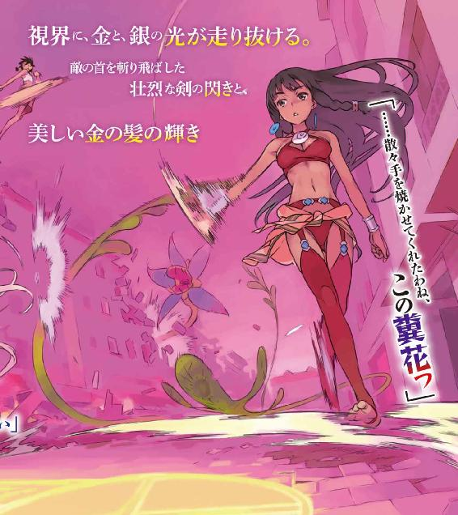
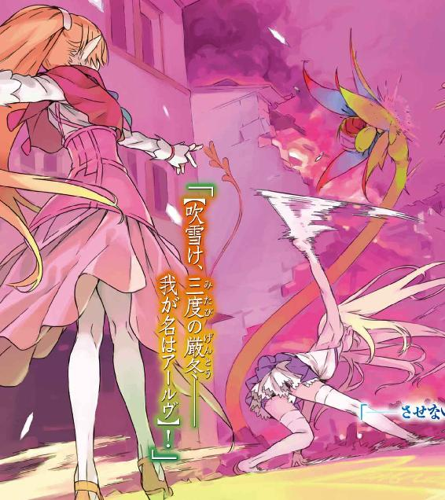

| ダンジョンに出会いを求めるのは間違っているだろうか外伝 ソード・オラトリア (GA文庫) | |
| 大森 藤ノ | |
| (2014) | |




ダンジョンに出会いを求めるのは間違っているだろうか外伝
ソード・オラトリア
大森藤ノ

本書に掲載されているコンテンツの著作権等の知的財産権およびその他すべての権利は、ＳＢクリエイティブ株式会社または正当な権利を有する第三者に帰属します。
本書の内容を権利者の許諾なく複製・複写・翻案・放送・出版・データ配信（送信可能化を含む）などすることはできません。
カバー・口絵 本文イラスト
はいむらきよたか
キャラクター原案
ヤスダスズヒト
度重なる咆哮が轟いていた。
地響きを伴う足音がそれに続き、荒涼とした地面を踏み荒らす。
山羊のようにねじれ曲がった二本の大角。首から上には膨れ上がった馬面とでも言うべき醜悪な顔面。盛んに吹き出る鼻息と呼応するように、真っ赤な眼球がぎょろぎょろと蠢き獲物の姿を睥睨する。
怪物と称するに相応しい巨軀を進撃させ、夥しい数の黒い塊が、鈍器を持つ太い腕を頭上高く振りかぶった。
「盾ェ、構えぇッ──!!」
号令とともに打ち上がる、数多の衝突音。
怪物達の進撃を掲げられた何十枚もの大盾が受け止める。
その突撃の威力を物語るように、盾を構えた者達の踵が地に埋まった。
「前衛、密集陣形を崩すな！ 後衛組は攻撃を続行！」
凶悪獰猛な怪物──モンスターを迎え撃つのは、複数の種族からなるヒューマンと亜人の一団だった。
二枚の巨盾を構える筋骨隆々のドワーフ、矢と魔法を間断なく打ち込むエルフと獣人。褐色の肌のアマゾネスの姉妹は戦場を駆けめぐり、味方の射撃をかいくぐりながらモンスターへと斬りかかる。
前衛後衛に二分される部隊の中、陣の中心でばさばさと風にあおられるのは、一本の旗だ。
刻まれているのは滑稽な笑みを浮かべる道化師のエンブレム。
一柱の『神』と契りを結んだ、『眷属』の証。
『──────────っっ!!』
一本の草木もない荒れ果てた大地。岩や砂、全てが赤茶色に染まった茫漠たる大空間。
舞い上がる砂煙に霞む景色の奥には、遥か上方にまで届く巨大な壁、そして空を塞ぐ天井。
何十もの階層を積み重ねた、『地底深く』。
決して地上には届かない雄叫びを張り上げながら、人とモンスターが戦闘を繰り広げる。
「ティオナ、ティオネ！ 左翼支援急げッ！」
この戦場にて誰よりも小柄な少年──小人族の首領の指示が、的確かつ矢継ぎ早に飛ぶ。
戦いの趨勢を見極める統率者の声は高く鋭い。目まぐるしく移ろい傾きかける戦況を、彼の指揮が幾度となく立て直す。
「あ～んっ、もう体がいくつあっても足りなーいっ！」
「ごちゃごちゃ言ってないで働きなさい」
命を受けたアマゾネスの姉妹が疾走し、三体のモンスターを一瞬で斬り伏せる。
事実、悪夢のような光景であった。
どこからともなく現れるモンスターの大群。屠れども屠れども途切れることなく押し寄せ、その数をもって吞み込もうと襲いかかってくる。
一匹一匹が大の大人を易々と越すその巨体は、化石の骨にも似た棍棒型の鈍器を振り回し、最前線で盾を構える者達の顔を苦悶に歪めた。肩を並べ密集し合った彼等の防衛線はじりじりと後退していき、半円を描く陣形がその規模を小さくしていく。
亜人達の一団は押されつつあった。
「リヴェリア～ッ、まだぁー!?」
アマゾネスの少女の声が向かう先、前衛組が庇うその背後。
魔法と矢を連発する魔導士や弓使いに囲まれた中心から、その美しい声は絶えず紡がれていた。
「【──間もなく、焰は放たれる】」
翡翠色の長髪に白を基調とした魔術装束。浅く水平に構えられるのは白銀の杖。
細く尖った耳を生やした、絶世の美貌を持つエルフ。
「【忍び寄る戦火、免れえぬ破滅。開戦の角笛は高らかに鳴り響き、暴虐なる争乱が全てを包み込む】」
この戦場の中で誰よりも美しく在る彼女は、その玲瓏な声で呪文を紡ぐ。
力強く、流麗な韻律を持つ『詠唱』。
足もとに展開された魔法円は翡翠の色に輝き、無数の光粒を舞い上がらせる。
その柳眉を逆立て、彼女は呪文を紡ぐ唇はそのまま、前方の一点を強く見据えていた。
「【至れ、紅蓮の炎、無慈悲の猛火】」
流れるその詠唱を耳にしながら、誰もが力を振り絞る。
まだかまだかとその瞬間を待ちわびるように、己の歯を食い縛った。
『──オオオオオオオオオオオオオオオオオオオオオオオオオオウッッ!!』
一方で、モンスター──『フォモール』が吠える。
群れの中でも一際巨体を誇る一体が、仲間さえ蹴散らしながら驀進し、自らが持つ得物を大上段に構えた。
迫りくる巨影に、正対することになった前衛の一人は、盾の隙間からその両目を見開く。
尋常ならざる膂力から放たれた一撃は、構えられた盾へと食い込み、そして周囲を巻き込んで、前線の一角を吹き飛ばした。
「──ベート、穴を埋めろ！」
「ちッ、何やってやがる!?」
こじ開けられた防衛線。遊撃を務めていた狼人が急行するが、間に合わない。数匹のモンスターの侵入を許す。
それまで前衛に守られていた魔導士達が青ざめるのと、フォモールの攻撃が炸裂するのは、同時だった。
「レフィーヤ!?」
一人の少女が吹き飛ぶ。
直撃こそ避けたものの、地面を粉砕した鈍器の一撃は、その衝撃波で細身の体を殴り飛ばした。
「──ぁ」
『フゥーッ......！』
地面に転がった少女へ、黒い影が被さる。
凶悪な獣面のフォモール。先程仲間の壁を突破した、あの超大型。
自身を見下ろす赤い目玉に射竦められ、少女は時を止める。
彼女の紺碧の瞳に、振りかぶられた鈍器が映った。
直後。
斬撃。
「えっ？」
彼女の視界に、金と、銀の光が走り抜ける。
間髪入れず、フォモールの体が血飛沫を噴出させ、宙に舞い上がっていた首が地面へと落下した。
「......」
呆然とする少女の視線の先。
長い金の髪を流す女剣士が、ヒュンッと、無言で銀の剣を振り鳴らす。
「アイズ！」
前衛方面、一部始終を見たアマゾネスの少女が歓呼する。
アイズ、と呼ばれた彼女は、尻餅をついている少女の無事を確認すると、すぐにその場を動いた。
風の音とともに、銀の剣閃が瞬く。
後方に侵入していた残りのモンスターへと肉薄し、一撃必殺、魔導士や弓使いの眼前で一気にフォモール達を全滅させた。
「ちょ、アイズ、待って!?」
更に前進。
制止の声を振り切り、未だ大挙して攻めかかってくるフォモールの大軍へと突っ込む。
盾を構える前衛達の遥か頭上を、宙高く身を躍らせながら、飛び越えた。
「......すげぇ」
ぽつり、と。
その呟きが、とある者の唇からこぼれ落ちた。
激しい剣舞が行われる。
斬撃に次ぐ斬撃。近付くモンスター全てを断絶する剣撃の嵐。
華麗であると同時に残酷な一挙手一投足が、向かってくる巨腕をすり抜け、胴を、首を次々と斬り飛ばしていく。
前衛に群がるモンスター達が激減していく中。
多くの者達が畏怖とともに、その【剣姫】の姿に見惚れた。
「【汝は業火の化身なり】」
「【ことごとくを一掃し、大いなる戦乱に幕引きを】」
そして後方。莫大な魔力の高まり。
ついに、紡がれていた長大な詠唱が完成へと至ろうとする。
「アイズ、戻りなさい！」
己の名を呼ぶ声に、少女──アイズは後ろを一瞥し、跳んだ。
怒りの声を上げるモンスター達に仰がれながら、空中で大きな弧を描き、蜻蛉を切って自陣中央へと着地、帰還する。
「【焼きつくせ、スルトの剣──我が名はアールヴ】！」
次の瞬間、弾ける音響とともに魔法円が拡大し、アイズ達の、全てのフォモール達の足もとにまで広がった。
全戦域が効果範囲内。
白銀の杖を振り上げ、エルフの魔導士、リヴェリアは己の『魔法』を発動させた。
「【レア・ラーヴァテイン】!!」
大炎。
地面──魔法円から突き出す無数の炎柱。
耳を弄するほどの轟音とともに、炎の射出がアイズ達を避けて放射状に連続する。大空間の天井にまで届こうかという炎の極柱は太く、フォモール達を串刺しにするどころか、その巨体を丸吞みにした。
劫火の奥に次々とモンスターの姿が消え、絶叫が折り重なる。
広範囲殲滅魔法。五十をも超すモンスターの大群はこの僅か数瞬で一掃された。
熱気と火の粉に満たされ、世界が灼熱に包まれる。
武器を静かに下ろす中。
アイズ達、『冒険者』の顔も緋の色に染め上げられていった。
世界には『穴』があった。
大陸の片隅にひっそりと口を開けていた大穴。遥か昔、人類がその目で確認する以前から在り続けたその『穴』の起源は知るよしもない。
『穴』は無限の怪物を産む、魔窟だった。
大穴より溢れ出る異類異形のモンスターは地上にのさばり、森を山を谷を海を空を、この世界のありとあらゆる領域を席巻した。一時なす術なく蹂躙された人類は、地上の支配者であった尊厳を取り戻すため、同胞の復讐を遂げるため、種族の垣根を越えて協力し合い反撃に打って出る。
後世にて『英雄』と称えられる者達の活躍により、モンスターと一進一退の攻防を繰り広げた人類は──やがてモンスターの根源である『穴』のもとへと到達する。
『穴』の奥には、地上とは異なる別世界があった。
数多の階層に分かれる『地下迷宮』。
日の光がなくとも不可思議な光源に満たされ、目にしたことのない草花が隆盛し、ここでしか採取不可能な鉱物が存在した。貴重な資源といい、『魔石』が生じるモンスターといい、この地下迷宮──ダンジョンには、確かな『未知』が横たわっていたのである。
そして、『穴』の上に『蓋』という名目で塔と要塞が築かれ始め、モンスターの地上進出を防ごうとする者達が有志を募るその一方で。
人類の中から、『穴』の向こう側の世界、地底に広がる未開の地を切り開かんとする酔狂な探索者達が現れるようになった。
いつしか、『冒険者』という言葉は。
その多くが、『未知』の誘惑に抗えなかった彼等を指すようになる。
そこから時は流れ。
当時の時代、『古代』の節目に、世界へ転機が訪れる。
『神々』の降臨。
文字通りの超越存在である彼等が、この世界、『下界』に顕現を果たしたのだ。
『天界』にて悠久の時を過ごすことに退屈していた彼等は、様々な文化を育み、そしてモンスターとしのぎを削り合う人類──下界の者の姿に、娯楽を見出したのである。
神々の降臨を境に、世界の有りようは変わった。
下界の者に無限の可能性をもたらす神々の『恩恵』によって、人類は急速に力をつけ、発展の道筋を辿るようになる。
地底にモンスターの巣窟が存在する、彼の地も例外ではなく。
迷宮都市オラリオ。
かつて『穴』の上に建てられた要塞が盛衰を繰り返し、築き上げられた、大陸屈指の大都市。
富が、名声が、何より『未知』が依然として眠る、魅惑の地。
欲に取りつかれた無法者達が、『未知』に焦がれる冒険者達が、そして娯楽を追い求める神々が集う、この世の中心。
多くの者の思惑と、そして物語がこの場所で交錯する。
祈りを捧げ、神に救済を願う古の時代は終わった。
今や人は神にちっぽけな一助を乞い、その一欠片の施しを手に、己が望みを叶える時代。
富を、名声を、未知を。
遥かなる高みを、渇望を──悲願を。
時は今、神時代。
雑多な騒がしさが流れている。
金属が擦れ合う音に取りとめのない話し声が絡み合う中、多くの者が周囲を行き交い何らかの作業に勤しんでいた。器材を肩に担ぐ者、地面に鉄杭を打ち込む者、小走りで伝言を言い渡していく者、様々だ。
中規模ほどの野営風景。
ヒューマンと亜人が区別なく交ざり合うその場所に、金の長髪がなびいた。
蒼色の軽装に包まれた線の細い体。肌はきめ細かいと同時に瑞々しく、繊細な顔立ちは遠目からでもわかるほど整っている。透いた輝きを宿す瞳は、髪の色と同じ金色だ。
性別問わず見る者の目を奪う美しいその容姿は、エルフにも、女神にさえ劣らない。
神秘的な雰囲気さえ感じさせる金髪金眼の少女が、てくてくと、折りたたまれた布を抱えて歩んでいる。
「ア、アイズさん！」
自分の名を呼ぶ声に、彼女──アイズは足を止めた。
振り返ると、山吹色の髪を後ろでまとめた少女が立っている。
顔の両端に垂れる一房の髪から伸びるのは、木の葉のように細く尖った耳。
容姿端麗で知られる、エルフの種族だ。
「さ、先程は助けて頂いて、ありがとうございました！ いつもいつも足を引っ張ってしまって......そのっ、すいません！」
「......怪我は平気、レフィーヤ？」
己を恥じるように何度も頭を下げるエルフのレフィーヤに、アイズはそう尋ね返す。
動作が一々緊張気味の彼女は目を見開き、全く問題はないと何度も主張した。
彼女、レフィーヤ・ウィリディスは、つい先刻繰り広げられていたモンスターとの戦闘の中で、アイズが間一髪助けた魔導士の一人だ。
小振りな目鼻立ちにはどこかあどけなさも窺えるが、種族特有の麗しさがやはり色濃い。その優美な相貌は、今は表情をころころと変えている。
自分の身を案じてくる命の恩人に対し、真面目な少女は恩義と感謝の念も重なってか、敏感に反応していた。
「......本当に、すいません。守られているだけじゃいけないのに、いつも私は......」
「......私は、大丈夫だよ」
ふと表情に影が差し、悔いるようにうつむくレフィーヤ。
アイズは言葉の通りに伝えるが、後輩に当たる少女は顔を上げようとはしない。
感情の表現が乏しいことに自覚のあるアイズは、困り果てて考え抜いた末、おもむろに手を伸ばした。
直前までためらい、その右手を宙でさまよわせたが、ゆっくりとレフィーヤの頭に乗せる。
少女が肩を揺らす中、その滑らかな山吹色の髪を、ぎこちない動きで撫でた。
「大丈夫だから」
顔を上げたレフィーヤの瞳が、ぐっと潤みかける。
しばらくなされるがままにしていた彼女は、頰を若干染めた後、「も、持ちます！」と言って勢いよくアイズの荷物を奪う。
あ、と天幕のための布地がアイズの腕の中から消える。
「──アーイーズ！」
「えっ!?」
「......ん」
がばっ、と軽い衝撃とともに、背後から腕を回された。
レフィーヤが驚く中、首を少し動かすと、一人の少女がアイズの背中に抱きついている。
「ティオナ......」
「何やってるの？ またレフィーヤがへこんで、アイズに慰めてもらってるの？」
「べ、別に私はっ、慰めてほしいわけでは......!?」
ティオナと呼ばれた少女の言葉に、レフィーヤが一段と赤面する。けらけら笑い、笑われるそんな二人のやり取りに、アイズはほのかに口端を緩めた。
健康的な小麦色の肌。その顔立ちには一片の曇りもなく、彼女持ち前の快活さが滲み出ている。服装はアマゾネス特有の踊り子のような衣装で、露出が多い。上は薄い胸回りを覆う布一枚、腰には長いパレオを巻いている。臍やしなやかな肢体を惜しみなく晒していた。
アイズの金の瞳と目が合うと、ティオナは向日葵のように明るく笑った。
「気にしない方がいいよ、レフィーヤ。大荒野で戦る時はみんな無傷で済むわけないんだし。一々謝られたら、アイズも困っちゃうよ。ね！」
「......うん」
「うっ......わ、わかりました」
小さくなるレフィーヤのことをティオナは一頻り笑うと。
今度は、アイズに回していた腕の力を少しだけ強める。
「で、さ。アイズ、何であんな無茶したの？」
「......」
「あたし止めたのに。防衛線を維持するだけで、フォモール達に突っ込む必要なかったよ」
ティオナの声音が、少し問い詰めるような響きに変わる。
モンスターとの戦闘の最中、アイズが独断で突撃を敢行したことを彼女は責めているようだった。何も言い返すことができないアイズは、彼女に心配させてしまったことも含め「......ごめん」と謝ることしかできない。
「あたしも大概だと思うけどさ......アイズはもっと危なっかしいよ」
小言にも似た呟きをどこか湿らせながら、ティオナは更に腕へ力をこめた。肩に乗る彼女の重みを感じながら、そっと目を伏せがちにする。
やがて「だからアイズはさぁー」と唇を尖らせながらぶーぶー言い出すティオナに、アイズは抵抗せずに身を任せ、ぎゅーと抱き着かれ続けた。
他方、彼女達の浅からぬ間柄を見せつけられるレフィーヤが、少し寂しそうに、そして少し羨ましそうに二人を眺める。
「おい、気持ち悪いから離れろ」
「痛ーっ!?」
と、横から伸びた長い脚が、ティオナの腰を蹴り付けた。
いつの間に現れたのか、頭上に獣耳、腰から尻尾を生やす獣人の青年が半眼を作っている。
鋭い毛並みを持つその耳と尾は、狼人のものだ。
怒気を発散させるティオナは、ぐるりと振り返り、アイズのもとから離れた。
「ちょっと何すんの!? すっごい痛かったんだけどー!?」
「気色悪いって言ってんだろ。寒気がすんだよ、変なもんを見せるんじゃねー」
「そんなこと言ってっ、ど～せベートはアイズにちょっかい出したいだけでしょ、この格好付け！」
「なっ、てめっ......け、喧嘩売ってんのかッ!?」
「やーい、図星ぃーっ！ 残念狼ぃーッ!!」
「クソ女ぁああああああああああああああああ!?」
「あ、あの、お二人とも、喧嘩は......!?」
あっという間に発展した激しい言い争い──ベートとティオナに、レフィーヤがおろおろと仲裁を試みる。
蚊帳の外に置かれたアイズはぽつんとたたずんだ。
「何やってるのよ......まぁ、聞かなくても見当はつくけど」
「......ティオネ」
騒ぎを聞きつけたのか、ティオナと同じアマゾネスの少女がアイズの隣に並ぶ。
腰まで届く長い髪型と雰囲気、後は一部の胸囲を除けば、ティオナと瓜二つだ。
ティオナの姉妹、双子の姉でもあるティオネが、溜息を堪えながらアイズに振り向く。
「アイズ、団長が呼んでいたわ、行ってきなさい。あれは私がやっておくから」
「......ごめん」
「いいわよ。──ほら、あんた達、遊んでるなら野営の準備を手伝ってきなさい」
注意を促すティオネの声を背で聞きつつ、アイズはその場を後にした。
ぽつぽつと天幕が完成しつつある野営地を進む。
目的地は視線の奥にある一際大きい幕屋だ。幕を張りめぐらせた小屋の側には、派閥のエンブレム──滑稽な道化師が刻まれた旗が立てられている。
【ロキ・ファミリア】。
アイズやレフィーヤ、ティオナ達が所属する『神』の派閥だ。
【ファミリア】とは、下界に降り立った神々のもとで結成される組織の名称である。
神々の間では下界生活という名の遊戯を楽しむため、彼等の美学に則った規則──全知全能である『神の力』の封印──が決められている。いわば零能の身に成り下がっている神々は、そこで『恩恵』という力の切っかけを下界の者達に与え、代わりに彼等に養ってもらう一種の利害関係を結んでいた。自分だけの徒党を旗上げし、競争させる、神々の娯楽の一環と捉えてもいい。
そして『恩恵』を授かった者達を、神と契りを結んだ一派という意味で、眷属と、そう呼ぶのである。
「フィン」
「ああ、来たかい、アイズ」
多くの神達が降り立ったこの下界には多数の【ファミリア】が存在しており、派閥の主神の意向に沿った多種多様の活動が行われている。
その中でアイズ達が所属する【ロキ・ファミリア】の活動目的は──『ダンジョン』の攻略、及び未到達階層の開拓だ。
「がははっ、今ちょうどお主の話をしとったところだぞ、アイズ」
「ガレス......今は笑うな」
幕屋の入り口をくぐった先には、足の短い卓を囲んでいる三人の亜人がいた。
レフィーヤと同じエルフの女性、リヴェリア・リヨス・アールヴ。
たくましい体付きのドワーフ、ガレス・ランドロック。
そして小人族の少年、フィン・ディムナ。
この三人が、【ロキ・ファミリア】の中核を担う首脳陣である。
「さて、前置きはいいだろう。何故呼び出されたかわかるかい、アイズ」
「......うん」
「なら話は早い。どうして前線維持の命令に背いたんだい？」
アイズの腹部ほどしか身の丈がないフィンが、冷静な口調で問いただす。
柔い黄金色の髪に湖面のような碧眼。誰よりも幼い外見でありながら深い理知を感じさせる彼こそが、ダンジョン攻略における全ての指令と判断を下す、全団員の首領だ。
「アイズ、君は強い。だからこそ組織の幹部でもある。内容の是非を問わず、君の行動は下の者に影響を与えるんだ。それを覚えてもらわないと困る」
「......」
「窮屈かい？ 今の立場は」
「......ううん、ごめんなさい」
一瞬過ぎった心の動きを見抜かれる。
透明な瞳で笑いかけてくるフィンに、アイズは素直に自省して謝罪した。
「まぁ、そう言ってやるな、フィン。アイズも前衛の負担を軽くしようと、あえてフォモールの群れに突っ込んだのだろう。危うく崩れかけたからのう」
「それを言うなら、詠唱に手間取った私の落ち度もあるか」
ごわごわとした長い髭をいじりながらガレスが、そしてリヴェリアが助け舟を出す。
乏しい表情の中、アイズが申し訳なさそうに眉を下げると、ドワーフの彼は軽く目を弓なりにし、麗人のエルフはそれ以上何も言わず瞑目する。
その一部始終にフィンは苦笑を浮かべ、ややあってアイズを見上げた。
「アイズ、ここはダンジョンだ。何が起きるかわからない。そしてレフィーヤ達全員が君のように動けないし、戦えない。それだけは心に留めておいてほしい」
「......わかり、ました」
「その顔を見ると、もうティオナ辺りに絞られたんだろう。行って構わないよ」
これ以上言うこともない、と告げるフィンに、アイズはぺこりと頭を下げた。リヴェリア達にもその謝意を向けながら。
幕屋を出て、アイズは最後のフィンの言葉を反芻しながら、おもむろに頭上を仰ぐ。
空の見えない、岩壁に塞がれたドーム状の天井。その遥か高い円蓋からは柱状の突起物が無数に伸びており、不可思議な燐光が表面にぽつぽつと灯っている。
ダンジョン。
迷宮都市オラリオの地中に存在する、広大無辺の地下迷宮。
モンスターが際限なく湧き出る深大な地の底に、アイズ達は今いる。
【ロキ・ファミリア】が拠点を置く迷宮都市オラリオには、世界に一つしかないこの地下迷宮を目指して、多くの冒険者が都市の門をくぐり、そして日々ダンジョンへと足を踏み入れている。神々もまた自派閥の勢力拡大・増強のため、多くが探索系の【ファミリア】を営み、迷宮の探索・攻略に乗り出していた。
アイズ達の【ファミリア】もその内の一つだ。
「おい、下手くそっ!? 何でてめえはテントの一つも張れねえんだ、馬鹿アマゾネス！」
「う、うるさいなー!? ベートの教え方が悪いんでしょ!? あたしは悪くないもん！」
「レフィーヤ、あっちはいいから、人を集めて炊事の方をお願いね」
「は、はいっ」
現時、【ロキ・ファミリア】は『遠征』の真っ最中。
ダンジョンの遥か深部までもぐり、長期間をかけて未到達階層を目指している。今はベースキャンプを作成し、大がかりな休息を挟もうとしていた。
『遠征』中とは言えモンスターとの熾烈な一戦──一つの山を越えたこともあってか、団員達の顔はどこか興奮と達成感に満ちており、辺りには良い意味で弛緩した空気が漂っている。和気藹々と野営地作成を行う仲間達を目にしながら、アイズはふらりと歩を進めた。
設けられた複数の天幕、無造作に置かれている物資運搬用のカーゴ。多くの器材の間を抜けると、雑然とした視界が一気に開け、野営地の外れへと辿り着く。
広がるのは、地底にあるとは思えない雄大な光景だった。
灰色に染まった木々の群れ。まるで灰をまぶされたような樹林は、彼方に見える壁面、階層の終わりにまで至っており周囲を埋めつくしている。樹木の間には川が葉脈状に走っており、青い水流が途切れることなく続いていた。
天井に灯っている燐光の規模は大して強くなく、宵闇に近い。
作成された野営地は高さ一〇Ｍほどもある広大な一枚岩の上にある。アイズはそこから眼前の景色を眺めた。
「......」
現在地、ダンジョン50階層。
多くの冒険者、【ファミリア】が存在する迷宮都市においても、攻略最前線と言っていい。
未だ多くの者が目にしたことのない光景──遥か大地の下に眠る灰色の大樹林を、アイズは一人たたずみ、しばらく眺め続けた。
携行用の『魔石灯』がいくつもの光を揺らす中、【ロキ・ファミリア】の面々は食事を始めようとしていた。
この50階層は、ダンジョンの中でもモンスターが産まれない貴重な安全階層でもあり、突発的事故や襲撃の危険性が格段に減る。ダンジョンに数層存在する安全階層は、彼等【ロキ・ファミリア】が野営地に選んだように、冒険者達の間で大規模の休息地帯として利用されていた。
「大荒野の戦いではご苦労だった。みんなの尽力があって今回も無事に50階層まで辿り付けた。この場を借りて感謝したい、ありがとう」
「いっつも49階層越えるの一苦労だよねー。今日は出てくるフォモールの数も多かったし」
「階層主がいなかっただけマシでしょ」
「ははっ。とにもかくにも、乾杯しよう。お酒はないけどね。それじゃあ──」
『乾杯！』
アマゾネス姉妹の話に笑いながら、フィンが音頭を取り、みなの唱和が続く。ダンジョン内ということで誰もが心中で警戒を忘れない中、その飲み食いを通して、彼等はほんの少々羽目を外した。
設けられた野営地の中心には大型の鍋が置かれており、それを囲むように団員達が周囲に腰を下ろしている。鍋の中身は途中の階層で採った香草と木の実、そして肉果実──字のごとく肉の味と食感のする果実──をじっくりと煮込んだスープだ。迷宮産の木の実や肉果実はモンスターの食用であるが、ヒューマンや亜人が口に入れても問題ないため、普通に食してしまっている。
諸事情により、ダンジョン内の食事は携行食といった粗末なものになりがちなので、今回のこれはごちそうと言っていい。士気も考慮したフィンの計らいで、団員達はダンジョンでは滅多に味わうことのできない料理に舌鼓を打っていた。
「あの、アイズさん、本当に食べなくて良かったんですか？」
「うん、大丈夫......」
「なーんて強がって、実はぐぅぐぅお腹鳴らしてるんじゃなーい？ ほらほらー？」
「......」
ブロック状の携行食をかじっていたアイズにレフィーヤが尋ねる中、ティオナがスープしか残っていない容器を近付けてくる。
食欲を存分に刺激する馥郁たる香りに視線が揺らぐが、アイズは鉄の意志でぷいっと顔を背ける。過剰な食事は戦闘状態に支障を来たすと信じて疑わない彼女は、満面の笑みを浮かべる褐色の小悪魔に最後まで抗った。
その後、あまりにもしつこいので、ティオナはティオネに頭を叩かれたが。
「それじゃあ、今後のことを確認しよう」
後始末をし、鍋も片付けた場でフィンが口を開く。
見張り以外の者達が小さな輪を作り、視線を彼へと向けた。
「『遠征』の目的は未到達階層の開拓、これは変わらない。けど今回は、59階層を目指す前に冒険者依頼をこなしておく」
冒険者依頼とは、冒険者に発注される依頼の総称だ。
受注した冒険者は依頼を達成し、その見返りとして依頼人側から報酬を受け取る。
注文を出してくる依頼人は【ファミリア】や商人、または迷宮都市を運営する管理機関など幅広い。
「冒険者依頼......確か、【ディアンケヒト・ファミリア】からのものですか？」
「ああ。内容は51階層、『カドモスの泉』から要求量の泉水を採取すること」
ティオネの確認に頷くフィン。すぐに、姉の隣でティオナがげんなりとした声を出す。
「『カドモスの泉』......うえー、面倒くさー。何で引き受けちゃったの？」
「報酬は見合うものだったからな。それに派閥の付き合いもある、無下にはできない」
「ったく、あいつら面倒な依頼よこしやがって......」
リヴェリアの返答の後にベートの悪態が続いた。
不満があらかた出しつくされると、フィンが話を再開させ、冒険者依頼の計画が伝えられていく。
「51階層には少数精鋭のパーティを二組、送り込む。無駄な武器・道具の消耗は避け、速やかに泉水を確保後、この拠点に帰還。質問は？」
「はいはーい！ 何でパーティを二つに分けるの？」
「注文されている泉水の量がまた厄介でね。『カドモスの泉』はただでさえ回収できる水が限られてる、要求量を満たすためには二箇所の泉を回らなくちゃいけない」
「食糧も含めた物資には限りがあるからのう。冒険者依頼の後、59階層へ行くためにもあまり時間はかけられん。二手に分かれて、効率化というやつだ」
フィンの説明にガレスが補足する。
ダンジョン深層への『遠征』は時間との戦いでもある。この50階層へ向かうだけでも最低五日はかかる行程だ、地上へ帰還する際のことも計算に入れると、物資の消費はできる限り抑えなくてはならない。
「それに『カドモスの泉』は大人数で移動できないところにあるからね。戦力の分散は痛いけど、小回りは利いた方がいい。......他に質問は？ ないなら、隊員を選抜する」
フィンの確認に反対の声は上がらず、そのままパーティの編成に移った。
そして、ここでもすぐにティオナが挙手をする。
「はーい！ あたしやるー！ アイズも一緒に行こう！」
「うん」
「そもそも、第一級冒険者に行かせないで誰に行かせるのよ......少数精鋭よ、わかってる？」
「じゃ、ティオネもこっちに決まりね！」
「ちょ、まっ、私は団長と......!?」
ティオナの一存で素早く三人が固まった。
「リヴェリアはキャンプに残ってくれ。冒険者依頼の後のためにも、消費した精神力を休んで回復させてほしい。拠点の防衛も兼ねてね」
「......止むをえないか」
【ファミリア】の中でも最高位の魔導士であるリヴェリアに、フィンは待機を言い渡す。
『魔法』を発動するための源──精神力を先の戦いで大きく削ったリヴェリアは、彼の指示に素直に頷いた。
彼女はそこから顔を上げ、一人の少女を見つける。
「レフィーヤ。アイズ達のパーティに入れ。私の代わりだ」
「は、はいっ......って、えっ!?」
「問題ないな、フィン？」
「ンー、そうだね。いずれリヴェリアの後釜になってもらうんだ、いいだろう」
「だ、団長っ、リヴェリア様!? わ、私はまだっ──!?」
「はいっレフィーヤもこっちー！」
アァーッ、とティオナに捕まり異議を封じ込められるレフィーヤ。
「これじゃと、もう片方は残った第一級で編成だのう。フィン、ベート、儂......後は」
「おい、ラウル。お前、サポーターでこっちに入れ」
「じ、自分っスか!?」
「他に誰がいんだよ」
ほどなくして各四名のパーティが決まる。以下が編成だ。
一班：アイズ、ティオナ、ティオネ、レフィーヤ。
二班：フィン、ベート、ガレス、ラウル。
「......なぁ、一班、大丈夫か？」
「ンー......」
編成が不安過ぎる、とその危惧を隠さず尋ねてくるベートに、フィンも黙考する。
無類の狂戦士であるアマゾネスのティオナは言うに及ばず、アイズもその戦い振りから『戦姫』という非公式の渾名をつけられるほどの戦闘狂。
ティオネなど表面こそ取り繕っているが、本質はこの二人以上に凶暴だ。格下のレフィーヤでは彼女達を御しきれる筈もない。
しばし沈黙を連ねた後、フィンは顔を上げる。
「ティオネ、君だけが頼りだ。僕の信頼を裏切らないでくれ」
「──お任せくださいッッ!!」
幼い外見の団長に大恋慕中のアマゾネスの少女は、その台詞に大歓喜しながら了承する。
頰を赤らめながら息巻く実姉に、「ちょろー」と妹が半眼で呟いた。
結局、そのまま最終決定した二組のパーティは、数時間の仮眠を経た後。
他団員を束ねるリヴェリアに拠点の防衛を任せ、51階層へと出発した。
「いっくよーッ!!」
かけ声とともに、ティオナが走る。
目を疑うほどの大きさと質量を誇る、大双刃。
特注の得物を両手で軽々と取り回しながら疾走し、瞠目するモンスター目がけ振り抜いた。
「五匹ぃ！」
大切断。
力任せの一撃がモンスターの胴体を叩っ切り、吹き飛ばす。
残った死骸には目もくれず、あたかもその本能に突き動かされるように、女戦士の少女は次なる獲物へと飛びかかった。
「アイズ、あの馬鹿を補助！ 揃って出過ぎないでよ！」
「わかった」
ティオナの後に続いた斬撃が、彼女に群がろうとするモンスター達を切り払う。
その金の長髪を翻しながら、アイズは銀の細剣を一閃させた。
現在位置51階層。
冒険者依頼のため降り立った階層にて、アイズ達一班のパーティはモンスターとの戦闘に突入していた。
51階層は『深層』では珍しい迷路構造を取っている。
平面を描く壁と床、天井。計られたように造られた規則正しい地下天然の通路が、いくつもの曲がり角や十字路を形成し、足を踏み入れる者を惑わせる。石とも土とも異なる材質で構成される壁の色は深い黒鉛色だ。
頭上に灯る燐光によって照らし出される下、幅広の直線通路でアイズ達と対峙するのは、ごつごつと黒光りした皮膚組織を持つモンスターの一群だった。
『ブラックライノス』。
前傾二足歩行を取る犀型のモンスター。二Ｍには及ばないもののその筋肉質の体軀は大型と言って差し支えない。頭部には個体によって異なる長短の角が二本ずつ生えている。
鎧と見紛う皮膚は硬く厚く、49階層にて交戦した『フォモール』を遥かに超える硬度を誇っている。
が、
『──!?』
「えいさぁーっ！」
斬り飛ばされる。
縦横無尽に振り回される双頭の大刃によって、ブラックライノスの群れはいとも容易く引き裂かれていった。
太い柄に連結された、二振りの巨剣。
数多の武器の中でも超大型に分類されるその得物は威力もずば抜けている。極幅極厚の剣身はモンスターの硬皮をないもののように無視し、大斬、その体を分解していく。
細身の体で信じられないほどの怪力を発揮しながら、円を描く動きであたかも舞いを踊るように。
ティオナは専用装備、大双刃《ウルガ》を使いこなす。
「──ッ！」
大双刃を振るうティオナの側で、アイズもまたモンスターに斬撃を見舞い蹴散らしていく。
装備するのは一本のサーベルのみ。己の総身以上の大型武器を扱うティオナと比べると、その銀の細剣は随分と見劣りするが、アイズ自身の技量と何より速度によって、敵の抵抗を寄せ付けない。ティオナと比肩する勢いでブラックライノス達を屠っていく。
その中で敵を何度斬ろうが、いくら鮮血を浴びようが、銀の光沢を放つ剣身が曇ることは皆無だ。
『不壊属性』。
迷宮都市に一握りしかいない上級鍛冶師によって作り上げられた、属性持ちの特殊武装。
『恩恵』を授かった鍛冶師達が神々の武具へと肉薄した高次の産物であり、アイズの剣は稀少な特殊武装の中でも『決して壊れない』という属性を有している。
威力そのものは他の一級品装備に劣るものの、戦闘中での欠損はありえない。
【ゴブニュ・ファミリア】製、第一等級特殊武装《デスペレート》。
限りなく、一秒でも長く戦い続けるため、アイズはこの武器を愛剣として選んだ。
「アイズ、あたし右やるねー！」
「うん」
暴風と化して奔放に戦うティオナと壮絶な勢いで敵を斬り刻むアイズ。一見ばらばらに戦い合っているようで、相棒の背中への進攻は決して許さない。互いの間合いを尊重し、時には跳躍し、時には入れ違い、適宜な位置へと己の体を滑り込ませる。
以心伝心の連携を披露しながら、二人の少女は危うげなく屍の山を積み上げていった。
「右通路から新手、四！ 奥からも合流！ レフィーヤ、準備ができ次第すぐに合図を出しなさい！」
アイズ達前衛がモンスターを一手に引き受け食い止める一方、中衛に陣取るティオネが指示を飛ばし、時折投げナイフをもって支援する。
未だ途切れないモンスターの出現に対し、指示を出されるレフィーヤは隊列最後尾の位置で、杖を構え『詠唱』を始めていた。
「【──略奪者を前に弓を取れ。同胞の声に応え、矢を番えよ】」
深層に棲息するモンスターの桁違いの威圧感と、何より先達の獅子奮迅振り。圧倒的な光景を前に、緊張で震えかける声を律しながら『魔法』に至る言葉を紡ぎ上げていく。
爆発寸前まで高まる鼓動の音が、レフィーヤの視界を揺らしていた。
『──ォオオオオオオオオオオオオオオオオオオオオオオオオオオオオオオ!!』
「!?」
突如、レフィーヤから見て真横の壁が破れる。
破片を撒き散らす小爆破とともに現れたのは、赤と紫が混色した巨大蜘蛛。
八本の脚と複眼を持つ、『デフォルミス・スパイダー』。
ダンジョンより産まれ落ちた大蜘蛛のモンスターは、壁面を破ると同時にレフィーヤへと飛びかかった。
完璧な不意打ち。時間を止めたレフィーヤは醜悪な大顎が迫りくる光景に棒立ちとなる。
しかし、回転しながら飛来してきた湾刀が、モンスターの奇襲を阻んだ。
『ギェ!?』
「詠唱を続けなさい、レフィーヤ」
「っ！ は、はいっ!?」
長い黒髪をなびかせ、ティオネがレフィーヤのもとに駆けつける。
投擲しモンスターの顔面に埋まった一刀の湾短刀、それをひねり、振り上げ、閃かし、瞬く間にデフォルミス・スパイダーを解体した。
「あ、っ、え、えっとっ......!?」
動揺が抜け切らないレフィーヤは瞬時の切り替えが行えない。
そして詠唱にもたついている内に、とうとう前衛ではアイズ達がブラックライノスの群れを片付けてしまった。
モンスターを殲滅し、通路内に束の間の静けさが訪れる。
「す、すいません......わ、私......」
「いーよ、レフィーヤ。仕方ない、仕方ない。こーいう時も、あるある」
大双刃を担ぐティオナと剣を鞘に収めたアイズが戻ってくる中、レフィーヤがうなだれて謝罪した。周囲の哨戒を怠らないティオネもそこに合流する。
攻撃の時機を逃し、アイズ達と全く嚙み合わなかった己の至らなさをレフィーヤは自責する。
「駄目です、やっぱりＬｖ．３の私じゃあ、みなさんの足を引っ張って......」
「落ち着きなさい、レフィーヤ」
すっかり沈み込む後輩の肩に、ティオネが手を置いた。
おそるおそる顔を上げる少女に、ティオナと揃って声をかける。
「Ｌｖ．の適性が低くても、あんたの魔法の腕なら現階層のモンスターにも通用するわ。リヴェリアのお墨付きでしょう？ 自信を持ちなさい」
「レフィーヤは『魔力』のアビリティが......ええっと何だっけ、ロキが言ってたやつ......そうそう、特化じゃん！ 『スキル』もあるんだし、撃っちゃえばモンスターなんて一発だって！」
「それ、は......」
自身の能力に言及され、レフィーヤは一瞬反論の材料を失いかける。
その山吹色の髪を揺らし、首と肩越しに己の背を一瞥した。
神から『恩恵』を授かった眷属達には、例外なくその背中に【神聖文字】──神々が扱う文字が、あたかも碑文のように刻み込まれている。そしてその文字群そのものが、神々が子供達に与える『恩恵』そのものなのだ。
『神の恩恵』──またの名を、【ステイタス】。
様々な事象から得られる【経験値】をもとに、神々が対象者の能力を引き上げ、新たな力を発現させていく恩寵。
下界の者達にとって、『神の恩恵』はあくまで成長の促進剤としての域を出ない。彼等はモンスターの戦闘を通すなどして【経験値】を積み、それを【ステイタス】の組成へと変え、己の行動によって自身の能力を強化させていく。言わば神々の授ける『恩恵』は、下界の者の可能性を引き出す種と呼べるものだ。
【ステイタス】は主に基本アビリティ『力』『耐久』『器用』『敏捷』『魔力』の五項目からなる基礎能力値、『魔法』や『スキル』と言った特殊及び固有能力、そして器の階位とも言えるＬｖ．から構成される。中でも心身の『進化』とも呼ばれるＬｖ．の上昇──【ランクアップ】は、アビリティの補正以上に対象者の力を大きくはね上げる。上位存在たる神に一歩近付く、という表現が最も近い。
レフィーヤの【ステイタス】はＬｖ．３。更に『魔法』にかかわるアビリティ『魔力』を特化させた、完璧な後衛魔導士型だ。
ティオナが言った通り『魔法』の威力を高める『スキル』の補助もあり、火力という点ではこのパーティの中でも彼女が最も高い。
「で、でも、私は一人では自分の身も守れません。さっきもティオネさんがいなかったら、務めも果たせずに無駄死にを......」
が、一方のアイズ達はＬｖ．５。
迷宮都市の中でも僅かにも満たない『第一級冒険者』を名乗ることを許された、超一線級だ。純粋な能力値、ひいては白兵戦における実力は彼女達の足もとにも及ばない。
事実として、この階層に出現するモンスター相手にその身一つで戦いを挑んだ場合、レフィーヤはなす術なく蹂躙されることになる。
ティオネ達の励ましにも、レフィーヤは必死に否定の言葉を並べた。
「......レフィーヤ達と、私達じゃあ、することは違うよ」
そんな時、アイズが口を開いた。
大人しい彼女が会話に加わってきたことに、レフィーヤは驚いて顔を上げる。
「私もリヴェリアに教わったから。私達はモンスターからレフィーヤ達を守って、レフィーヤ達は、私達をモンスターから......その、ん」
次第にアイズの口調がたどたどしくなっていく。
ティオナ達の視線が集まる中、普段からあまり喋らない弊害か、意思疎通が上手く図れない。
言いたいことを必死に纏めようとするアイズは、顔を淡く染めながら、視線を少し泳がせ、やがて次の言葉を言い切った。
「私達は、何度でも守るから......だから、危なくなった私達を、次はレフィーヤが助けて？」
自分を見つめる透いた金色の瞳と、仲間として信頼を寄せるその言葉に、レフィーヤは目を見開く。言葉を失った彼女は唇を震わした後、うつむいて、かろうじて頷きを返した。
ぐすりと聞こえてくる小さな嗚咽。
暗い雰囲気が一変し、どこか優しい空気が流れる。
ティオナは満面の笑みを湛え、嬉しそうにアイズの肩を引き寄せた。
きょとんとする彼女に、ティオネもまた小さく笑う。
「それじゃあ、さっさと『魔石』を回収しちゃいましょう。この数をレフィーヤだけに任せるわけにはいかないし」
ややあってティオネがそう告げ、アイズ達は二手に分かれて作業を始めた。
モンスターの死骸へと屈み、その胸部から『魔石』を抽出、回収する。
紫紺色で小石ほどの大きさの結晶を失ったモンスターの体からは、色素が急速に失われ、最後には灰と化し、何もなかったかのように散っていった。
「ティオネ、『ドロップアイテム』は残してきちゃったけど、いいの？ もったいなくない？」
「あんなでかい角や皮をいちいち集めてたら、すぐに荷物が溢れるわよ。優先するのは目標の泉水よ」
ティオナの質問に呆れながらティオネが答えた。やがてアイズ達は、モンスターの一部が転がった通路を出発する。
モンスターは『核』である『魔石』を失うと全身を灰へと朽ちさせる。その際に原型を崩さず取り残される肉体の一部分を、冒険者達は『ドロップアイテム』と、そう呼称している。
この『魔石』と『ドロップアイテム』は管理機関や商業系の【ファミリア】を通せば換金することが可能で、ダンジョン探索における主要な収入源となっている。
「レフィーヤ、荷物は平気？ なんだったらあたしが持つわよ？」
「い、いえっ、問題ありません。これくらい、やらせてください」
ティオネの申し出をレフィーヤは固辞する。彼女は武器である杖の他に、帯を肩から腰に斜めがけし、長筒型のバックパックを背中に回していた。
サポーター、という職業がある。
本来は非戦闘員の位置付けとなるサポーターは、『魔石』を始めとしたダンジョンの戦利品を回収し、地上に帰還するまで確保するのが役目だ。パーティの武器の予備や道具の携行など担うこともあり、飾らずに言ってしまうと、つまりは『荷物持ち』ということになってしまう。
だが、冒険者が迷宮を効率良く探索する上では必要不可欠な存在と言ってもいい。通常、専門職のサポーターがいない場合は、【ファミリア】やパーティの中で能力の低い者が務めることになる。
後方支援として機動性を重視しないレフィーヤは、自ら志願してサポーターを兼ねていた。
「......来る」
「どこ、アイズ」
「前......それに、後ろ」
画一的な通路をしばらく進んでいた時だ。
目を鋭くするアイズの呟きにまるで従うがごとく、進路上の前方、更に後方から、ビキリ、ビキリ、という不穏な亀裂音が鳴り始める。
間を置かず、先程レフィーヤを強襲したデフォルミス・スパイダーのように、ダンジョンの壁を破ってモンスターが現れた。しかも複数一辺に。
息を吞むレフィーヤを守るように陣形を作る中、アイズ達は再びモンスター達との交戦に臨んだ。
モンスターは、ダンジョンから産まれ落ちる。
卵から孵る雛鳥のように、内から壁面を破り、迷宮の至る場所から出現するのだ。
産まれ落ちた瞬間からモンスターはモンスターであり、即刻戦闘が可能な成熟体として誕生する。下の階層で産まれるモンスターほどより強な力を有しており、深層域ともなるとその脅威はもはや想像を絶するものだ。
ダンジョンはモンスターの『母胎』。
人類はダンジョンについてそう認識しているのみで、この広大な地下世界が一体なんであるのか何もわかっていない。唯一確かなことは、この地下迷宮は人類やモンスターとまた同じように『生きている』ということである。例えば壁を物理的に壊すなりしてみても、時を置けばダンジョンは独りでに破損箇所を修復し出し、もとの構造体へと復元させる。
何故地下に光が生まれるのか。
何故モンスターが産まれるのか。
何故迷宮の構造が修復されるのか。
遥か太古から今に至るまで、ダンジョンに関わる事柄はほぼ何も解明されておらず、厳然たる事実を明確な現象としてただ突き付けられている。
下界に降臨した全知を誇る筈の神々は、とぼけているのか、あるいは本当に何も知らないのか、子供達である下界の住人に何も教えようとはしない。
『ダンジョンはダンジョンだろ。ダンジョンに他の何を求めてるんだよダンジョン』とは神々の至言である。
ダンジョンの謎を解き明かす。
究極的、それこそが『未知』を追い求める冒険者達の到達点であるのかもしれない。
「なんかさぁ、今日あんまりモンスターと出くわさないよね」
「避けられるに越したことはないでしょう。戦わなくて済むなら、願ったりだわ」
「そういうんじゃなくてさ......うーん」
あれから数度、アイズ達はモンスターと遭遇し戦闘を消化していた。現在は順調と言えるペースで51階層を進んでいる。
ティオナを先頭に、アイズ、レフィーヤ、そして後方を警戒し殿に控えるティオネ。四人一列の隊列を組みながら、彼女達はダンジョン特有の緊張感に晒されていた。
モンスターが姿を見せないダンジョンは無音を孕み、同時にその静けさが不気味でもある。いつ何が起きるかわからない迷宮は剣吞な気配をあちこちにひそませていた。
不揃いかつ巨大な段差、丁字路に、三つも四つも枝分かれする道、錯綜する迷路。
不審な前兆を見落とさぬよう全方向に意識の網を張りめぐらしつつ、地図を頼りに目的地までの順路を選ぶ。次層──52階層に繫がる階段への正規ルートを外れ、階層の奥へ奥へ向かっていった。
「そろそろね......泉に着く前に、注意事項を確認しとくわよ」
幅のあった通路が間隔を狭め出し、ティオネがそう切り出した。
歩みは止めずにアイズ達は冒険者依頼の要点を確かめ合う。
「あくまでやることは泉水を確保すること......でも恐らく、強竜との戦闘は避けられないわ」
「あの、強竜、というのは、その......」
「うん、すごく、強いよ......」
「力だけなら、階層主より上かなー」
特定の階層にのみ、更に必ず一体しか現れない巨大モンスターを、冒険者達は畏怖を込めて階層主と呼んでいる。管理機関からの正式名称は、『迷宮の孤王』。
モンスターの親玉とも言える階層主はその層域では群を抜いた強さを誇る。迷宮を攻略する上での最難関であり、多くの冒険者が力を結集させて討伐する存在だ。
Ｌｖ．６相当の階層主を引き合いに出され、ごくりとレフィーヤは喉を転がす。
「や、やり過ごすことは、できないんですか？」
「無理ね。あの竜が泉を番人みたく守ってる間は。泉水だけ回収して逃げ出そうなんて考えていると、死ぬわ」
「あたし吹き飛ばされちゃって、体中がぐちゃぐちゃになったことあるしねー」
けらけら笑って語るティオナに、レフィーヤは追い打ちとばかりに血の気を奪われた。
「強竜を仕留めて安全を確保、泉水の採取はそれからよ」
「わ、わかりました......」
「ティオネ......作戦は？」
「定石通りいくわ。アイズとティオナ、私の総がかりで強竜を抑え込む。レフィーヤはでかい魔法を撃ち込んでちょうだい。怯んだところを、後は私達で一気に畳みかける」
「レフィーヤ、今度はばっちりお願いね～！」
「は、はいっ」
やがてアイズ達は足を止めた。先程から一本道だった通路はもう一寸先ほどで終わりを迎え、開けた空間へと繫がっている。『ルーム』と呼ばれる広間だ。
このルームに『カドモスの泉』が存在する。
「......」
ティオネが無言でアイズ達へ視線を配る。頷き合った彼女達は、ティオネを先頭にして隊列を組み直す。
足音をひそませ、残り僅かもない距離を進んだ。待て、とティオネが手の平をアイズ達に向けながら、ゆっくりと通路の先を窺おうとする。
彼女が合図を出せばそこで一斉に突入だ。誰もが息を凝らしパーティ全体にぴりぴりとした緊張感が生まれる。唇を引き結ぶレフィーヤは杖を強く握り締め、ティオナも普段のおちゃらけた態度を消す。アイズは前方だけを強く見据えていた。
身を低くして、彼女達はティオネの合図を待つ。
「......？」
異変、いや違和感に最初に気付いたのは、アイズだった。
眉を怪訝そうに曲げ、無遠慮な動きでその場から立ち上がる。
「ちょ、ちょっと、アイズっ」
「......おかしい」
「えっ？」
「静か過ぎる」
レフィーヤの呟きに反射的に答えながら、アイズは身を進めた。
ルームを覗き込もうとしていたティオネも追い越し、その先へと足を踏み入れる。
途端、彼女は目を見開いた。
「なに、これ......」
「荒らされてる......？」
慌ててアイズの後に続いたティオナ達も、呆然と動きを止めた。
ルームには、林に届かない密度で疎らに木々が生え渡っていたが、そのどれもが無残にへし折られ、あるいは押し潰されている。周囲の地面や壁も何かが暴れ回ったかのように罅割れて粉々になっており、多くの破片が散乱していた。
何よりそれらの光景の随所には、溶かされたような跡がある。
一部分を濃い紫に変色させている樹木からは、今も上がる黒煙と一緒にえも言われぬ異臭が漂っていた。
「くっさ......」
ティオナが顔をしかめながら鼻もとを腕で覆う。
困惑の表情を浮かべながらアイズ達はルームの奥に進んだ。これまで以上に神経を尖らせ警戒しながら、倒された木々の間を抜ける。
至る場所が破壊しつくされた光景の中、そこだけは、聖域のように守られていた。
美しい蒼色の水面を揺らす清冽な泉。
ルームの最奥に位置し、壁にできた割れ目──小さな岩窟から、僅かな量の水が不定期に湧き出ている。蒼いきらめきを宿す神秘的な泉水は、草花が広がる窪みに徐々に溜まっているところだった。
そして、そんな美しい泉の前でうずたかく積もる、大量の灰。
「これって......」
「......強竜の、死骸？」
ティオネのこぼした呟きが、やけに大きく響き渡った。
その莫大な量の灰は記憶にある竜の巨体の規模とほぼ等しい。間の主を失って静まり返る周囲の状況と照らし合わせてみても、まず間違いなく、これが強竜であったものだ。
魔石を失ったモンスターの末路を見下ろしながら、アイズ達は立ちつくす。
「......私達以外の【ファミリア】が、強竜を倒したんじゃあ......？」
おずおずと、レフィーヤが口を開く。
真っ先に考えられる意見に、ティオネは緩慢な動作で頭を振った。
「こんな深い階層に来られるパーティは限られてる。特定の【ファミリア】が私達と遠征期間を被らせているなんて、聞いていないわ」
「......それに」
アイズが呟き、小さな砂漠と化している足もとの灰へ膝を折る。
伸ばされた手が灰を払いのけ、埋もれていたあるものを持ち上げた。
「ドロップアイテムが、回収されていない......」
彼女が取り出したのは、金色に輝く翼の皮膜、その一部分だった。
『カドモスの皮膜』。
彼の竜を撃破しても滅多に発生することのない、稀少なドロップアイテムだ。これを換金するだけでも大規模のパーティの装備を全てまかなえるほどの、莫大な資金が手に入る。
一度の迷宮探索で少なくない金を飛ばす冒険者が、この飛び切りの戦利品を回収せずに放置するとは考えにくい。
「えっと、つまり、どういうこと？」
「何かがいたのよ、ここに。強竜を殺してのける、冒険者じゃない何かが」
沈黙が落ちる。
問いを発したティオナも応答したティオネも口を閉ざし、アイズは金色の皮膜にうっすらと反射する自分の顔を見つめる。
レフィーヤがみなの心の内を代弁するように、その細い二の腕をさすった。
「......嫌な予感がする。早く戻りましょう」
ティオネの声に異議を唱える者はいなかった。
フィンにここで見たものを伝えるため『カドモスの皮膜』、そして変色した木の一部を回収する。アイズ達が作業をする傍ら、バックパックを持つレフィーヤは中から瓶を取り出し、窪みから泉水を汲み上げた。
本来ならば湧き出る側から強竜が泉を飲み干してしまうため、泉水の回収は常に微々たるものなのだが、今回の場合はその肝心な竜がいない。
あっさりと冒険者依頼の要求量に達してしまった泉水に、レフィーヤは何とも言えない顔をしながら瓶の蓋を閉め、バックパックへと詰め込んだ。
「二箇所の泉に、回る必要なかったですね」
「そうだね......」
ルームを後にし、来た道を急いで引き返す中、レフィーヤが無理矢理作ったような苦笑を浮かべる。アイズは何かを考えるように、前を見たまま頷いた。
そのすぐ前方では彼女達より先行する形で、アマゾネスの姉妹があのルームの惨状について会話を交わしている。
「ねぇ、どう思う？」
「普通に考えたら、他のモンスターの仕業なんでしょうけど......」
隣に並ぶ妹の問いに、ティオネはその先の言葉を濁していた。
泉の周辺を縄張りとする強竜は、階層内でも絶対数が少ない『稀少種』であると同時に、強力な泉の番人でもある。
その力は51階層最強。むしろ他層で出現する階層主を抜きにすれば、現在発見されているモンスターの中でも間違いなく段階的能力構造の最上位に君臨する。
ブラックライノスやデフォルミス・スパイダーが束になっても、まず敵わない。
（......異常事態）
ティオネ達の会話を耳にしながら、アイズは己の主神がよく使う口癖を胸の中で呟いた。
それからしばらく進み続け、
『──あああああああああああああああああああああああああああっっ!?』
いきなりだった。
臓腑の底から引きずり出されたような絶叫が、アイズ達のもとに届く。
ことの重大さを直感させる凄惨な人の悲鳴。入り乱れた迷路に次々と反響し、鼓膜をあらゆる角度から何度も打ちすえる。聞き覚えのあるその声音に、弾かれたように顔を見合わせたアイズ達は、一気に加速し走り出した。
「今の声っ！」
「ラウル......！」
悲鳴の方角と、後は勘頼り。
現れるモンスターを強引に振り払い、通路を幾度も曲がったアイズ達の視界に、それは飛び込んできた。
「なに、あれ!?」
「い、芋虫......っ!?」
ティオナ、レフィーヤと声が響く中、アイズは金の双眸を見張る。
巨大なモンスターだ。
全身を占める色は黄緑。ぶくぶくと膨れ上がった柔らかそうな緑の表皮には、ところどころ濃密な極彩色が刻まれており異様に毒々しい。無数の短い多脚からなる下半身はレフィーヤが呻いたように、確かに芋虫の形状に似ている。長い下半身に乗る格好の上半身は小山のように盛り上がっており、厚みのない扁平状の器官──恐らくは腕──が左右から伸びていた。先端には四本の切れ目が入っており、指に見えなくもない。
ダンジョン深層を探索してきたアイズ達でさえも、一度も目にしたことのないモンスター。
──新種のモンスター？
進行に合わせ上下に振動するモンスターの巨軀が、四Ｍはある天井と何度もぶつかり合い削り落とす。横幅も道の両端にほぼ届き、通路一杯を塞ぎながらこちらへと迫ってくるその光景は、戦車という言葉をアイズに連想させた。
「団長!?」
そして距離を残さずモンスターに追走される、フィン達二班のパーティ。
アイズ達に勝るとも劣らない第一級冒険者達が、戦闘を放棄して、モンスターに背を向けながら全力で逃走している。
ティオネが悲鳴に近い叫び声を散らした。
「っっ！」
最も早く動いたのは、ティオナだった。
眦を吊り上げ、アイズ達のもとから飛び出していく。
敵の進撃を食い止めようと、追われるフィン達と行き違い、モンスターへと斬りかかった。
「止せ、ティオナ！」
フィンの制止の声も聞かず、接敵。
肉薄するティオナに対しモンスターは顔面と思しき位置から、がぱっ、と嫌な音を立てて口腔を開く。次には勢いよく、大量の液体を放出した。
紫と黒が混合したおぞましい大理石模様の液を、しかしティオナは難なく回避。懐に飛び込みがら空きになっている胴体へ、大双刃を叩き込む。
『──────────ッッ！』
「っ!?」
モンスターの苦悶の叫び、破鐘のような啼き声が轟く一方、ティオナの瞳もまた驚愕に見開かれた。
敵の傷口から先程のものと同色の体液が迸り、眼前に飛散する。
首をひねり間一髪避けたものの、一粒の細かな液が一本の髪に触れ──じゅぅっ、という音とともに溶かした。
ぞっっという悪寒が走り、ティオナは地を蹴ってその場から離脱する。
「えっ......!?」
後方へと着地した瞬間、ティオナは自分の目を疑った。
大双刃の片方の剣身が、消えている。
いや違う、大双刃も溶けたのだ。
敵の体内に埋まったことによりあの体液に侵食され、跡形もなく。
目のすぐ横の頭髪と大双刃が煙を上げる。溶解したかのような跡を残す剣身の断面を見つめ、ティオナは言葉を失った。
まさかの、武器破壊。
『────────────────────ァァ!!』
モンスターがいきり立つような咆哮を上げ、再び口腔から液体を噴出させた。
ティオナは泡を食って大きく避け、アイズ達もこちらに届いてきた紫液を回避する。
液の一線が通路を走り抜け、瞬く間に地面をじゅぅぅぅっと溶かした。
「あんなの聞いてないよー!? 何で教えてくれなかったのー!?」
「フィンが止めただろう、馬鹿女!!」
フィン達に倣って逃走に加わったティオナが泣き叫ぶ。すぐ隣で並走するベートは罵倒とともに突っ込みを入れた。
ティオナ達と、そしてモンスター。押し迫る光景に無言で視線を合わせるアイズとティオネ、レフィーヤもまた、くるりと回転して一斉に走り出す。
精鋭集団全隊員、まさかの猛退散だった。
「アレなにぃ、フィン!? 冗談じゃないんだけど！ もう、あたしの武器～！」
「わからない。僕達も突然襲われた」
グズグズと柄まで溶け出した大双刃を破棄し、ついでに今も煙を上げる髪もぶちっと抜いた涙目のティオナに、フィンが逃走しながら答える。
アイズ達と同じように『カドモスの泉』へと辿り着き竜を倒した彼等は、引き返す途中にあのモンスターの群れと出くわし一旦は交戦、しかし先程のティオナのように武器を失い、止むなく逃走を選択したと。
そう簡潔に説明された。
「群れって、あれ以外にも同じモンスターいるの!?」
「よく見ろっての。あのでけえやつの後ろに、アホみてえに続いてんだろ」
「うぇ～っ」
「団長達は、お怪我はありませんか？」
「僕達は問題ない。ただ、ラウルが不味い。あの攻撃の直撃を浴びた」
「早く治療してやらんと、こりゃいかんぞ！」
ティオネの問いにフィンが、そしてラウルを肩に担ぐガレスが切羽詰った声を出す。
ドワーフの大きな左肩に担がれるヒューマンの青年は、今も煙と異臭を放っていた。ぶらんと両手を力なく垂れ下げ、時折「ぅ、ぁ......」と小さな掠れ声も落としている。身に纏う軽装ごと皮膚は溶かされ、更に黒がかった紫色に変色している有り様だ。
仲間の惨たらしい姿に、レフィーヤは顔を蒼白にさせる。
「え、ちょっと......あのモンスター、ブラックライノスを襲ってるよ!?」
後ろを振り返ったティオナが叫んだ。
アイズ達が既に過ぎ去った十字路で、横手の道から現れたブラックライノスを、例の芋虫型のモンスターは出会い頭に攻撃していた。腐食液で体を溶かし動きを止めた後、その巨大な口を開いて上半身を一吞みにする。
「あのモンスターは、僕達も他のモンスターも、近付いたものには全て反応して攻撃してくる」
「見境なしってことですか？」
「いや、どうかな。決めつけるには材料は少ないけど......モンスターを率先して狙っている節があるように感じる」
後ろを顧みて瞳を細めるフィン。
黄金色の髪を揺らす彼を見下ろしながら、ティオネは懐から木の欠片を取り出した。
「団長、実は私達が向かう前に『カドモスの泉』が荒らされていました。強竜は灰になってドロップアイテムだけが。この木の欠片も、同じ場所で」
「ンー......決まりか。強竜も倒すとはね」
受け取った樹木の一欠片を見つめ、フィンは結論した。
色が変わった木片には、モンスターの液体に晒されたものと同じ腐食跡がある。
「共食いのモンスターかよ。はっ、これだから化物は......」
「ずっと下の階層に棲息しておったのが上ってきたか、それともダンジョンが新種のモンスターを産んだのか......どちらにせよ、厄介じゃな」
ベートが侮蔑を隠しもせず、一方でガレスは憶測とともに嘆息する。
激しい人数分の足音を重ねて迷宮に響かせながら、先の見えない逃走を続ける。
「フィン、あのモンスターは倒せる？」
一向に走り続ける中、アイズがその言葉を周囲に打った。
仲間達の間で生まれる一瞬の沈黙。
やや前方を走り、顔だけを向けてくるアイズに、フィンは間を空けて答えた。
「攻撃自体には効果はある。けど、それは一撃に対し一つの武器を犠牲にだ、さっきのティオナのようにね。割に合わな過ぎる」
「......」
「あの数の群れを相手にするには、尚更無茶だろう」
ただし、とフィンは続ける。
「魔法ならその限りじゃない。この状況下では難しいかもしれないけど、詠唱するだけの時間を何とか稼いで、群れを殲滅できるほどの強力な魔法を撃ち込めたなら......」
フィンの分析が終わる。
そして言い終わるや否や、アイズの、その場の全員の視線がある人物のもとに集まった。半死半生で担がれているラウルの目さえちらりと向けられる。
自分の顔に集中する周囲の視線に、レフィーヤは、「えっ、えっ？」と顔をきょろきょろと左右に振った。
「っ！ 前からも来た！」
前方から押し寄せてくる黄緑色の巨軀。
ティオナが警告すると同時にフィンも指示を出す。
「全員、右手の横道に飛び込め！」
方向転換し、唯一残された通路へアイズ達は体をねじ込んだ。
それまで進んでいた道幅より狭くなった一本道を、一列または二列で駆け抜けていく。
「ティオネ、武器と道具の手持品は？」
「え......あ、はい、何も消費していません。ティオナの得物以外は、全て無事です」
「よし、ガレス達に武器を渡せ。この先のルームは行き止まりだ、君はラウルを伴い奥まで下がって、道具を使って治療しろ」
都市規模と同等以上の51階層の構造を、地図も見ず完全把握している小人族の首領に息を吞みながら、ティオネはすぐに指示に従った。
フィン達二班はサポーターのラウルごと荷物を溶かされてしまい、武器は全損してしまっている。よってレフィーヤが背負っていた長筒型のバックパック、それに収納されていた予備の剣、ナイフを取り出し装備した。
「おい、こんなの寄こしてどーすんだ!? どうせ溶かされんだろ！」
本来自分の扱う得物ではない湾短刀を持って、ベートが声を荒らげる。
フィンは右手の親指の腹を、ぺろっと一舐めした。
「親指がうずうずいってる。──恐らく、来るんじゃないかな」
意味深な呟きが落ちると、間もなく広大な袋小路が見えてくる。
現在進んでいる通路にしか出入り口が繫がっていない、正方形のルームだ。
そして全員がその空間に足を踏み入れた瞬間、三方──正面及び左右──の壁面全てに、亀裂が走った。
「!!」
ベート達が顔色を激変させる。
今更見間違える筈がない。モンスターが迷宮より産まれ落ちる、その前触れ。
しかも大規模。ルーム全体からモンスターが出現することは明らかだ。
『怪物の宴』。
突発的なモンスターの大量発生。通路口方面を除くコの字型の包囲網。冒険者を絶望の淵に突き落とす、悪辣な迷宮の陥穽。
あたかも謀ったかのように、ダンジョンが理不尽な罠を作動させる。
「ベート、ガレス、ティオナ！ ラウル達を守りつつ敵を駆逐しろ！ あの新種は僕とアイズがやる──かかれ！」
この事態を見越していたかのようにフィンが命令を下す。
指針を得て混乱を免れたベート達は、迎撃せんと一気呵成に壁へ向かって走り出した。
連動するように。
凶悪な産声を響かせながら、三〇以上のブラックライノスが壁面を破って現れる。
「レフィーヤ、後退して詠唱を始めろ。この戦闘は君にかかっている、急ぐんだ」
「......！ わかりました！」
レフィーヤもまた、与えられた役目に大きく頷いた。
その紺碧の瞳から気負いの影も、迷いも振り払い、後方へと下がる。
その後ろ姿は見届けず、フィンは最後に、金髪の少女の隣へ並び立った。
「アイズ」
「わかってる」
目配せしてくるフィンに、アイズは頷く。
激しい地響きが鳴り響いてくる通路口を見据え、一声。
「【目覚めよ】」
超短文詠唱を引鉄に、『魔法』を発動させる。
「【エアリエル】」
風が生まれた。
形として視認できるほどの大気の流れが、踊るようにアイズの体を包み込む。
砂金のごとき輝きを放つその金の髪が風を孕み、波打った。
【エアリエル】。
アイズが使用できる唯一の魔法。
体や武器に風の力を纏わせることで対象を守り、攻撃を補助し、速度を上げる、『風』の付与魔法。
迷宮の淀んだ空気を押しのける清涼な風の加護を宿しながら、アイズは腰に佩いている剣を引き抜く。しかし装備はせず、「フィン」と呼びかけ隣の少年に預けた。
「『不壊属性』か......疑うわけじゃないけど、通用すると思うかい？」
「多分......」
「頼りないね」
苦笑を浮かべながらフィンは自身の背の丈ほどある《デスペレート》を持ち、代わりに予備の片手剣をアイズへと渡す。
アイズが剣を受け取って前を向くのと、戦車と見紛う巨体が通路口を破壊しながら突破してくるのは、同時だった。
『──────────────────ッ!!』
破鐘の雄叫びを上げ、モンスターが眼のない顔をアイズ達へと向ける。
生理的嫌悪を感じさせるその黄緑の体軀は、胴からブシュッと頻りに体液を散らしており、ずるずると進む側から足もとの地面を溶かしていた。
ティオナが武器と引き換えに傷を負わせた、あの大型だ。
「風であの腐食液を防げないようなら無理はしないでくれ。レフィーヤの準備が整うまで時間を稼げれば、それでいい」
「うん」
「余計な心配だとは思うけどね」
続々と芋虫型のモンスターがルームへ雪崩込んでくる。
体の作りには大小の違いがあり、先の大型のような個体もいればフィンほどの大きさのものもいた。
ティオナ達が既に戦端を開いている中、おぞましいモンスターの大群に向かって、アイズはヒュンッと剣を鳴らす。
風が揺らめいた。
「──先に、行くよ」
地を蹴る。
爆風めいた音と砂塵を巻き起こし、アイズの姿がかき消えた。
全身に付与した風の力で得た猛烈な加速。
文字通り疾風と化し、アイズはモンスターの群れへ一直線に突き進んだ。
『！』
その高速の突貫に反応できたのは、先頭の大型のみだった。
モンスターは勢いよく開口し、既に至近距離に迫られているにもかかわらず、腐食液を放出する。
アイズは斜め下から剣を、振り抜いた。
神速の一閃が、纏った風のうねりを盾に、紫液を弾き飛ばす。
防御不可能な敵の攻撃を、銀の軌跡が斬り裂いた。
『──』
肉薄する。
切り開かれた腐食液の間を疾り抜け、敵に次の行動を許さないまま、アイズはその懐へと入り込んだ。
硬直するモンスターに袈裟斬り。風に護られた剣は、胴体を深く斬りつけても溶けることはなかった。間髪入れず傷口から体液が飛び散るが、アイズの体を取り巻く気流がその全てを吹き飛ばす。攻守一体の風の鎧は越えられない。
金色の両眼が細まる。
剣の柄を握る右手が、ぶれた。
──『アイズ・ヴァレンシュタイン』。
最強の一角とも名高い、金髪金眼の少女の本名。
迷宮都市オラリオ屈指の剣士として名を連ねる、第一級冒険者。
その二つ名は、【剣姫】。
『──────────────────────────────ッッ!?』
仮借のない、連続斬撃。
凄まじい速度と鋭さ、剣筋でモンスターをめった切りにする。
斬り刻まれたモンスターは絶叫を上げ、大理石模様の体液を至る箇所から噴出させながら崩れ落ちた。
肉体の均衡を失ったのか、黄緑の表皮はぶくぶくと膨れ上がり、勢いよく破裂する。
「あぶなっ!?」
『オオオオオオオオ!?』
爆弾のように腐食液が周囲に飛散した。
アイズ達から離れた位置で交戦するティオナのもとまで届き、被液したブラックライノスが悲鳴を上げのたうち回る。
「やれやれ、倒したら倒したで爆発するとは」
溜息を半ばつきながら、フィンも芋虫のモンスターに接近する。
中型と言える大きさの相手は、胴体をひねり、海鷂魚にも似た広く平たい扁平状の腕で薙ぎ払おうとしてくるが──フィンはその小さな体を活かし、易々と回避。
身に付けている腰巻きを翻し、地に伏せるような態勢で間合いを埋め、アイズの《デスペレート》をその疣足に見舞った。
「よし、いけるね」
モンスターの悲鳴とともに迸る体液を完璧に見切りつつ、溶け出していない剣を見て頷く。
体液に晒された《デスペレート》は剣の腹から煙を立ち上らせているものの、その刃は微塵も欠けていない。モンスターの腐食液にも耐えうる特殊武装に一笑しながら、フィンは更に斬撃を繰り出した。
その短い多脚のみ狙いを絞り、二つ三つと切断。
片側半分の疣足を失ったモンスターはバランスを失い、地面へと倒れ込む。
魔法の恩恵を受けているアイズには劣るものの、フィンの動作は俊敏かつ要領が良く、何よりの一切の無駄──行動へと踏み切る躊躇がない。それは自分より巨大な相手を倒すために身に付けられた知恵と、勇気だ。
敵の無効化のみを念頭に置き、小人族の少年は戦場を駆け抜ける。
「っっ！」
一方でアイズはモンスターの撃破を重ねる。
【エアリエル】によって風を纏う高威力の斬撃は、一振りないし二振りで敵の息の根を止めた。
切れ味が増した剣をモンスターは阻めない。腐食液も剣の風圧によって切り払われ、時にははね返されることで自らの体を溶かす。
もとより、その疾風の身をモンスターの攻撃が捉えることはできない。
度々その姿を見失い、腕を伸ばせば振り切られ、すれ違いざま斬撃まで叩き込まれる。
一陣の風となって縦横無尽に疾走する少女は、あまりにも速過ぎた。
「アイズ！」
「！」
正面から向かって来るフィンと連携して、一際大きいモンスターを挟撃。
彼に足を断たれ態勢を崩す敵へ、宙に舞って斬りかかる。
振り抜いた剣から感じ取る、僅かな硬質な手応え。
見事『魔石』を捉えた一撃が、モンスターを灰の山へと変えた。
「ラウルッ、ほら、しっかりしなさい！」
「無理っす、ティオネさんっ。俺もう駄目っすっ、このまま死にます」
「そんなことほざいてるなら私が息の根を止めるわよ!? あんたが全快しないと、団長を助けにいけないのよッッ！」
「あ、すいません殺さないで......!?」
ラウルを床に寝かせ、回復薬と解毒薬で治療に取りかかっているティオネの罵倒を背中で聞きながら、戦況を見極める。
通路口から現れるモンスターはようやく終わりを見せようとしていた。
アイズとフィンは敵を圧倒しているが、数の多寡は覆っておらず、未だ予断は許されない。
戦闘が長引けば、それだけ天秤はモンスター達のもとに傾くことになる。
「【誇り高き戦士よ、森の射手隊よ。押し寄せる略奪者を前に弓を取れ。同胞の声に応え、矢を番えよ】」
アイズ達が戦闘を繰り広げるのを遥か前方に、レフィーヤは詠唱を行う。
その瞳は使命に燃えていた。緊張や怯えは勿論ある、だがそれ以上に、隠れた憧れを抱くあの少女から託された言葉がある。
次は助けてほしい、と。
報いなければならない。彼女達の働きに応え、今度こそ。
この『魔法』をもって、彼女達を救うのだ。
眦を決したレフィーヤは、己の声を力強く紡いでいった。
「【帯びよ炎、森の灯火。撃ち放て、妖精の火矢】」
透き通るような玉音が進むにつれ、足もとに展開された魔法円が輝きを増していく。
基本アビリティから派生した、発展アビリティ『魔導』。
魔法を極めし者が【ランクアップ】を通じて発現することのできる、『スキル』とは別枠の魔力特化項目。威力強化、効果範囲拡大、精神力効率化。魔法を使用する上で様々な補助をもたらす魔法円は、『魔導』のアビリティを手に入れた上位の魔導士の証だ。
構築される何重もの円に、複雑な体系の紋様。
立ち上る山吹色の光に、レフィーヤの美しい相貌が照らされる。
「【雨の如く降りそそぎ、蛮族どもを焼き払え】」
最後の詠唱文を唱え、魔力が爆発的に強まった。
レフィーヤはきっと双眸を吊り上げる。
「撃ちます！」
叫ぶと同時に照準、ラウルやティオネが待機する後方を除いた、ルーム全域。
撤退するアイズ、フィン、そしてティオナ達を捉えたレフィーヤは、杖を構え魔法を行使した。
「【ヒュゼレイド・ファラーリカ】!!」
夥しい火の雨が連発される。
燃え上がる鏃型の魔力弾は宙に弧を描き、モンスター目がけ殺到。燃焼音と風切り音を轟かせながら敵に命中し、突き刺さり、炎上、外れた矢は地面を爆砕し岩盤をめくり上げた。
数百数千にも及ぶ炎矢に、モンスター達の絶叫も吞み込まれた。爆撃と言って相違ない広範囲魔法にルームが赤く染まり、瞬く間に炎の海が生まれる。
ブラックライノスが、芋虫型のモンスターが、灰すら残さず燃えつきていった。
「ほらっ、やっぱり通用するじゃん！ 一発だよ、一発！ レフィーヤすごい！」
「あ、ありったけの精神力をつぎ込んだので、その......」
「景気良すぎんだろ、リヴェリアと言いエルフどもはよぉ......くそっ、毛が焦げちまった」
「がははっ、ここまで来ればスカッとするわい」
レフィーヤとティオネ達を守るように三角形を作っていたティオナ、ベート、ガレスが戻ってくる。唯一魔法の範囲外にいた後方の敵は、ガレスが全て倒し終えていた。
敵を掃討しティオナに褒めちぎられていると、やがてアイズとフィンも帰ってくる。
「......ありがとう、レフィーヤ」
「ぁ......は、はい！」
感情の乏しい顔を、アイズは確かに綻ばせた。
向けられた小さな笑みとその言葉に、レフィーヤは瞠目して、すぐ感極まるように相好を崩す。紺碧の瞳を潤ませ、そっと目尻を拭った。
ほんの一時、場が祝勝の雰囲気に包まれる。
「......」
「団長？ どうしたんですか？」
火の粉がまだ舞い上がる中で、押し黙っているフィンにティオネが歩み寄る。
視界の隅では一命を取りとめたラウルが腹をさすっていた。
「このルームに逃げ込む前......危うく挟撃されかけたあの時、モンスター達は前からやって来た。そしてあの道は、50階層に到達できる正規ルートだ」
「......まさか」
「ただの杞憂ならいいんだけど......そうも言っていられないか」
虫の知らせを感じるように、自身の右手、親指を見下ろすフィン。
ぺろりと指の腹を舐めた彼は、愕然とするティオネを見上げた。
「アイズ達を集めろ。全速力でキャンプに戻る」
50階層と51階層を繫ぐのは傾斜面の岩壁だ。
50階層西端の壁に大穴が空いており、ほぼ崖という名の険しい坂が続いている。51階層に向かう際は一足飛びに駆け下りていけばいいが、帰還する際には少々手間をかけて上っていかなくてはならない。
岩壁の至るところに付着する黄緑色の粘液に誰もが危機感を募らせながら、アイズ達は手を使わず跳躍の連続で坂を駆け上がる。
大穴から飛び出すと、聞こえてくるのは人のかけ声と、けたたましい炸裂音だった。
「キャンプが......！」
灰色の森を駆け抜けながら、野営地の方角から上る黒煙にティオナが反応する。
速度を一層上げ、アイズ達は大樹林を走破した。
「リヴェリア、みんな!?」
森を抜けた先に広がるのは開けた平地と、野営地を構えた一枚岩、そして岩に取り付く巨大な芋虫の群れだった。
モンスター達はその多脚を一枚岩に張り付けよじ登り、頂上で防衛を行うリヴェリア達に腐食液を浴びせている。
崖際で腐食液を防いだ団員達が、すぐに溶け出していく盾を破棄していく。
「矢、放て！」
「これが最後です!?」
「構わん、撃て！」
リヴェリアの号令のもと、よじ登ってくるモンスターに向かって数人の弓使いがなけなしの矢を射った。命中した先から矢は腐食して折れるが、攻撃を受けたモンスター達はぐらりと壁から足を離し落下、数匹を巻き込んで地へと叩きつけられる。
「まだあんなに......!?」
「キャンプを包囲されていないのがせめてもの救いか」
レフィーヤの悲鳴の横で、フィンが冷静に状況を見る。
例のモンスターは知能が低いのか、太い列を作り同一方向から一枚岩をよじ登ろうとしていた。進攻箇所が集中したおかげで、居残り組の他団員達はリヴェリアの指揮のもと、拠点の防衛を続けられている。
「っ！」
仲間の危機を前に、アイズは飛び出した。
単独先行でモンスターの列の横っ腹へと奇襲をかける。
魔法を発動し風を纏い、剣を振り抜いた。
「アイズ!?」
モンスターを一匹仕留めるとともに、どよめき。
一枚上の岩からリヴェリアが叫び、他団員達の顔に一筋の希望の光が差す。
啞然とする彼等に見下ろされながら、アイズはモンスター達と交戦に突入した。
「行くぞ！」
「うん！」
「すいません、団長！」
ベート、ティオナ、ティオネがすぐに続く。
遅れてレフィーヤとラウルもその後を追った。
「フィン......」
「ここまできたらアイズ達は止められないだろう。ガレス、レフィーヤとラウルを守ってやってくれ」
「うむ、わかった」
指示を待たず飛び出していくまだ若い団員達に、フィンは致し方ないと悟る。
だが、同時にこれでもいいと彼は感じた。
ダンジョンは知識と経験に基づいた理詰めの行動がとことん要求されるが、今この場合に限っては、彼等の熱に水を差す真似はきっと野暮に違いない。
怒りと血潮に促されるまま逆襲に出る彼等は、恐らくは百の指揮に従わす以上に、より効果的に、有効的に、無理矢理に、現状の風向きを変えるだろう。
血気盛ん過ぎるのが──常に暴走しがちなのが──また懸念ではあるのだが。
既に各々の方法で暴れ回っている彼等に対し、フィンは考えるのを止め、剣を装備する。
「反撃と行こう」
楔のごとくモンスターの群れに突撃したアイズによって、戦闘の動きは一変していた。
恐ろしい勢いで同胞を斬り殺していく女剣士に、一枚岩を目指していたモンスター達は反転し、数で押し潰そうとこぞって襲いかかろうとする。
そこへすかさずベート達が参戦し、更にレフィーヤの魔法が撃ち込まれれば、モンスターの統制はあっけなく失われた。
近付く敵へ手当り次第反応するモンスターに、攪乱するように動き回る冒険者達。
敵味方が入り乱れ、あっという間に混戦模様を呈するようになる。
「ねぇ、まだ武器あるー!?」
モンスターの攻撃をかいくぐりながら一枚岩に向かうティオナは声を張り上げた。
一拍置いて、岩の天辺から仲間の声が返ってくる。
「は、はいっ、まだあります！」
「じゃあ槍ちょうだい、槍ぃっ！ 二本お願い！」
「りょ、了解！」
一枚岩に辿り着くと頭上から注文通りに得物が投じられ、ティオナは笑みを浮かべ捕らえた。
約三Ｍもの長柄武器を両手に、ティオナは仕切り直しとばかりにモンスター達のもとへ赴く。
「やーいっ、こっちだー！」
飛び跳ねるようにモンスターとモンスターの間を縫って、挑発。
ちょろちょろと動き回る少女に、芋虫のモンスター達は腐食液を撃つ。
「よっと！」
『────────ッ!?』
あっさりと腐食液を往なすと、たちまち上がるのはモンスター同士の悲鳴だった。
周りはモンスターばかりだ、あえて群れの真ん中に飛び込んで腐食液を撃たせれば容易く同士討ちが誘発される。
目論見通りに周りの敵を減らしたティオナは、獰猛に口端を裂き、残った個体へと槍を突き出した。
「いっっくよおおおぉ────ッ！」
渾身の一突き。
表皮を貫かれた反動でモンスターの巨軀が地面から剝がれ、一瞬浮く。
長い槍の間合いは傷口から飛び散る体液をティオナのもとまで届かせない。体内にある魔石を穿つ感覚に歓呼すれば、すぐにモンスターの巨体は灰へと還る。
「次ぃー！」
先端が溶けた槍を放り捨て、ティオナは別の標的に狙いを定めた。
既に二〇のモンスターを斬り倒した頃だろうか。
死骸や腐食液が散乱する一角で、足を休め束の間一息つくアイズのもとに、ざっっと着地する音が響く。
振り向くと、その尾と灰髪を揺らし、ベートが歩み寄ってくるところだった。
「おい、アイズ。半分も要らねえ、風を寄こせ」
「......」
言わんとしていることを察したアイズは、彼の足に視線を下げる。
膝頭まで覆ったメタルブーツ。防具としてではなく武器としての方向性を持たせた白銀の長靴は鋭い曲線美を誇り、一定の堅固さを備えつつも細身な印象が強い。脛の中心には黄玉が取り付けられている。
アイズは手をそっとブーツに伸ばした。
「風よ」
アイズの意思を受けて揺らいだ風の流れが、瞬く間に黄玉へと吸い込まれる。黄玉は光り輝きブーツ全体へと風のうねりを伝播させた。
ベートの両脚が、アイズと同じように気流を纏う。
【ヘファイストス・ファミリア】製、第二等級特殊武装《フロスヴィルト》。
外部からの魔法効果を吸収し一時的に特性攻撃力を宿す特殊武装。メタルブーツそのものの打撃力と合わさり、威力は大きくはね上がる。
武器素材は魔力伝導率の優れた精製金属『ミスリル』。
白銀のメタルブーツはアイズの魔法を喰らい、風の力を手に入れていた。
「ありがとよ」
美形と言える顔立ちが、ティオナに負けず劣らずの狂暴な笑みに歪む。
だんっ、と地面を風圧で蹴り飛ばし、ベートは発走した。
「──蹴り殺してやるぜええええええええええええええええええええッ!!」
疾駆し、無造作に飛び蹴りを叩き付ける。
頭上から振り下ろされた風の蹴撃はモンスターの顔面を砕き、アイズの剣がそうであったように体液も寄せ付けず吹き飛ばす。敵の厄介な性質にはもう悩まされない。
蓄積された鬱憤を晴らすように、強烈な足刀をモンスター達に片っ端から見舞っていく。
思うがまま蹂躙を働きながら、ベートは雄叫びを上げた。
最後の湾短刀が溶ける。
「......っ」
放たれる腐食液を躱し、着地。咄嗟に腰へ手を回すが摑むものは何もない。
投げナイフの残弾も零。武器がつきた。
（こいつ等っ......）
思った以上に手間のかかる芋虫型のモンスターに、ティオネは眉間に皺を刻む。
武器の損失をもったいぶり、いざ致命傷を与えようと一撃を放っても、敵の耐久力は中々どうして高く行動不能に陥れられない。負わせた裂傷から耳障りな音とともに体液を迸らせるモンスターは執拗にティオネを追い回し、それが一段と彼女の苛立ちに拍車をかける。
実妹の行動を真似て、敵を誘導させるためチマチマ動き回っている自分に吐き気がする。アイズはともかく、人の気も知らないで哄笑しながらモンスターを屠り続けているあの糞狼にも腹が立つ。千切り潰してやりたい。
ともかく武器の補充だ、いやレフィーヤ達の援護に回った方がいいか、あまり得意ではないがこうなったら詠唱して魔法を──。
そこまで理性的であろうとしたティオネは、盛大に、ちッ、と舌打ちを打った。
「──面倒くせぇ」
仮面が剝がれ落ちる。
本性の一端を覗かせながら、ティオネは一気に駆け出し、モンスターの真正面から突っ込んで──すくい上げるように力任せの右 を放った。
を放った。
どごんっっとあられもない衝撃音。打が敵の体を貫通する。
モンスターの体内に埋まった腕が溶け出す。傷口からどばっと溢れ出た腐食液がティオネの全身を侵し、褐色の肌を焼いた。その豊満な上半身を隠す僅かな衣装も溶け落ちる。
それら全てお構いなしに、ティオネは両眼を吊り上げたまま右手を更に押し込み、モンスターの絶叫が散る中、摑み取った魔石をぶちっぶちっぶちっと一挙に引き抜く。
悶え苦しむように震え、灰に変わるモンスター。
黒い煙を上げ異臭を放つ自分自身に唾を吐きながら、ティオネはそこから同じ行動を二度三度と繰り返した。
自分の体を顧みず、モンスターを殴り蹴り殺す。
「ティ、ティオネさん......」
「......レフィーヤ、万能薬はある？」
レフィーヤと合流した時には、ティオネは半分汚泥にまみれたかのような様相だった。
頭から腐食液を被り、濡れ羽色の美しい長髪は焼け爛れている。小麦色の肌も今はどす黒い紫と黒に変色しており、こうしている間にも音を上げ溶け出していた。
右目はきつく閉じられ、かろうじて無事な左目が視線を投げる。顔面蒼白になるレフィーヤは慌てながら小型ボトルに詰まった万能薬を取り出し、もはやぶつけるように彼女の全身へ浴びせかけた。
「ティオネ！」
「団長......」
フィンが彼女達のもとに駆け付ける。
手摑みで腐食液を払い落とし、何本もの万能薬を使ってようやく体の原型を取り戻しかけていたティオネは、ばつが悪そうに身じろぎをした。衣装を失い、剝き出しになっている大きな双丘が震える。
この時ばかりは眉を逆立て怒りをあらわにしていたフィンは、しかし堪えるかのように、大きく息を吐き出した。
「無茶をするな」
「ぁ......」
フィンは身に付けていた腰巻きを解き、押し付けるように手渡す。
隠せ、とその何も纏っていない上半身を示して言外に告げた。
受け取った腰巻きを胸に抱いたティオネは、その頰を紅潮させる。
「団長ぉ......！」
「話はここを切り抜けてからだ。覚悟しておけ」
「はぁいっ......！」
感激した乙女の眼差しをそそぎ続けてくるティオネに、背を向けたフィンは溜息を耐えて目もとをげんなりさせる。ティオネの隣でレフィーヤもたじろぐように距離を取った。
「何でティオネさん、腐食液食らって平気なんすか......」
「お主の気合が足りんだけじゃ」
「す、すんません......」
「むっ、来おったか」
ティオネ達を見やった後、ガレスの返答に思わず謝るラウル。彼を庇いつつ戦っていたガレスは、爆音とともに地面にめり込んだ得物を、軽々と引き抜いた。
一枚岩の上から投げられた予備の戦斧。超重量の武器を肩に構え、纏う重装に取り付けられたマントを翻しながら、次には地面を削り取るようにその斧を振り抜く。
「ぬんっ！」
戦斧で地盤を掘り起こす角度でぶつけ、巻き上げられる岩片の散弾。
力自慢のドワーフならではの飛び道具にモンスター達の体は破け、もしくは砕かれていった。
「【終末の前触れよ、白き雪よ。黄昏を前に風を巻け】」
アイズ達が奮戦する光景を眼下に、いくつもの詠唱が折り重なる。
広大な一枚岩、モンスターの襲撃に晒され傷付いた野営地。その中で戦場を一望できる岩場に集まり、エルフの団員を中心にした魔導士達が、一斉砲撃を準備する。
「【閉ざされる光、凍てつく大地。吹雪け、三度の厳冬──我が名はアールヴ】！」
先頭に立つリヴェリアの詠唱完成を皮切りに、魔導士達が続々と魔法の行使過程を終える。複数の魔法円が展開される中、魔力の連なりが「いますぐ退避しろ」とばかりに下で戦うアイズ達へ警鐘を鳴らした。
蜘蛛の子を散らすように、第一級冒険者達がモンスターとの戦闘を切り上げ離脱する。
「【ウィン・フィンブルヴェトル】!!」
壮絶な援護射撃が戦場を覆った。
氷、炎、雷。多種の攻撃魔法が雨あられと大地へ着弾する。
体液を撒き散らしながらモンスター達が粉々に砕け散り、あるいは燃えて感電していく。無数の爆発が連鎖し、魔法の残滓が周囲を舞った。
どうだ！ みたか！ と半壊滅したモンスターの大群へ魔導士達が次々と声を上げる。興奮に包まれる彼女達を一瞥しながら、リヴェリアはそっと息をついた。
数時間前に強襲された野営地の被害は大きい。物資の損失、消耗もそうだが、何より団員の多くが初見の際、あの防御不可能な腐食液の食にされた。防衛に徹しようとしたのが、かえって仇となった格好だ。
瞬く間に広がった混乱も手伝いリヴェリアは指揮に専念する他なく、自分が先陣を切り魔法を行使することも──今の今まで攻勢に出ることも──かなわなかった。
留守を任された自分の立つ瀬がない、と彼女は静かに嘆く。
「ともあれ、あらかた片付いたか......」
岩場の端から身を乗り出し、戦場を俯瞰する。
先程の援護射撃が止めとなった。残ったモンスターもアイズ達によって殲滅されつつあり、黄緑の塊はもう数えるほどしかいない。フィン同様、手段を選ばないティオネ達の戦いぶりにはリヴェリアも頭を痛めたくなるが、もう面倒は首領である少年に押し付けることにした。
（しかし、あのモンスター達は一体......）
物資を崖際に運び、ティオナ達の要求通り武器を落下させていたサポーター達が手を取り合っているのを脇に、リヴェリアは思考に沈む。
アイズ達の撃退の手並みを見るに、彼女達もまた51階層で同様のモンスターに襲われたのだろう。初めて確認する新種、更に安全階層に大群をなして乗り込んできたその奇行に、リヴェリアはこれまで感じたことのない違和感を見出そうとするが......すぐに首を振った。考えても詮のないことだ。今は他にやるべきことがある。
怪我人の治療にも人員を割かなければ、と戦闘の後始末に意識を馳せ、その場から踵を返そうとすると──唐突に、その翡翠色の瞳が視界の奥の一点に止まった。
「何だ、あれは......」
肉付きの薄い唇から、その呟きが無意識の内にこぼれ落ちた。
「終わったー！」
アイズが最後のモンスターを斬り伏せ、彼女達以外に動くものはなくなった。
モンスターが倒れるのを見届けティオナが沸く中、魔法を解除したアイズは握っている片手剣を見下ろす。
フィンに預けている愛剣とは異なり、既に刃はぼろぼろで、今にも折れてしまいそうなほど摩耗している。アイズの剣技と、何より風の出力に剣身が耐えられなかったのだ。
彼女の魔法は使い勝手がいい分、武器や防具に強い負荷がかかってしまうのが欠点だった。
ずきずきと疼痛を訴えてくる全身には、いつものように知らんぷりをする。
「手こずらせやがって......キャンプに残ってたあいつ等、無事なんだろうな」
「あれ、ベート、リヴェリア達を心配してるの？ めっずらしー！」
「うるせぇっ、あいつ等が荷物を守ってねえと深層から帰れねえだろうが！ 勘違いしてんじゃねえ！」
恒例のようにティオナとベートが言い争いを始める中、弛緩した空気が流れ出していた。
くっついて離れないティオネとフィン、へたり込むラウルに背中を叩くガレス、そして笑いかけてくるレフィーヤ。全員五体満足で、張り詰めていた彼等の表情は和らぎかけている。
仲間の姿を見回したアイズは野営地の様子を確かめようと、一枚岩の方角に振り返ろうとした。
その直後。
「──！」
音が届いた。
木をいっぺんにへし折る、遠方から響いてきた破砕音が。
誰もがその方角を振り仰いだ。それぞれの武器を再装備し、臨戦態勢を纏い直す。
木々の悲鳴は依然として木霊してくる。一枚岩の上、高台から既に音の正体を視認しているだろうリヴェリア達の沈黙が、声を失ったような静寂が、身構えるアイズ達の不安と緊張をかき立てた。
どれほど待ったか。
大した時間はもしかすると、かかっていなかったのかもしれない。
油断なく音源の方角を見つめていたアイズ達の視界に、やがて、それは現れた。
「......あれも下の階層から来たっていうの？」
「迷路を壊しながら進めば......なんとか？」
「馬鹿言わないでよ......」
半ば呆けたようなアマゾネスの姉妹の会話が、静まり返った場に通る。
およそ六Ｍか。
先程まで戦っていたモンスターの大型個体より、更に一回り大きい。
黄緑の体軀に扁平状の腕。芋虫型のモンスターの形状を引き継ぐ姿は、しかし全容の作りが大きく異なっていた。
「人型......？」
芋虫を彷彿させる下半身は変わらない。ただ小山のように盛り上がっていた上半身は滑らかな線を描き、人の上体を模していた。
海鷂魚、あるいは扇にも似た厚みのない扁平上の腕は二対四枚。後頭部からは何本も垂れ下がる管のような器官。
黄緑の肌には例の極彩色が塗料を浴びせかけたように秩序なく及んでおり、まるで得体の知れない毒に蝕まれているようにも見える。
濃厚な色彩が及ぶ顔面部分には鼻も目も口もないが、どこかその線の細さから女性のものを連想させた。が、大きく盛り上がった腹部が女性的な要素を全て台なしにしている。妊婦と呼ぶにはその腹は丸みを帯びておらず、何よりあまりにも醜悪で、どす黒い。
「あんな、でかいの倒したら......」
──途轍もない量の腐食液が周囲に飛び散る。
階層主にも匹敵しようかという巨体と、その体液が溜め込まれているような黒い腹部を見て、ラウルは愕然とする。
これまでの戦闘を振り返っても、芋虫型のモンスターの大半は力つきる瞬間、その体軀を破裂させていた。あのモンスターも、もし死に際に内包する体液を根こそぎ撒き散らすのだとしたら。
撃破したとしても、辺り一帯にいる全ての者が巻き添えだ。
誰もが最悪の光景を脳裏に想像した。
「あの巨体じゃと、魔石だけを綺麗に狙うのも難しそうだのう」
「そもそもどこに埋まってんだよ......」
ガレスが目深に被っている兜をくいっと持ち上げ、ベートは苦々しそうに言葉を吐き捨てる。
灰色の樹林を破壊しながら姿を完全に現したモンスターは、アイズ達から大きく距離を残したまま止まった。
真正面からあらためて見ると、その姿は半人半馬、いや半人半蛇に近いか。
巨大な女体型のモンスターと平地を挟んで正対する。
『......』
おもむろに、女体型のモンスターが動いた。
その四枚の扁平状の腕を、まるで愛する者を胸の中へ誘うように、ふわっと広げる。
舞う光。七色の粒子群。
鱗粉、あるいは花粉か。極彩色の微細な光粒がアイズ達のもとに漂ってくる。
瞬間、背筋がわなないた。
第一級冒険者達は直感に突き飛ばされるまま、すぐにその場を退避する。
間を置かず、無数の爆光が連続した。
「きゃあああああああああああ!?」
「ぐっ......！」
散乱して残っていた腐食液ごと、地面が爆砕される。レフィーヤの甲高い悲鳴が響き渡り、凄まじい熱気が頰を叩く。
花粉など生易しいものではない。
大気中にばらまかれるあの極小の一粒一粒が、凶悪な爆弾だ。
盛大な砂煙が舞う中で、吹き飛ばされたアイズ達は態勢を立て直す。
「総員、撤退だ」
フィンが告げた。
ばっと多くの目が振り返る中、彼は油断なく女体型のモンスターを見据える。
「速やかにキャンプを破棄、最小限の物資を持ってこの場から離脱する。リヴェリア達にも伝えろ」
「おい、フィン!? 逃げんのかよ！」
「あのモンスターを放っとくの!?」
ベートとティオナが嚙み付く。第一級冒険者としての矜持が、何より迷宮都市最大派閥としての誇りと責任が、眼前のモンスターを野放しにすることを許さない。
この安全階層に現れたように、今後もしあのモンスターが更に階層を上がっていったとしたら、その時は多くの冒険者達が犠牲者となるだろう。
「僕も大いに不本意だ。でも、あのモンスターを始末して、かつ被害を最小限に抑えるにはこれしかない。月並みの言葉で悪いけどね」
これから言い渡す内容をほとほと忌むように。
フィンは表情を消して、金髪金眼の少女へと向き直った。
「アイズ、あのモンスターを討て」
一人でだ、と小人族の少年は彼女の顔を見上げながら言った。
「待ってください、団長!?」
誰よりも早く、レフィーヤが悲鳴を上げるように叫ぶ。
ティオナ達もすぐに詰め寄ろうとするが──爆撃。
女体型のモンスターが動いた。
腕を広げ、そして蠢くように多脚を動かし進行を開始する。
「......時間がない。ラウル、リヴェリア達に撤退の合図を出せ！」
「ねぇ、ちょっと、フィン!? 何でアイズ一人だけなの!? あたしもいくよ！」
「女に尻を守られるなんて、尚更冗談じぇねえぞ!?」
「団長、私からもお願いします。ご再考を」
吹き飛ばされかけてもなお、しつこく食い下がろうとしたティオナ達は、しかし。
次の言葉で完全に反論を封じ込められた。
「二度も言わせるな。急げ」
声音が、冷酷な暴君のごとき威圧を秘める。
その小さな少年にもう誰も逆らえなかった。
こうなったフィンには何人も口答えできないということを、ティオナ達は、身をもって知っている。
うなだれながら、あるいは悔しさを堪えながら、若い団員達は撤退の準備に入った。
「......せ、せめてっ、せめて援護だけでも!?」
場に取り残されたレフィーヤが、最後まで取り縋ろうとするが。
その細い肩を背後から摑まれ、そっと引き戻された。
「レフィーヤ......大丈夫だから」
「──」
アイズが入れ違うように前へ出て、とんっ、と優しく胸を押される。
結局、最後には突き放すように。
強過ぎる彼女は、レフィーヤのことを遠ざけた。
「......」
エルフの少女は一瞬時を止めた後、じわっと目尻に涙を浮かべ、ティオナ達の後を追う。
走り去っていく後ろ姿をアイズは黙って見つめ、すぐに前を向いた。
「すまない、アイズ」
「ううん」
派閥の首領として時には非情な命令を下すフィンが、このような場で謝罪をするのは珍しかった。
恐らくは、半日前にアイズへ説いた責務の持論と今の指示が乖離していることを、彼自身割り切れていないのだろう。それこそ、こうして二人きりになった際に詫びてしまう程度には。アイズも彼の立場は理解しているので首を横に振った。
フィンが最善と言うなら、それが最善なのだ。ティオナ達も本当はわかっている。
あのモンスターを相手にするのは、誰よりもアイズが適任なのだと。
「ここから十分に距離を取ったら信号を出す。それまでは時間を稼いでくれ」
「わかった」
フィンは口早に指示を伝え、自身もすべきことのため素早く場を後にした。
去り際に返された《デスペレート》を装備し、アイズはたった一人、女体型のモンスターと対峙する。
地を這う多脚。揺らめく複腕。極彩色に彩られる怪物的な威容。
迫る巨大な敵を前に、気負いも動悸もなく、ただ静かに。
金色の瞳を強く構え、呟く。
「【目覚めよ】」
風が召喚される。
ヒュンッと、アイズは愛剣を振り鳴らした。
『──！』
女体型が震える。
呼び起こされた風に反応するように、アイズだけを標的と見なし、その上半身を反った。
無貌に見えた顔面部に、横一線の亀裂を走らせ、口腔を開放する。
鉄砲水のごとき勢いで撃ち出される腐食液。
量、速度ともに先の戦闘の比ではない。アイズは回避を選択し横へ跳んだ。
すぐに轟く途方もない溶解音。彼女が立っていた地面をどろどろにして大きく抉り、更には奥の一枚岩まで突き進む。
岩壁が悲鳴を上げ崩れ落ち、あっという間に変色、膨大な黒い湯気が立ち上った。
（誘い出さないと）
フィンに言われた通り、まずはティオナ達が引き上げるための時間稼ぎが優先だ。
同時に、こちらに有利な地形へと敵を誘導する。
幸いあのモンスターは自分を狙っている、付かず離れず距離を保てば追ってくる筈──という、そのアイズの思惑は。
半分当たり、半分裏切られることとなった。
『！』
四枚の腕が、胸の前で×の字を作るように、大振りされる。
目を疑うような夥しい量の光粒が、アイズの頭上を覆った。
「──」
きらめきを放つ極彩色の粒子群が、アイズを中心に広範囲へ拡散し、降りそそぐ。
周囲一帯を焦土とする規模だ。モンスターを釣ろうと疾走していた彼女は、離脱は間に合わないと判断、風の気流を全身に張りめぐらせ防御を固める。
すぐに、耳を聾する爆発と轟音が襲った。
爆破の波に吞み込まれる。幾重もの風を展開したことで直撃こそ免れたものの、衝撃が細い体を殴り付け、聴覚の機能も数瞬奪われる。
肌と軽装を焼かれながら歯を嚙み締め耐えていると、不意に。
巻き起こる煙を突き破り、ぬうっと黄緑の巨体が現れた。
「っっ！」
空間ごと引き裂きながら薙がれた扁平型の腕。
後退と跳躍を駆使し、三回までは避けた。
だがモンスターの二対四枚の腕──都合四連撃の最後の一発に、捕まった。
驚異的な反射速度で剣を咄嗟に割り込ませて防御するも、その横殴りの攻撃に、アイズは決河の勢いで弾き飛ばされる。並みならぬ視界の振動、風の防護がなければ木っ端微塵になっていた一撃。
黒焦げた平地を一度転がり、手と足、更に風を用いてすぐに体勢を回復。地面をガガガガッと削りながら停止し、アイズは、瞬時に《デスペレート》を上段に構えた。
追い打ちとばかりに一直線に放たれ迫っている腐食砲撃目がけ、剣を、全力で振り下ろす。
大理石模様の腐食液と銀の大斬撃が、衝突した。
風を纏った剣が腐食液を中心から二つに斬り裂き、アイズの視界の左右へと流す。
凄まじい光景だった。一人の冒険者がたった一本の剣で、モンスターの砲撃を防ぎ続ける。
女体型は強引に押し流そうと放出量を倍増させるが、金の瞳を吊り上げ、液を断ち続けるアイズの剣は全く微動だにしない。
先に根負けしたのはモンスターの方だ。口腔から腐食液を放つのを止め、砲撃を切り上げる。剣を振り抜いたアイズは地を蹴りつけ、敵に向かって突貫した。
（距離を、空けちゃいけない！）
モンスターは確かにアイズを狙ってくるが、誘導はできない。
その気になればあの爆粉は周囲を焼け野原にすることが可能だ。追いかけるまでもなく女体型はアイズを爆撃できる。
爆粉は自滅を防ぐためにも近距離では使えまい、故に安全圏は敵の懐のみ。
誘導は諦め、フィン達の避難は彼等自身に任せる。
アイズは女体型のモンスターとの戦闘に集中した。
『！』
接近するアイズに二対四枚の腕で迎撃しようとするモンスター。
やはり距離を詰めれば爆粉は使用してこない。アイズは急制動と急加速を用いて薙ぎ払いをやり過ごし、その懐に進入、後方を取って巨体を支えるその短い多脚を狙う。
しかし、女体型の反応速度も高かった。四枚の腕の内、下部についている腕を伸ばしアイズの攻撃を防御する。
──死角は、ない？
女体型はその図体からは想像できないほど機敏で、かつ可動範囲の広い扁平型の腕は前後左右全ての襲撃に対応できるようだった。そのまま敵の真後ろに出ても、多脚を目まぐるしく動かし向き直ってくる。大型のモンスターにありがちな小回りの見劣りもない。
アイズは敵の情報を逐一更新しながら、何度も何度も斬りかかる。
「......っ！」
【エアリエル】を行使して剣に強風を付与し、モンスターの攻撃を打ち払い、凌ぐ。
強力な風の恩恵は、細剣で敵の巨腕の迎撃も可能にさせる。前衛壁役の冒険者が見れば卒倒するような光景だが、アイズにしてみれば魔法と不壊剣を使ってこれなのだ、純粋な身体能力と剣技で敵と伯仲足り得ないことに──いち剣士として──歯がゆさを覚える。
どうやらあの扁平型の腕は、黄緑一色の表側は耐久性が高く、そして極彩色にまみれる裏側には例の爆粉が蓄えられているらしい。浅い裂傷しか負っていない腕の表面と《デスペレート》を再三ぶつけ合い、正面で斬り合うことは避ける。あの破壊力のある腕を捌くのは一度に二発が限界だ。
しばらく戦闘は膠着し、我慢比べが続く中。
状況が動いたのは、女体型の行動によってだった。
「!?」
敵の側面及び後方を取ろうと、何度目とも知れない攪乱からの回り込みを行なった時だ。
後頭部から生えていた何本もの管が意思を持ったように蠢き、アイズ目がけて腐食液を撃ち出す。
──え、ずるい。
無警戒だった頭上からの射撃。
何条もの腐食液が殺到する光景に、アイズは身に纏っている気流だけでは防ぎ切れないと判断、剣を走らせ斬り払う。
敵の懐から離脱してしまうため、緊急回避を惜しんだのが仇となった。女体型はそれまでを超える敏捷さで右半身をひねり、二枚の複腕を振り抜く。
下部から伸びる右腕の一撃を受け止めたアイズは弾き飛ばされ、すかさず上部の右腕が、極彩色の粒子を拡散させた。
アイズを包囲する数え切れない光粒。
終わらせるつもりなのか、今までにない量の爆粉がつぎ込まれる。
腐食液の砲撃まで準備しようと身を仰け反らせる女体型は──しかし次の瞬間、時を止めてしまった。
「風よ」
アイズの身を守っていた風が鎧を解いて広がり、爆粉を周囲へと吹き飛ばす。
彼女から遠ざけられた光粒群は一歩遅れて苦し紛れのように炸裂した。その爆風を微々たるほどしか届けられないまま、少女を中心にして、放射状に紅の華が咲き乱れる。
──爆発するまで、三秒。
既に三度、アイズはこの光粒による攻撃を目にしている。
腕から散布されて爆発するまで、三秒。つまり三秒以内に風で光粒を吹き飛ばせば、被害は最小限にとどめられる。【ファミリア】の先達に叩き込まれた冒険者としての洞察力は、初接触したモンスターに対する情報収集を決して怠りはしなかった。
女体型のモンスターにとって、風の魔法を操るアイズは唯一の天敵だ。
本来防御不可能の腐食液や大規模攻撃を可能にする爆粉──多くの冒険者達にとって脅威たるその能力は、彼女の風によってことごとくが無効化される。フィンがアイズに一人でモンスターの討伐を命じたのも、全てを見越してのことだった。
やがて、ドンッ、と。
爆輪に囲まれ、煙と僅かな火の粉が音を上げ揺らめく中、遥か上空に閃光が打ち上がる。
撤退完了の信号。目標撃破の許可。
アイズは軋む体を無視し、今以上の強い風を纏う。
直後、軽く前傾し、疾駆した。
『──』
モンスターの反応を振り切る。
これまでとは一線を画する加速から敵の右脇を抜きさり、地に縫いつくその多脚を横一閃、まとめて断ち斬った。
『!?』
片側の脚を全て失い、バランスを失うモンスター。右手へと傾く巨軀を咄嗟に同側の二枚の複腕で支える。
足を狙い、地に落とす。階層主、及び大型級モンスター対処の定法。
アイズの動きは止まらない。敵の真後ろで素早く方向転換、地を蹴り爆風を巻き上げ、モンスターの下半身に上って疾走する。後頭部から生える管もすれ違いざま斬り刻み、そして肩口から伸びる扁平型の腕を、切断した。
噴出する大量の体液。多脚から、管から、肩口から、勢いよく迸る。
本体から切り離された腕は器官制御が狂ったのか、地に落ちた、たったそれだけの衝撃で、ふわっと極彩色の粒子群を舞い上げる。
三秒後、爆火。
『──────────────────────────ァァァァ!?』
懐で巻き起こった爆発の連鎖に、女体型のモンスターは絶叫した。
自爆が自爆を呼び込み、残った管の髪や腕を振り乱し悶え苦しむ。
トッ、とモンスターから離れた正面位置に着地したアイズは、未だ爆破の渦に晒される女体型に対し、次で決めようと愛剣を振り鳴らす。
ぐっと膝を軽く溜め、連続宙返り。
一度の回転で凄まじい距離を稼ぎながら、地を続いて蹴りつけ、舞う羽根のように後方へと進む。スカートの裾が翻り、しなやかな腿が何度もあらわになった。
そして背後にそびえていた一枚岩、その上部壁面に、着壁。
壁に足をつけた体勢で、大量の煙を立ち上らせる目標をその金の瞳で射抜く。
最大出力。
もはや嵐と言って過言ではない風の大気流を全身に纏い、アイズは剣を溜める。繰り出されるのは強力な攻撃魔法に匹敵する一点突破の神風だ。
『──アイズたんっ、必殺技の名前を唱えれば攻撃の威力は上がるんやでー!?』と、己の主神に騙されている彼女は。
静かに、その名を唇に乗せる。
「リル・ラファーガ」
主神命名の一撃必殺を唱え、アイズは風の矢となった。
『!!』
閃光のごとく、神速の勢いで急迫する風の螺旋矢。傷付いた女体型のモンスターは直前のところで反応し、残った三枚の扁平型の腕を重ね盾として構えるも。
風を纏い突き出された銀の剣尖は、一瞬の拮抗も許さなかった。
貫通する。
『──────────────────────────────────』
盾ごとまとめてモンスターの体が穿たれる。
止めに等しい風穴を開けられた女体型は、硬直し、瞬く間に全身を膨張。
膨れ上がった体は一気に四散し、更に、爆粉と腐食液の間で特殊な反応が発生したのか──桁外れの大爆発が起こった。
「アイズさんっ!?」
レフィーヤの悲鳴が弾ける。
視線の先で巨大な火球がドームを形作り、周囲一帯のものを吹き飛ばした。
モンスターの自爆を回避するため、フィンの指示のもと、十分な距離を離した上でアイズの戦闘の行方を見守っていた彼等【ロキ・ファミリア】のところまで爆発の余波が届く。押し寄せる熱風と衝撃に誰もが目を覆った。
視界が灼熱に包まれ、全ての光景が赤く染まる。
爆心地には炎の海が広がりその勢いは止まらない。
灰色の森へと燃え移り、あちこちから火の手が上がっていった。
「アイズ......」
顔を緋の色に焼かれながら、ティオナは視線の先の光景をじっと見つめる。
次の瞬間、彼女の目は見開かれた。
炎がうねりを上げる。内部から押しのけるような動きで火の壁は震え上がり、次には風の流れによってその身を左右に開かれた。
割れる炎の海。歩み出てくる人影。半壊した防具に、きらめく剣の輝き。
燃え盛る炎を背にしながら、金髪金眼の少女がゆっくりと帰還してくる。
大歓声。
ダンジョンは決まった階層域ごとに、その地形を大きく変える。
地上に直結する１階層から頻繁に見られる標準的な迷路構造を始め、森、湖、荒野など様々な形態が存在し、地中の中とは思えない小世界を階層内に広げているのだ。下層に進むにつれそういった自然環境の変化は著しい。
彼等【ロキ・ファミリア】が今、進んでいるのは岩窟だった。剝き出しの岩石から造られる通路は無秩序に張りめぐらされた横穴の他にも縦穴が存在し、天然の洞穴と言って相違ない。壁面上部に灯る燐光は篝火のように揺れ、薄暗い迷宮内を照らしている。
深層より遥か地上に迫った中層域、17階層。
「まだまだ行けたのに～。暴れ足んないよ～」
「しつこいわよ、あんた。いい加減にしなさい」
「だって、50階層で引き返しちゃうなんてさぁー」
50階層で繰り広げた戦闘の後、【ロキ・ファミリア】は未到達階層の進出を諦め、地上への帰還に行動を切り替えていた。つまり、事実上の今回の『遠征』の終了を意味している。
口を尖らせぶーたれるティオナを、ティオネがたしなめている。
「団長がもう何度も説明したでしょ？ あのモンスターにやられて、物資が心もとないって」
「食べ物は迷宮で調達すれば何とか持ったじゃん......」
「武器や道具はどうにもならないでしょう。特に得物の方はほとんどが溶かされて、手もとには行きの道で使い潰した摩耗品しか残っていないわ」
あんたの分の予備なんて零じゃない、とティオネは言う。
武器や防具は当然消耗品だ。研師や鍛冶師の整備を受けられなければ刃はこぼれ切れ味は鈍り──防具であるなら損傷を蓄積し耐久性を下げ──最後には壊れてしまう。一部の不壊属性を除けば、いくら優れた武具と言えど長規模の戦闘には耐えられない。
冒険者の体力がどれだけ有り余っていようが、装備が使いものにならなければ、モンスターとの戦闘にも支障が出る。
「う～っ、悔しい～。せっかく苦労して50階層まで行ったのにぃー」
首領であるフィンの 配から、深層からの退却を実施して既に六日。
配から、深層からの退却を実施して既に六日。
何度も同じ内容で論破されているティオナは頭の後ろで手を組んだ。装備品を何も所持していない彼女は、隣でてくてくと歩くアイズを羨ましそうに見やる。
愛剣の収まった鞘をきらりと輝かせる少女は、その視線に気付いて小首を傾げた。
「あのモンスターのせいで......結局何だったの、あれ？」
振られた質問に対しティオネは「わからないわよ」と肩をすくめる。
「未確認のモンスター、としか言えないでしょう。......確かにおかしな点はあったけどね」
言いつつ、ティオネは胸もとに手を伸ばす。巨峰のように豊かに実っている胸の間へ指を入れ、モンスターの『魔石』を取り出した。
自分には欠片も存在しない深い谷間を見せつけられるティオナは、今度は恨めしそうに実姉を睨む。
「って、それ、もしかしてあのモンスターの魔石？ ティオネ、どうやって見つけたの？」
「手を突っ込んで直接引きずり出してやったわ」
芋虫型のモンスターは例外なく、倒した後はその漏れ出す腐食液で時間をかけて全身を溶かした。体内にある魔石もだ。あれだけの数を苦労して撃破したにもかかわらず、ティオナ達は一つの魔石も回収できていない。
溶解することも構わず無茶な戦法を取ったティオネだけが、その破天荒な方法から魔石を入手していた。
「わ、何それ。変な色」
「ええ......普通の魔石とは、少し違うわね」
モンスターの胸部に隠される魔石は大きさや形に違いはあれど、その色は一様に紫紺色だ。
ティオネの手の中にある小石大の魔石は、中心が極彩色、残る部分は紫紺色と見たことのない輝きを放っている。
ティオナが横から覗き込んでくる中、ティオネは魔石を頭上へ掲げゆらゆらと燃える燐光に照らし、目を細めながら眺めた。
やがて、一行は広いルームに辿り着く。
深層域と比べ狭い道幅の関係で、【ロキ・ファミリア】はこの17階層に上がる前に部隊を二つに分けていた。集団の規模があまりにも大きいと身動きが取りづらくなり、モンスターの襲撃にも対応できないからだ。リヴェリアが管轄するこの前行部隊は、ティオナ達も含め十数人ほどの団員達が固まっている。フィンやガレスは後続の部隊だ。
遠征の帰り道ということもあって、団員達、特に荷物を運搬するサポーター役の下っ端等の疲労は色濃い。
「......リーネ、手伝おうか？」
「えっ？ あ、だ、大丈夫です!?」
ヒューマンの少女にアイズが声をかけると、滅相もないと勢いよく断られた。第一級冒険者に荷物持ちなど任せられない、という意識が見て取れる。
ほぼ名目上とは言え幹部を務めているアイズには──その浮き世離れした雰囲気もあって──ほとんどの団員達がこのような畏まった態度を取る。
「止めろっての、アイズ。雑魚に構うな」
一部始終を見ていた獣人、狼人のベートが声を挟んだ。
一八〇Ｃに届く長身の持ち主で、特にその引き締まった足はすらりと長い。左側の額から顎にかけて稲妻のような青い刺青が施されており、その端整な顔立ちに荒々しい印象を上塗りしている。
彼は追い払うようにサポーターの団員を軽く蹴りつけ、アイズと向き直った。
「それだけ強えのに、まだわかってねえのか、お前は。弱ぇ奴等にかかずらうだけ時間の無駄だ、間違っても手なんて貸すんじゃねー」
「......」
「精々見下してろ。強いお前は、お前のままでいいんだよ」
鼻を鳴らしながら口を吊り上げるベートに、アイズは沈黙する。
ベート・ローガ。
【ロキ・ファミリア】の第一級冒険者で、典型的な──いや過度とも言える──実力主義者だ。剣士として一流であるアイズのことを一目置いている節がある。
悪い人ではない......とアイズは思っている。
意見の対立からよく真剣な口論に発展するリヴェリアがこぼしていたが、「誤解を招かなければ気が済まない獣人だ」という皮肉らしき言葉を聞いたことがある。
ティオナともよく言い争いをするのも、あくまで一匹狼である彼の性がそうさせるのかもしれない。
「アイズ駄目だよ、ベートの言うことなんか聞いちゃあ！ 時間の無駄だから！」
「くたばれ、糞女。てめえこそあいつ等の雑用を引き受けてろっての。装備皆無だろ、間抜け」
「うるさぁーいっ!?」
言っている側から口喧嘩を始めるベート達だったが、すぐに。
その言い合いは途切れることとなった。
『──ヴゥオォ』
進行中のルームに獰猛な気配と、そして荒い息づかいが迫ってくる。
複数ある通路口の向こうから、大量のモンスターが姿を現した。
『ヴヴォオオオオオオオオオオオオオオオオオオオオッッ!!』
岩窟を震撼させる咆哮が響く。
並みの冒険者ならば裸足で逃げ出す迫力を有しながら、そのモンスターは荒縄のように筋張った肩と腕を隆起させる。踏み出された一歩によって地面が蹄型に陥没した。
筋肉質な巨大な体に、赤銅色の体皮。
モンスターの代表格にも数えられる牛頭人体のモンスター、『ミノタウロス』だ。
「ほら、ベートがうるさいから『ミノタウロス』が来ちゃったじゃん！」
「関係ねえだろっ。ちっ、馬鹿みてえに群れやがって......」
ミノタウロスの群れはルームへ続々と進入し、アイズ達を包囲するように輪を作る。
血走った眼を向けてくる猛牛のモンスター達は、呼吸の度に体を上下させ興奮していた。
「リヴェリア、これだけいるし、私達もやっちゃっていい？」
「ああ、構わん。ラウル、フィンの言い付けだ、後学のためにお前が指揮を取れ」
「は、はい！」
管理機関から階層領域ごと定められる脅威評価、最高に認定される中層最強のモンスターに対し、しかしアイズ達は動じることはなかった。既にこの17階層から30層以上も深い階層を探索する彼等とミノタウロスの間には、隔絶した力の開きが存在する。
本来、比較的浅い階層では、下の団員に【経験値】を積ませるためにもアイズ達第一級冒険者は出しゃばらないのが規則だ。いくら下っ端と言っても、この場にいる団員はみな中堅【ファミリア】の冒険者達より遥かに格上の実力者でもある、中層出身のモンスターに遅れを取ることはまずない。
が、今回は数が数だった。
ティオネの申し出からアイズ達も戦線に加わる。
『ヴォオオオオオオオオオオオオオオオオオオオッ！』
そして、その後の戦闘の一連の流れは、誰もが予期せぬ方向へと転がった。
『ヴォオオオオオオオオオオオオオオオオオオオッ!?』
あっという間に半数のミノタウロスを返り討ちにした時だ。
あまりの戦力差に怯えをなしたのか、一匹のミノタウロスがアイズ達に背を向けた。
そこからまるで恐慌が伝染したかのように、残っていたモンスター全てが足並みを揃え、一気に。
まさかの集団逃走を開始した。
「ええっ!?」
「お、おいっ!? てめえ等、化物だろ!?」
その光景にティオナとベートが驚愕する。
我先にと、もの凄い勢いでモンスター達がルームを飛び出し通路の奥へ消えていく。
アイズもその金色の双眸を見開いた。
「追え、お前達！」
動揺を抑え込んだリヴェリアの号令が飛ぶ。
一瞬動きを止めていたアイズ達は、弾かれたようにミノタウロスの群れを追い出した。
「遠征の帰りだって言うのに......っ！」
「あの、私っ、白兵戦は苦手で......!?」
「力業で殴り殺せんだろ！ 殺れっ！」
「は、はいぃ......！」
ティオネが苦虫を嚙み潰したような顔をする横で、ベートの叱咤がレフィーヤを叩く。誰も彼もその表情には余裕がない。
ダンジョンには当然アイズ達以外にも冒険者がいる。この中層に見合った能力で迷宮探索をしている彼等からしてみれば、押し寄せるミノタウロスの群れなど悪夢そのものだ。自分達が取り逃がしたモンスターによって多くの冒険者が帰らぬ者となってしまえば、管理機関や他派閥から糾弾が上がるのは間違いなく、何よりそれ以上に寝覚めが悪くなる。
「ちょっと、そっちは!?」
ミノタウロス達が16階層に繫がる階段を駆け上がっていく。ティオナの悲鳴も虚しくモンスターの群れは上の階層へと消えていった。
「面倒な予感しかしねえぞ......!?」
多大な足音をばらまきながら、被害を出すまいと階段を飛び越え遮二無二走る。
アイズ達は死にもの狂いでミノタウロスを追いかけていった。
一階層、更に一階層、もう一階層──。
猛牛のモンスターの暴走は破竹の勢いとばかりに続いた。各階層を出目に走り回り、あるいは集団から離れたミノタウロスが散り散りとなることで、アイズ達の追跡を結果的に攪乱していく。彼女達にとって何より悲運だったのが、モンスター達は上部階層に繫がる連絡路をことごとく突き止め、上へ上へと進出していったことである。ベートの言葉は見事的中してしまった。
各階層に散らばったミノタウロスを処理するため、一人、また一人と団員達が追跡隊から姿を消していく。中層を越え、『上層』──地上と直結する１階層から12階層からなる層域──に突入し、６階層へと到達する頃には、既にアイズとベートしかミノタウロスを追う者は残っていなかった。
「ひぃっ!?」
「どけえっ！」
冒険者に襲いかかろうとしていたミノタウロスを間一髪ベートが倒す。
『上層』は地上に最も近い階層域だ。出現するモンスターは低級と称される力の弱い種ばかりで、新米を始めとした下級冒険者達の領分でもある。彼等がミノタウロスと対峙する羽目になれば、一瞬も抵抗できないまま惨殺されるだろう。
もはや犠牲者がいつ出てもおかしくない状況だ。
（見失った......！）
アイズも別のミノタウロスの撃破に成功するが、残る最後の一匹を取り逃がしてしまう。
選択肢がいくつもある迷宮の中で、その乏しい表情の下に焦燥を隠す。
「来い、アイズ！」
鼻を一度鳴らし迷いなく走り出すベート。獣人の種族の彼は嗅覚が一段と優れている、ミノタウロスの残り香を恐らくは突き止めたのだろう。
後に従い通路を突き進むと、やがて筋骨盛り上がる赤銅色の背中が見えた。最後とばかりに速度を振り絞るが、上階への逃走を許してしまう。
「......！」
５階層。
駆け上がった階段の先はルームの中央に通じていた。薄緑色の壁面で構築される迷宮はあたかも嵐の前のように静まり返っている。四辺形の広間から伸びる通路口は各辺に一つずつ存在し、都合四つ。他の人影は見当たらない。
耳を研ぎ澄ませ、素早く辺りを見回すと、
『ヴヴォオオオオオオオオオオオオオオオオオオオオオオオオオッ!!』
「ほぁああああああああああああああああああああああああああっ!?」
聞こえた。
その声が。
「っ！」
一気に駆け出す。
ベートより先に飛び出し、叫び声と咆哮が絡み合う方向へと身を馳せる。
ミノタウロスと、そしてその人物はすぐに見つかった。
処女雪を連想させる真っ白な髪。今にも涙が滲みそうな瞳の色は深紅。一見して兎のような外見を持つ、ヒューマンの少年。
追ってくる赤い猛牛に背を向けて、命懸けの逃走を繰り広げている。
「ド素人じゃねえか!?」
貧相な防具は一目で管理機関の支給品とわかる。逃走一つ取っても動作の節々からは我流の拙さが窺えた。
駆け出しも駆け出し。
ミノタウロスにとっては獲物どころか、もはやただのいいだ。
足に力を込め、彼我の距離を埋めようと疾走する。
アイズは白兎を追いかけた。
『ヴゥムゥンッ!!』
「でえっ!?」
ミノタウロスの蹄。
背後からの一撃はその細身の体を捉えることこそしなかったものの──いや間一髪回避した──土の地面を砕き、ちょうど少年の足場も巻き込んだ。
足をとられ、ごろごろとダンジョンの床を転がっていく。
「──」
アイズの姿が霞んだ。
ベートを置き去りにし、軽やかに音もなく、視線の先の光景に向かって加速する。
ルームの隅に追い込まれた少年はミノタウロスの巨体を見上げ、笑みと呼ぶにはあまりにも引きつった口の歪みを浮かべていた。
埃まみれの白髪、涙腺を決壊させる赤い瞳、振りかぶられた剛腕が振り下ろされるのを待つだけの、哀れな小兎。
強い既視感を覚えながら──アイズはその光景へと追い付き、剣を一閃させた。
「え？」
『ヴぉ？』
少年とミノタウロスの間の抜けた声。
背後から音速の斬撃を胴体に見舞い、手を止めず無数の線をモンスターの全身へ刻み込む。
最後の剣閃から、銀の光が瞬いた。
『グブゥ!? ヴゥ、ヴゥモオオオオオオオオオオォォォオォ──!?』
原型をとどめていた巨体が、思い出したように斬撃の軌跡に沿っていき、ずり落ちる。
断末魔とともに血飛沫を上げながら、ミノタウロスはいくつもの肉の欠片となって崩れ落ちた。
そして、目と目が合う。
呆然と見開かれる深紅の瞳と、透いた輝きを帯びる金色の瞳。
崩れ落ちたミノタウロスの奥から現れる少年と、邂逅を果たす。
地面に腰を付き、時を止める彼と向き合いながら、アイズはそっと声をかけた。
「......大丈夫ですか？」
正面から見下ろす格好のアイズの問いかけに、少年は身じろぎ一つさえしなかった。
言葉を失ったように、アイズのことを静かに見上げてくる。
少し戸惑った彼女は、もう一度尋ねてみる。
「あの......大丈夫、ですか？」
反応は返ってこない。
変わらない表情の裏で困り果ててしまったアイズは、座り込む少年のことをあらためて見つめる。
ミノタウロスの流血をまともに浴びてしまった体は血まみれになっており、こちらに途轍もない申し訳なさを与える。涙の引いた双眸は再び湿り出しており、アイズを真っ直ぐ見上げる顔も熱病のように、じわじわとその肌を赤らめさせていた。
熱っぽくも見える少年のことが心配になったアイズは、剣を鞘に収め、手を差し伸べる。
「立てますか？」
ちょうど何かを言いかけようとしていた少年の唇が、ぴたりと止まった。
差し出される手に一瞬視線を止め、再びアイズの整った相貌を仰ぐ。
瞬く間に耳や首、肌という肌が紅潮した。
「だっ──」
「だ？」
アイズに首を傾げる暇も与えず、少年はがばっとはね起きる。
次の瞬間。
「だぁああああああああああああああああああああああああああああああああああああああああああああああああああああああああああああ!?」
全速力で、アイズから逃げ出した。
「......」
ぽかんと、アイズは目を見開いて立ちつくす。
逃げ去った通路の奥から少年の奇声が木霊してくる中、彼女は誰にも見せたことのないような、呆けた表情を作った。
「......っ、......っっ、......くくっ！」
後ろを振り返れば、震えながら腹を抱えるベートが、必死に笑いを堪えていた。
体を折って後頭部を晒し、ひーっひーっと言いながら呼吸を乱している。
「............」
頰を赤らめたアイズは、歳相応の少女のように。
きっ、と獣人の青年を睨みつけた。
紆余曲折はあれ。
アイズ達の長い遠征は、こうして幕を閉じたのだった。
迷宮都市オラリオ。
広大な面積を誇る円形状の都市は、堅牢な市壁に取り囲まれている。
修繕跡から覗く、外敵の迎撃を度外視したその設計は、防壁が持つ本来の目的とは裏腹に、内部より溢れる怪物に対して築かれた障壁の証だ。長い年月を感じさせるもの言わぬ巨岩の壁は、『古代』当時のダンジョンの要塞としての面影を残している。
外界と隔てる市壁の内側は大小様々な建物が立ち並び、そして都市中央には、天を衝く白亜の巨塔がそびえていた。
地中に開く大穴、ダンジョンの入り口を塞ぐ『蓋』として建設された摩天楼施設『バベル』。
このバベル、つまりダンジョンを中心にしてオラリオは今もなお栄え続けている。
薄暮が迫る街は迷宮から帰ってくる冒険者達で溢れ、彼等の生還を祝いもてなす酒場の賑わいに満ちていた。多くのヒューマンと亜人が肩を並べ酒をあおり、悪乗りした一部の神がジョッキを片手に乱入する。種族の壁も、敬意の念も忘れた彼等の間に響く笑い声が、この都市の──この世界の縮小図だ。
ぽつぽつと照り始める街灯、『魔石灯』の明かりが、喧騒の絶えることのない都市を彩っていく。
「やっと帰ってきたぁ......」
都市北部、北の目抜き通りから外れた街路沿い。
周囲一帯の建物と比べ群を抜いて高い、長大な館が建っていた。
高層の塔がいくつも重なってできている邸宅は槍衾のようでもあり、赤銅色の外観もあって燃え上がる炎にも見える。塔の中でも最も高い中央塔には道化師の旗が立ち、今は茜色に染め上げられていた。
【ロキ・ファミリア】本拠、黄昏の館。
「あー、疲れたー、お肉たくさん頰張りたーい」
「私は早くシャワーを浴びたいわね」
「あはは......」
ティオナ達姉妹の言葉にレフィーヤが苦笑する。
ダンジョンから地上に帰還したアイズ達はホームを眼前にしていた。三十人規模の一団がそれぞれの物資を抱え、あるいは引きずり、正門の前に到着する。
男女二名の団員、門番が彼等に敬礼を送った。
「今帰った。門を開けてくれ」
フィンの言葉を受け開門される。
狭い敷地面積に建てられたホームは横が駄目なら上にとばかりに伸びた格好なので、当然門をくぐった先にある庭園もそこまで広くはない。門と館の間の空間を利用した本当に最小限のものだ。僅かな植栽と色とりどりの花々が風に撫でられ揺れている。
フィンを先頭にアイズ達はぞろぞろと敷地内に足を踏み入れた。
「──おっかえりぃいいいいいいいいいいいっ！」
と、いきなり。
アイズ達の入門を見計らっていたかのように、館の方から走り寄ってくる影があった。
朱色の髪を揺らす彼女は男性陣には目をくれず、アイズ達女性陣のもとへまっしぐらに突き進んでくる。
「みんな無事やったかーっ!? うおーっ、寂しかったー！」
両手を突き出し飛び付いてくる彼女を、ひょい、ひょい、ひょい、とアイズ、ティオナ、ティオネがすんなり回避する。
最後尾にいたレフィーヤはとばっちりに合い、え、ちょ、きゃあー、と悲鳴を上げながら抱き着かれ、押し倒された。
「ロキ、今回の遠征での犠牲者はなしだ。到達階層も増やせなかったけどね。詳細は追って報告させてもらうよ」
「んんぅー......了解や。おかえりぃ、フィン」
「あぁ。ただいま、ロキ」
エルフの少女の体を堪能する女性は顔を上げ、にへらっと笑いかける。
黄昏時を見る者に思わせる朱色の髪。細目がちな瞳は今は弓なりに曲がり、その端麗な顔立ちとともに相好を崩している。フィンにそそがれる眼差しは子の息災を喜ぶ、神のそれだ。
天界での堕落した生活に飽き、娯楽を求め下界に降り立った気まぐれな神々の一柱。
人類ともモンスターとも次元が異なる、超越存在。
彼女こそがアイズ達と契りを交わした【ファミリア】の主神、ロキだ。
「ロキー、レフィーヤが困ってるから離れてくんなーい？ 結構疲れてるしさぁー」
「おおっと、すまんレフィーヤ。感極まって、ついなぁ」
「い、いえ......」
「ところで......グフフ、ちょっとおっぱい大きゅうなった？」
「な、なってませんっ!?」
ゲスな笑みを浮かべる己の主神に、レフィーヤは真っ赤になって叫ぶ。
纏う雰囲気は人のものとは別種の神威を帯びていながら、何かと親父めいているその言動が全てをぶち壊しにしていた。下界の者の羨望である完璧に整った顔の造作も、今ばかりは目を背けたくなるほど醜い。
ロキには女神でありながら女好きという厄介な嗜好があった。
彼女の勧誘を通して今の規模に至った【ロキ・ファミリア】は、男性の団員はともかく、美女美少女ばかりの女性団員は大いにその趣味が反映されている。
「ちゅうかな、ティオネ、その胸に巻いてるの......フィンの腰巻きやろ!? まさか、まさか自分ダンジョンでポロリしちゃったんか!? なぁどうなん!?」
「うるさいわねー。暑苦しいから寄ってこないでよ」
躍起になってティオネに詰め寄るロキに構わず、団員達は各々の行動に取りかかり始めていた。どこかぞんざいな扱いに崇拝の感情は欠片も見えず、彼女が神として敬われていないのは一目瞭然だった。
全知全能の力を封印しているとはいえ、年を経ることもなければ衰えることもない、人智を超えた彼女に向けられるのは、むしろ家族としての心安さと、情愛だ。
自分の家に帰ってきたと、誰もが疲労に滲む表情を自然と緩めている。
「アイズも、お帰りぃー」
「ただいま、ロキ......」
おもむろに顔を向けてくるロキに、アイズもはっきりと言う。
どこか嬉しそうにえくぼを作った後、女神はその糸目をうっすらと開く。
「ん。体、ずきずき痛むなー。ちゃんと休まなあかんよ？」
「......」
魔法の酷使によって呻吟を漏らしている体の状態を、あっさりと看破される。
全てを見透かしているような朱色の神の眼は、それ以上何も言わなかった。押し黙るアイズに一笑し、背を向けて、彼女はまた別の団員のもとへ足を運ぶ。
「アイズ、どうしたの？ またロキに変なことされた？」
「ううん......何でも、ないよ」
ティオナの問いに答えながら、傍迷惑そうなリヴェリアに纏わりつく主神の姿を見つめ、アイズはその場から離れた。
居残り組の団員達が遠征組の持ち帰った荷物を受け取り運搬していく。すれ違いざま「おかえりなさい」とにこやかに出迎えの言葉を送られる中、アイズ達は館の中へと入る。
エントランスホールはないスペースを無理矢理使って広い設計にしたので開放感があった。その分他の部屋や通路が割を食った形になっているが、アイズは何かと手狭で雑多なこのホームの造りが嫌いではない。
手の空いている者から入浴を済ませろと指示され、暗黙の内にアイズやティオナ達に一番手を譲られる。何かと優遇されている──その立ち位置を考えれば当然と言えば当然なのだが──後ろめたさが少なからずあるが、浴室も効率よく使用しなければ回らないのでありがたく甘えさせてもらう。
一度自室に戻り愛剣と防具を脱装したアイズは、ティオナ達に引き連れられ上階の浴室へ向かった。
「......アイズの服ってさぁ、結構大胆だよね」
「着ないと舌を嚙み千切る、ってロキが言うから......」
ティオナの言葉にアイズは脱衣を進めながら、眉を下げがちにして答える。
大きく背中が開かれている薄手の服は鎧を外してしまえば、乳房に伸びる脇の線までかけてその瑞々しい肌が丸見えだ。アイズの性格に似つかわしくない露出の多い服に疑問を感じたティオナは、その答えだけで「あぁそういうことねー」と納得した。
主神が面倒なこだわりを持っていると苦労するというのが、【ファミリア】の通則だ。
「レフィーヤ、とっと脱ぎなさい。後がつかえるわよ」
「あ、はい......」
全く出し惜しみせず裸体になるティオネに対し、レフィーヤは遅々と服を脱いでいく。
恥じらいが全くないアマゾネスと、極力肌を人目に晒さないようにするエルフの、種族としての性の違いが如実に現れていた。これもまた様々な種族が同じ屋根の下で共同生活する、【ファミリア】の光景の一つでもある。
アイズはそれを眺めながら、スパッツと下着を足から引き抜き自らも浴室へ向かった。
浴室、と言っても十人も入れば飽和する室内はほぼシャワー室と言っていい。奥に石造りの湯船が存在するが、それも少人数用だ。
「アイズさぁ、何か落ち込んでる？」
「......？」
「なーんか、ミノタウロスの群れを追いかけにいった後から、暗いような気がしたからさー」
ティオナの指摘にアイズは内心で驚いた。そんなに顔に出ていたのか、とも感じた。
......正直に言えば、少し落ち込んでいる。
ベートには終始笑われてしまったが、助けた相手に悲鳴を上げられ全力逃走されるなど流石のアイズも初体験だった。斬り結んだ敵が尻尾を巻いて逃げ出していったことならば、数え切れないほどあるのだが......。
ミノタウロスを八つ裂きにした自分はそんなに恐ろしかったのだろうか──と考え、少しだけ、本当に少しだけ、悲しくなる。
比 抜きで真っ赤になっていた兎のような少年の顔──ともすれば戦慄に打ち抜かれているような表情──が、瞼の裏から離れない。
抜きで真っ赤になっていた兎のような少年の顔──ともすれば戦慄に打ち抜かれているような表情──が、瞼の裏から離れない。
蓮口の前に立ち、勢いよく熱湯を浴びて肌を桜色に染める中、誰にも気取られないように、ほぅと小さな吐息をした。いくつもの水滴が滑らかな素肌を滑り、その細いうなじや腰のくびれ、しなやかな太腿に伝っていく。
しばらく、四つの流水の音が響いていく。
「......むむむっ」
「なに唸ってるのよ」
姉の声を無視するティオナは、シャワーを浴びながら自分達の胸もとを凝視した。
大、中、小、と。
右から順に、ティオネ、アイズ、自分と並ぶ、その胸囲の格差に一層ぐぬぬぬぬっと唸り声を漏らす。ちらっ、と左隣を見れば、レフィーヤのほどよく容量のある胸が、腕を洗う動作に合わせてむにむにと形を変えていた。
「レフィーヤの裏切り者ぉ......」
「ええっ!?」
「無視しなさい、レフィーヤ」
ティオナの恨めし声が紡がれる中、更に立て続けに。
がらっっ、と突如開かれた扉から、獣のような影が飛び出した。
「うおーっ!? 安心せぇティオナー！ うちが揉んで大きくしたるーッッ!!」
「今日の晩ご飯なにかなー」
後方からの奇襲をあっさりと往なし、足払いをかけるティオナ。
目にも止まらぬ速さで、スパァンッと足を刈られた襲撃者は、ゴッッと頭からタイル状の床に墜落した。
「ごふぅっ......う、腕を上げおったな、ティオナ」
「ロキ、邪魔ー」
「くぅぅぅっ、なんやこの仕打ちッ──レフィーヤァ慰めてくれぇえええええええええ!!」
「え、ちょ、きゃああああああああああああああ!?」
既に慣れきった対応でアイズ達は浴室を後にする。
服を脱ぐ暇すら惜しんで侵入してきた女神に多少の危機感を覚え、後輩を生贄に。
悩ましい声とともに助けを求める悲鳴が散る中、アイズ達は己の着替えを優先させるのだった。
「酷いですよぉ......」
「ごめんごめん、あたし達もロキの相手するの面倒臭くてさ～」
長方形の長い食卓がいくつも並ぶ大食堂。
身を洗い一度自分の部屋に戻った後、アイズ達は夕餉を取っていた。
ロキの「飯はいるもん全員でとる」という方針のもと、朝夕の食べ始めは見回り以外の団員が揃ってから行うので、食堂は大変こみ合っている。椅子と椅子の間を通って移動するのも一苦労だ。
遠征帰還直後ということもあって騒ぐ元気はないが、待望の酒食をむさぼる団員達は絶えず賑やかであった。居残り組の者に今回の遠征の武勇伝を聞かせるなど、どの卓でも会話に花が咲く。
誰もがようやく心から肩の力を抜いていた。
「ティオネ。この後って、これからの打ち合わせとかあるの？」
「団長が今日はゆっくり休め、って。また明日からよ」
「さっすがフィン！」
食べ終えた者から食器を片付け、ぽつぽつと大食堂から出ていく中。
晩酌していたロキが、思い出したように立ち上がった。
「忘れとった。今日中に【ステイタス】更新したい子おったら、うちの部屋まで来てなー。明日とかまとめていっぺんにやるのも疲れるし。そうやなー、今晩は先着十人で！」
気まぐれな神らしい、無計画でいい加減なその連絡に、今更文句が上がることもない。
ロキの方を振り返っていたレフィーヤは、アイズ達の顔を見る。
「みなさんは、今日はどうしますか？」
「私は止めとくわ。ゆっくりと寝させてもらう」
「あたしはどうしよっかなー。やることもないけど、【ステイタス】がぐーんと伸びるほど【経験値】稼いだ手応えもないし......気が向いたら行ってみよっかな。レフィーヤは？」
「私も今日は......」
「アイズは......聞くまでもないわね」
「うん」
軽く向けられるティオネの視線に首肯するアイズ。
彼女達に断りを入れて、一人食卓から立ち上がる。ロキがいつの間にか消えていることを確認し、食堂を後にした。
【ロキ・ファミリア】のホームは塔の集合体からなっている。下部が繫がっている塔は、上階からは石造りの渡り廊下が伸びそれぞれを補完し合っていた。上下左右と入り組んでおり秩序はない。
中庭を見下ろすことのできる無骨な空中回廊を進みつつ、アイズはその細い顎を持ち上げる。とうに夕焼けは消え、蒼い夜空には満天の星と金色の月が浮かんでいた。街の方角を見れば、眩い光が建物と建物の間から溢れ、同時に楽しげな喧騒が弦楽器の音色に乗ってささやかに届いてくる。足を止めていたアイズは、しばらくしてから歩みを再開させた。
ロキの私室は他の塔に囲まれた中央塔、その最上階にある。備え付けられている螺旋階段を上り切り部屋の前に来たアイズは、ドアを軽くノックした。
「入ってええよー」
木の扉を開け、入室する。
ロキは部屋を片付けている最中だった。丸椅子を持って「すまん、あとちょい待っててな」と笑いかけてくる。
室内は雑多な物品で溢れ返っていた。一番多いのは部屋の隅に小型の保存庫まで用意されている酒類だ。様々な色、多様な形をしたボトルが部屋のどこを見回しても置いてあり、中には飲みかけのものまであった。
机周りには高価そうな羽根ペンや淡い七色を帯びた白結晶、壁に吊り下げられているのは古ぼけた靴や帽子。山積みになった分厚い書物や短剣などもあり、ベッドの上ですらもので埋めつくされている。希少な道具が一つ二つ紛れ込んでいてもおかしくなさそうだった。
「よし。えーよ」
ロキは言葉通りすぐに準備を終えた。
ベッドに腰かける彼女に手招きされ、アイズは丸椅子に座る。
「やっぱりアイズたんが一番乗りやなー。みんなも遠慮しとるんかなー」
「そう、なんでしょうか」
「確かめてみたらええ、自分でな、コミュニケーションや。ほな、服脱いで」
ロキに背を向けたアイズは、言われた通り上衣を脱いだ。
腰まで届く金の長髪をまとめ、肩から前の方に流す。何も跡のない、きめ細かな美しい背中がロキの眼前に晒される。
「フヒヒッ。あかん、うちちょっと酔ってるから、手を滑らせる可能性がなきにしもあらずや......！」
素肌の上を這い回る視線。わきわきと蠢く神の両手。
不穏な気配に、アイズは拝借していた短剣を鞘から半身抜いて、キンッと鳴らした。
「あ、もう酔い醒めました、大丈夫です」
「早くしてください」
「あ、ハイ」
汗を流すロキは直ちに作業に取りかかる。
ベッドに置いた器具一式、その中から針を一本取り出し、人差し指の腹に刺す。
赤い血を浮かび上がらせ、アイズの背中、首の根もとの辺りにその人差し指を触れさせる。
次には慣れた手付きで指を動かし始めた。あたかもサインを描くように血の軌跡をアイズの背に滑らせ、最後に「ほいっ」と言って縦の一線を走らせる。
瞬間、鍵が開けられたかのように。
何も描かれていなかった筈のアイズの背中から、碑文を彷彿させる朱色の文字群がすうっと浮かび上がった。
「うちの方で錠かけとるけど、神以外にも神血を使って解錠できる連中おるみたいやから、無闇に背中を許したらあかんよ？ いつも口を酸っぱくしとるけど」
「はい」
「まぁアイズたんの場合、心配するだけ無駄やな」
横書きの形式で連なった複雑な文字の集まり。
石碑にも、そして紋章にも見えるその刻印が、眷属に刻まれた神々の『恩恵』──【ステイタス】だ。
神々の扱う【神聖文字】を、神血を媒介にして刻むことで様々な能力、可能性を明確な事象として発現させる。例外なく背中に刻まれる【ステイタス】は眷属の能力を表す生命線でもあるので、【ファミリア】の主神達はその情報の秘匿に余念がない。
「下界に降りてきたばっかの神連中は、そもそも錠の仕方も知らんやつがおるらしいんやけどなー。背中見られたら一発って、その子供も気の毒やと思わへん？ アイズたん、うちが主神で良かったなー」
「【神聖文字】を読める人は、少ないんじゃあ......」
「あ、それもそうやな」
アイズを退屈させないよう、口を動かしながらロキは作業を進める。
神血をもう一滴その背中に染み込ませると、そこから比抜きで輪を描いた波──波紋が生じ、刻印全体に広がった。綴られていた【神聖文字】が薄れるのを確認し、ロキはまた新しい文字に塗り替え上書きしていく。
アイズ達眷属に蓄積された【経験値】は神々の手によって抽出される。それをもとに【神聖文字】が刻み込まれ、【ステイタス】の組成として成長の礎に変えられていく。
【ステイタス】の更新、と主に言われるこの行為はほぼ神一人による手作業だ。よって多くの団員を抱える【ファミリア】は日割りや更新対象の優先順位などを取り決めて、何とか数を捌いている。
「ん、おしまい。紙に書くから待っとってな」
「わかりました」
アイズの背に錠を施し【ステイタス】を消した後、ロキは羽根ペンで羊皮紙に更新された【ステイタス】の概要を記していく。
背中に刻まれる【ステイタス】は鏡を用いたところで読みにくい。また【神聖文字】はほとんどの子供達にとって解読困難なので、下界で一般的に使用されている共通語に神が訳すのだ。
上衣を着て大人しく待っていると、ほどなくして作業が終わる。
「ほい」
ロキから羊皮紙を受け取り、アイズは視線を走らせた。
アイズ・ヴァレンシュタイン
Ｌｖ．５
力：Ｄ549→555 耐久：Ｄ540→547 器用：Ａ823→825 敏捷：Ａ821→822 魔力：Ａ899
狩人：Ｇ 耐異常：Ｇ 剣士：Ｉ
アビリティはＳ、Ａ、Ｂ、Ｃ、Ｄ、Ｅ、Ｆ、Ｇ、Ｈ、Ｉの十段階で能力の高低が示される。
基礎能力値を表す五項目の基本アビリティのみに熟練度が発生し、０～99がＩ、100～199がＨと、ＳからＩまでの能力段階と連動している。熟練度はその能力分野を酷使しなければ上昇しない原理となっており、『魔力』を例に挙げた場合、詠唱を何度も唱え『魔法』を根気良く使用し、更に目標へより強力な効果を発揮することが求められる。
またアビリティの能力高低および熟練度は、戦闘対象の力が自身と同等あるいは格上であるほど上位の【経験値】を得やすく、結果、値が上昇しやすい。どれだけ弱いモンスターと戦ってもほとんど能力値の身にはならないということだ。
これにＬｖ．の上昇に際して発現が任意可能な──アイズならば『狩人』や『耐異常』を始めとした──発展アビリティ、魔法、スキルを加えたものが【ステイタス】の全容となる。
「......」
更新された【ステイタス】を見て、アイズは感情を押し殺しながら黙考する。
低過ぎる。
約二週間、『遠征』を通して深層域に棲息する強敵をあれだけ屠ったにもかかわらず、各アビリティの熟練度が全く上がっていない。
この調子では、何千何万のモンスターを斬り伏せたとしても、たかが値の一つや二つ程度しか熟練度には反映されないだろう。
（もう、ここが頭打ち......）
熟練度の限界値は999。アビリティ評価Ｓに迫るにつれ値の成長幅も極端に狭まっていくが、今回の更新結果は恐らくそれ以外にも原因がある。
今のアイズにはもう伸びしろがないのだ。
現【ステイタス】がアイズの能力限界であり、もはや発展の余地がない。得意不得意の分野関係なくだ。
Ｌｖ．５に到達して既に三年。
上限と言う名の見えない壁がアイズの前に立ちはだかっている。
「......」
これ以上の成長はもう見込めない。
現段階の自分に見切りを付け、アイズは次の階位への移行を見当し始める。
Ｌｖ．の上昇。より高次な器への昇華。壁を乗り越え、限界を超克する。
より強く。もっと強く。貪欲なまでに強く。
更なる力を得るために。遥か先の高みへと至るために。
悲願をかなえるために。
人形のように表情を消し、アイズは強烈な意志を心の奥に秘めた。
「アイズ......」
その横顔を見守っていたロキが、ゆっくりと口を開く。
アイズが振り向くと、彼女は静かに告げた。
「つんのめりながら走りまくってたら、いつか必ずコケる。いつも言っとるな？ これからも何度も言おう。だから、忘れんようにな」
「......」
「行ってええよ。お休みぃ」
微笑むロキから目を一度逸らし、背を向ける。
部屋から出る間際に立ち止まって、しばし迷った後、「お休みなさい」とそれだけは返事をした。
ロキは手を振り返し、笑い続けていた。
「......」
部屋を後にして螺旋階段を下りる。
各塔の窓から光と談笑の声が漏れる中、アイズは薄闇に包まれる回廊を一人進んだ。寄り道せず真っ直ぐ自室へと向かい、ドアを開ける。
寂しい部屋だった。机にベッド、カーテン。調度品は少なく、ロキの私室と比べれば飾り気の欠片もない。窓から差し込む月の光が明かりのない室内を深い藍色に染めている。
アイズは部屋を突っ切ってベッドに倒れ込んだ。体が白いシーツに沈み込む中、横になった視界に、窓辺へ立てかけてあった一振りの剣が映る。
鞘に収められた剣は、月明かりを反射し、美しくも孤高のような冷たい光を放っていた。
「......」
アイズは無言のまま、ゆっくりと瞼を閉じる。
遠のく意識に全身を委ね、深い闇に落ちていった。
少女がいた。
感情豊かな少女だ。
笑い、驚き、悲しみ、喜ぶ。
ころころと表情を変えては、頰を染め、無邪気に破顔する。
目の前で開かれた本、頭の上から紡がれる物語。
一面が穏やかな白に包まれる中、少女は頻りに話の続きをせがんでいた。
物語を朗読する声音はたどたどしい。そして慈愛に満ちている。
胸の中にもたれる少女が顔を上げれば、美しい金の長髪を揺らし、一人の女性が微笑みかける。赤ん坊のように無垢に、幼い少女と何も変わらないように。姉妹のように。少女もまた笑う。
やがて物語は終わった。
深い森の奥に閉じ込められた永遠の眠り姫。
彼女は一人の若者の手によって目を覚ます。
自分を見つけ出してくれた彼にその心を溶かし、末永く寄り添い、幸福に暮らす。
彼女は救われたのだ。
この物語は好き？ と女性は尋ねる。少女は頷く。
母は？ と少女は聞き返す。女性も頷く。
私も、あの人のおかげで幸せだから、と彼女は屈託なく笑った。
羨望と憧れを瞳の中に抱きながら、少女は一度本に視線を落とし、再び彼女を見上げる。
女性はまた、無邪気に微笑んだ。
『あなたも素敵な相手に出会えるといいね』
笑みを咲かせ、少女は嬉しそうに頷いた。
場面が変わる。
一転して周囲は剣吞な薄暗さに包まれた。
響き渡る怪物の吠声。
どこまでも残響するように、凶暴な啼き声はその光景から途切れない。
空は塞がれ、湿った空気が漂う場は複雑な通路が錯綜している。隘路がそこら中に溢れ、もの言わない冷たい壁が周囲に続いていた。
地下迷宮の中で、少女は醜い怪物に襲われていた。
止めどなく涙を流す瞳は恐怖を帯びている。玉の肌にはいくつものすり傷を負い、服の裾も土と埃に汚れていた。糸の切れた人形のように、座り込んでしまったその場から逃げ出すこともできない。
瞳の中で大きくなっていく黒い影。嗚咽を漏らす間にも怪物が徐々に迫ってくる。
何もできない少女の目の前で、歪な爪が振りかぶられた。
次の瞬間走ったのは、鋭い銀の光だ。
震える少女の前で怪物は倒れる。代わりに現れたのは、年若い青年だった。
黒い襟巻きに薄手の防具、銀の長剣。少女は瞳を一杯に見開き、彼のもとへ飛びつく。
青年は少女を抱きとめ、その頭に手を乗せた。
ぎこちない動きで髪を撫でるその手付きは何も咎めはせず、ただ優しい。涙滴をぽろぽろと落とす少女が顔を上げると、彼は不器用に微笑んだ。
少女の瞳がぐっと潤む。青年の姿に、あの物語の若者を幻視し、一層強く抱きついた。
青年は膝を付き、少女の目線に合わせて、言う。
『私は、お前の英雄になることはできないよ』
既にお前の母親がいるから、と彼は続け、ゆっくりと目を細めた。
『いつか、お前だけの英雄にめぐり逢えるといいな』
その言葉を最後に。
全ての光景は遠ざかっていった。
「......」
意識がゆっくりと浮上していく。
ぼやけた視界の中に映るのは、夢の続きではなく、見慣れた殺風景な自室だった。
うっすらと瞼が開いていき、アイズは二度三度と瞬きを繰り返す。
しばらくそのままでいた彼女は、ゆっくりと手を付き、ベッドから身を起こした。
未だ覚醒しきっていない頭で周囲を見回す。
薄闇は姿を消し部屋は明るい。
白いカーテンの隙間からは日の光が滲んでいる。
朝だ。
（......懐かしい）
壁際に置かれた姿見を見て、目もとをそっと拭う。
久しく見ていなかった夢だ。
ここ何年も思い起こすこともなく、風化しかけていた遠い記憶。
何故今になってと考え、すぐに答えを見つける。恐らくは、昨日助けたあの少年に境遇を重ねたからだろう。
あの白髪の彼に、幼心の自分を見たのだ。
「......」
印象的な深紅の瞳を思い出す。
兎のような風貌をしていた。色々あったせいか、不思議と心に残っている。
夢を運んできてくれたのかもしれない白兎に、アイズは自覚のないまま、唇を小さく和らげていた。
「アイズー？ 起きてるー？ もう朝食だよー」
ややあって、ドアの向こうからティオナの声が届いてきた。
どうやら起床時間を寝過ごしてしまうほど、珍しく深い眠りについていたらしい。
遠征の疲労からか、それともあの追憶のおかげか。
どちらにせよ昨夜までにはなかった安らぎを覚えながら、アイズはティオナに返事をして、支度を始めた。
朝食を終えて、アイズ達は遠征の後処理を済ませることになった。
ダンジョンから持ち帰った戦利品の換金や、武具の整備もしくは再購入、道具の補充など、遠征から帰還した後はやらなければならないことが山積みになっている。扱う量が量なのでほぼ団員総出だ。
それぞれが役割を振り分けられ、正門で準備を整えたアイズ達はホームを出発する。
「夜は打ち上げやるからなー！ 遅れんようにー！」
ロキに送り出され、街路を経て目抜き通り──北西のメインストリートに出た。
オラリオには八本のメインストリートが存在する。都市の中央から放射状に、北、北東、東、南東、南、南西、西、北西の八方位に巨大な大通りが伸びているのだ。円形を作る都市の形状もあって、上空から俯瞰すれば、八分割されたホールケーキに見えるだろう。
アイズ達が向かった北西のメインストリートは通称『冒険者通り』とも呼ばれ、オラリオの中でも特に冒険者の往来が激しい。都市、ひいてはダンジョンの管理機関『ギルド』の本部を始めとして、多くの武器屋や道具屋、酒場など、冒険者必用の店々が軒を争っている。通りを少し折れた路地裏にも、古ぼけた怪しげな店がところ狭しと立ち並んでいた。
時刻は朝の九時を回った頃。多くの者がダンジョンに向かう直前の時間帯なので、迷宮探索の前準備のため、大通りは冒険者の波で溢れている。武器屋へと消える大剣を担ぐ獣人、ばたばたと忙しげに道具屋を駆けめぐっている小人族の魔導士、バックパックを背負う冒険者お付きのサポーターも多い。
その中でも、アイズ達【ロキ・ファミリア】は周囲から多くの視線を集めていた。オラリオでも指折りの実力を持つ彼等の存在は誰もが知るところであり、様々な羨望とやっかみ、何より畏怖を向けられる。集団で固まる彼等の道を阻む者は一人としていない。
自然、アイズ達には道が開けられていった。
「なんかやだなー、こういうの。ベートは喜びそうだけど」
「ベートもそこまで下品ではないぞ、ティオナ。あやつはあやつなりに、第一級の誇りと自覚がある」
「えー、ガレス、何でベートの肩なんか持つの？ 絶対噓だー」
「蔑むのと増長するのは、あやつの中では同じものではないらしい」
「意味わかんないよー」
雑用を押し付けホームで待機している青年の話も挙がる中、アイズ達はメインストリート沿いに建てられたギルド本部の前までやって来た。
白い柱で作られた万神殿は荘厳の一言につきた。記念碑が設置されてある広い前庭を有し、今も数多くの冒険者が足を進めている。
オラリオの運営を一手に担うギルドは、伴ってダンジョンとそれに関わる全ての管理も務めている。オラリオの住人として一定の地位と権利を約束する冒険者登録から始まり、迷宮から回収される利益を都市発展に反映させるため、ダンジョンの諸知識・情報を冒険者達に進んで公開、更に探索のためのサポートも行うのだ。
迷宮を攻略するには彼等の協力が不可欠と言っていい。
「僕とリヴェリア、ガレスは『魔石』の換金に行く。みんなは予定通り、ここから各々の目的地に向かってくれ。換金したお金はどうかちょろまかさないでおくれよ？ ねぇ、ラウル？」
「あ、あれは魔が差しただけっす!? 本当にあれっきりです、団長っ!?」
「ははっ。じゃあ、一旦解散だ」
ダンジョンから回収した資源はギルドや【ファミリア】に買い取ってもらうことができる。
とりわけ、モンスターから抽出される『魔石』は、売買を始めとした権利をギルドが独占しており、例外なく彼等のもとで換金することになっていた。
『魔石』は加工することで『魔石灯』を始めとした様々な魔石製品を製造することができる。照明だけではなく発火装置や冷凍器など幅広い応用が可能な魔石製品は、今や日常生活を送る上でなくてはならない存在だ、当然世界中からの需要は高い。
無限にモンスターが湧いて出るダンジョンからは無限の魔石が回収でき、ギルドはその魔石の利権を独占することで、莫大な巨富を築き上げているのだ。
疑いようもなく世界一の魔石製品輸出都市であるオラリオは、ダンジョンの恩恵──魔石産業による利益を受け、大陸の一国家より遥かに発展している背景がある。
世界の中心とも言われる一つの由縁だ。
「さ、私達も行くわよ。間違っても道中『ドロップアイテム』を盗まれないでよ」
「【ロキ・ファミリア】に喧嘩を売る人は、流石にいないんじゃあ......」
「用心よ、用心。レフィーヤ」
量が量、額が額なので『魔石』の換金はフィン達首脳陣に任せ、他の団員達は小集団になって散っていく。アイズ達もティオネに率いられて目的地へ向かい出した。
『ドロップアイテム』は主に武器や防具の素材として使用される。ギルドでも換金可能なのだが、いわばそれは一定的な市場価値、換金する上での最低価格と言っていい。騙し取られることのない安全と信頼はあるものの、やはり高値で買い取ってもらいたいという冒険者は多く、商人や商業系【ファミリア】へ持ち込む者は少なくない。
損失の危険性は勿論発生するが、交渉を上手く運べる自信があるのなら、彼等と商談してみるのも一つの手だ。──ちなみに、大抵の新米冒険者はここで冒険してしまい、その多くが無残な結末を迎えることになる。最初の内はギルドに世話になる方が吉だ。
「ラウル達、しっかり交渉してお金とってくるからすごいよね。あたしは騙される自信があるなー」
「勉強込みでそれなりに痛い目にも遭ってきてるのよ、団長の指示でね。あんたは何も学ぼうとしてないだけ」
実際、【ロキ・ファミリア】という顔と名前もあって商談自体は進めやすい。深層の貴重な資源を持ち帰れる数少ない派閥とあって、商人や各【ファミリア】は、アイズ達の機嫌を損ね取り引き相手から外されることを何より恐れるからだ。
数ある得意先が何を必要としているのか把握している団員達が、それぞれの『ドロップアイテム』等を持って北西のメインストリートの各所に散らばってく中。アイズ達は巨大な建物に辿り着いた。
清潔な白一色の石材で造られた建物には、【ディアンケヒト・ファミリア】を表す光玉と薬草のエンブレムが飾られている。
「いらっしゃいませ、【ロキ・ファミリア】の皆様」
「アミッド、久しぶりー」
アイズ達を出迎えた少女に、ティオナが気さくに手を上げる。
ヒューマンである彼女の容姿は、精緻な人形、という言葉が真っ先に浮かぶ。一五〇Ｃに届かない小柄な体がその印象に拍車をかけていた。
下げられた頭からさらりとこぼれる細い長髪は白銀の色で、大きめな双眸には儚げな長い睫毛がかかっている。服装は白を基調とした、どこか治療師を思わせる【ファミリア】の制服だ。
アミッド・テアサナーレ。
【ディアンケヒト・ファミリア】に所属する団員で、アイズ達の顔見知りでもある。
「本日のご用件は、引き受けて頂いた冒険者依頼の件で間違いないでしょうか？」
「ええ。今は大丈夫？」
「はい。どうぞこちらに」
冒険者依頼の達成を報告しにきたアイズ達は、アミッドに案内され建物内を進む。
【ディアンケヒト・ファミリア】は治療と製薬の【ファミリア】だ。派閥の活動内容は開発した回復薬等の販売や、より専門的な治療術や道具の提供を主としている。
他の店、他の【ファミリア】では取り扱っていない高級な薬や、失った視力さえ回復させる高度な治療術の評価は高く、客層は選ぶものの、中堅以上の冒険者達からは多く支持されている。
施設内は薬の販売場に治療のための診療室・待合室に区画が分かれていた。大いに混雑しその繁盛振りが窺える中、アイズ達はカウンターの一角に通される。
「申し訳ありません。今は商談室が空いていませんので、こちらでよろしいでしょうか」
「構わないわ。早速だけど、これが冒険者依頼で注文された泉水。要求量も満たしている筈よ。確認してちょうだい」
ティオネが泉水の詰まった瓶をカウンターに置く。
手に取り、一通り確認をしたアミッドは頷いた。
「確かに......。依頼の遂行、ありがとうございました。【ファミリア】を代表してお礼申し上げます。つきましては、こちらが報酬になります。お受け取りください」
用意されたのは二十もの万能薬だ。【ディアンケヒト・ファミリア】が販売するものの中でも最高品質のそれらは、単価五〇万ヴァリスはくだらない。報酬の品に対しティオネがほーと口を丸く開け、レフィーヤはまじまじと見つめる。
複数の小瓶はクリスタルケースに厳重密封されており、アイズは薄く輝くその七色の液体が綺麗だと、素直に思った。
「アミッド、実は深層で珍しいドロップアイテムが取れたの。ついでに鑑定してもらってもいいかしら？ いい値を出してくれるなら、ここで換金するわ」
「わかりました。善処しましょう」
「それじゃあ、アイズ」
ティオネに促され、アイズはカウンターの前に歩み出る。
持っていた長筒の容器を開け、巻いて収納してあったドロップアイテムをアミッドに差し出した。
「......これは」
「『カドモスの皮膜』よ。冒険者依頼のついでに、運良く手に入ったわ」
アミッドが静かに驚嘆する。
市場に滅多に出回らないドロップアイテムを前にして、彼女は手袋をはめ丁重に目を通し始めた。
『カドモスの皮膜』は優秀な防具の素材になる一方で、回復系の道具の原料としても重宝されている。商業系の【ファミリア】からすれば、その稀少性もあって、喉から手が出るほど欲しいドロップアイテムの一つだ。
「......本物のようです。品質も申し分ありません」
「そう。それで、買値は？」
「七〇〇万ヴァリスでお引き取りしましょう」
「一五〇〇」
──ここぞとばかりにティオネがふっかけた。
ぎょっとティオナとレフィーヤが目を剝き、アイズさえ小さく驚く中、彼女は不敵な笑みを浮かべている。
人形のような表情を崩さないアミッドも、ぴくりと肩を揺らす。
「お戯れを。八〇〇までは出しましょう」
「アミッド？ 貴方の言った通り、この皮膜の品質は申し分ないと私も思うわ。今まで出回ったものより遥かに上等だと自負できるほど......一四〇〇」
熱く静かな商談が幕を切って落とされる。
突然始まった水面下の激しいやり取りに、アイズ達は一瞬圧倒された。
「ちょ、ちょっと、ティオネっ？」
「私達は団長から『金を奪ってこい』と、そう一任されているのよ？ 半端な額で取り引きするつもりは毛頭ないわ」
「流石にそこまでは言われていません!?」
使命感──というより想い人に褒めてもらおうという打算──に燃えているティオネ。
これぞアマゾネスとばかりに本能に忠実な少女には、実妹の声も、エルフの叫びも届かない。アイズは固唾を吞んでその光景を注視する。
カウンターに肘を置いて身を乗り出してくるティオネに、アミッドも視線を逸らさない。
「八五〇。これ以上は出せません」
「今回殺り合った強竜は活きがよくてね、危うく死にかけたわ。私達の削った寿命も加味してくれるとありがたいんだけど？ 一三五〇」
いけしゃあしゃあと......。
『カドモスの皮膜』を入手した経緯を知るティオナ達は、ティオネにそれぞれが思うところの視線を送る。
「......私の一存では決めかねます。少々お待ちを。ディアンケヒト様とご相談して参ります」
「あら、じゃあここでの換金は止めときましょうか。時間もないし、もったいないけど、他の【ファミリア】に引き取ってもらうことにするわ」
ぴたりと動きを止めるアミッドに、にこりと微笑むティオネ。
アイズ達がすっかり置いてきぼりにされる中、人形のような少女は、諦めたように小さく息をついた。
「一二〇〇......それで買い取らせてもらいます」
「ありがとう、アミッド。持つべき者は友人ね」
調子のいい台詞を口にするティオネにアミッドはもう一度吐息した。
カウンターの奥から他の団員を呼び、買い取り額分の金がほどなくして用意される。
恐縮するレフィーヤに手渡された大きな麻袋の中で、大量のヴァリス金貨がじゃらじゃらと音を鳴らした。
「ごめん、アミッド......」
「いえ、足もとを見て冒険者依頼を発注したのは、こちらが先ですので」
商談で謝るのも場違いだが、アイズが思わずそう口にしてしまうと、どうかお構いなくとアミッドは苦笑した。「お互い痛み分けで手打ちにしましょう」とそう告げられる。
彼女は聡明であると同時に心優しい。治療師としても自分達冒険者を癒してくれる彼女にアイズ達は心を許しており、アミッドもまた、【ファミリア】の利害関係を越えてアイズ達を信頼してくれている。
ぎこちなく微笑み返したアイズは、気休め程度に遠征で消費した高等回復薬を個人用に購入した。ティオナやレフィーヤもそれに続く。
施設を出る際、小さな少女は出迎えと同じように、深くお辞儀をしてアイズ達を見送った。
「あー、今度アミッドと顔が合わせづらいなー......ティオネやりすぎだって」
「これくらいもらっておかないと割に合わないわよ。アミッドだってわかってるわ」
「アミッドさんの知らないところで、また厄介な冒険者依頼がくるかもしれませんね......」
「うわ、ありそう！ あそこの神様が腹いせにーって！」
報酬を含めた十分な金品を抱えながら、アイズ達は北西のメインストリートを歩む。
時刻はまだ正午には遠いものの、ダンジョンへもう向かったのか冒険者の数はすっかり減っていた。残っているのは、本日は休業と思しき無装備の同業者達だけだ。武器や防具を見て回って、純粋に買物を楽しんでいるらしい。
幅広の大通りの両端は多くの商店に埋めつくされている。店の磨かれた陳列窓に、話に盛り上がるティオナ達とそれに耳を貸すアイズの姿が映り込み、横切っていった。
「じゃあ、さっさとホームに報酬を置きにいきましょうか。いつまでも持ち歩いているのは流石に怖いし」
「......ティオネ、ごめん、武器の整備に行ってもいい？」
「あ、【ゴブニュ・ファミリア】のところ？ あたしも行くー！ 大双刃壊れちゃったし！」
アイズが控えめに尋ねると、ティオナもあっさりと乗ってきた。
【ファミリア】が遠征用に用意しておく予備の武装ならともかく、各団員が普段から持ち歩く専用の得物は、当然のごとく自己管理だ。命を預ける己の半身を、他者の手に委ねる冒険者はいない。
ティオネはしょうがないわねと口にする。
「私とレフィーヤはホームに荷物を置いてくるわ。余計な面倒も起こしたくないし。行くわよ、レフィーヤ」
「あ、はい。アイズさん、ティオナさん、また後で」
万能薬を慎重に携えるティオネ、そして金袋を抱えたレフィーヤと別れる。
ティオナに「じゃ行こっか？」と笑いかけられ、アイズは頷いた。
【ファミリア】の活動内容は多岐にわたる。
オラリオは迷宮都市の名を冠するだけあって、迷宮探索で生計を立てる探索系【ファミリア】が数の大半を占めるが、【ディアンケヒト・ファミリア】のように商業系の派閥も少なくない。このオラリオを一歩離れれば、王国、帝国などと大国を築き上げる国家系【ファミリア】も存在するほどだ。
主神同士のいがみ合いなどによって物騒な勢力争いが盛んに勃発するため、あるいはそれを回避するため、戦力の充実という点はほとんどの派閥の共通項であるが。
【ファミリア】の行動理念は、主神の趣味と実益を兼ねたものと言っていい。
「相変わらず陰気臭いところにあるよね、ここ。何かじめじめしてるって言うかさぁ」
「ん、と......」
「あはは、ごめんごめん。さ、入ろう」
アイズとティオナが訪れたのは、石造りの平屋だった。
場所は北と北西のメインストリートに挟まれた区画だ。路地裏深くということもあって家屋はごちゃごちゃと入り乱れ経路も細く狭く、雰囲気は華やかとは言いがたい。知る人ぞ知る、と口にすれば聞こえはいいが──有り体に言ってしまえば、ティオナの言葉通り陰湿としていた。
【ゴブニュ・ファミリア】。
武器や防具、装備品の整備や作製を行う鍛冶の派閥。
知名度や勢力規模は同業大手の【ヘファイストス・ファミリア】をぐっと下回るものの、作り出す武具の性能そのものは勝るとも劣らない、まさに質実剛健の【ファミリア】だ。依頼を受けてから武器作製に取りかかることが多く、コアな冒険者が多いのも特徴の一つでもある。
扉の横に飾られているエンブレムには、三つの槌が刻まれていた。
「ごめんくださーい」
「ください......」
入り口をくぐり、工房という言葉がしっくりくる建物の中に入る。
室内は外と同じように薄暗く、炉に陣取った鍛冶師や道具を用いて彫金を施す者など、複数の職人達がそれぞれの作業に従事していた。
「いらっしゃぁい......って、げえぇっ!? 【大切断】!?」
「ティオナ・ヒリュテ!?」
「あのさぁ、二つ名で悲鳴を上げるの止めてほしいんだけど......」
まるでモンスターに遭遇したかのような相手の反応に、半眼でぶすっとするティオナ。
にわかに【ゴブニュ・ファミリア】の団員達は慌ただしくなる。
「親方ァー！ 壊し屋が現れましたー!?」
「くそっ、今日は何の用だ!?」
「また武器を作ってもらいにきたんだけど」
「ウ、ウルガはどうした!? 馬鹿みたいな量の超硬金属を不眠不休で鍛え上げた、専用武器だぞ!?」
「溶けちゃった」
「ノオォォォォォォォ──────!?」
親方ー、親方ーっ、と悲鳴が散っていく横をとことこと歩き去り、アイズは奥の部屋に入った。
部屋にいるのは老人の外見をした、一柱の男神だ。
皺の刻まれた顔は整っており鼻梁も高い。白髪を生やし、口もとを隠す程度に白髭も蓄えている。恰幅のいい体はたるむことなく筋肉が引き締まっており、どこかドワーフを思わせた。
短剣を丹念に磨いていた神、ゴブニュは、ちらりと横目で視線を送り「何の用だ」と低い声音で問いかけてくる。
「整備を、頼みにきました」
アイズからの注文は、常に主神であるゴブニュ自身へ一度通すことになっている。
彼の眼鏡にかなったのか定かではないが、とにかく依頼を出す際は『俺を通せ』とそう厳命されているのだ。
「......また派手に使ったな」
手渡された《デスペレート》をじっくり眺め、ゴブニュはそうこぼす。
不壊属性の剣は決して壊れないものの、一方で切れ味、威力の低下は発生する。
普通に扱っていればそのような事態も滅多に起きるものではないのだが、生憎アイズは普通の範疇にとどまれない。
「刃がやけに劣化しているが、何を斬った？」
「何でも溶かす液と、その液を吐くモンスターを、何度も......」
寡黙な鍛冶神は目を細め、《デスペレート》を観察し続ける。アイズも進んで話す方ではないので、それきり静寂が続いた。
鈍った光沢を放つ剣身から、ゴブニュは摩耗の兆候を正確に読み取っているようだった。
「もとの切れ味を取り戻すまで時間がかかるな。代剣を出してやるから、しばらくそれを使っていろ」
おもむろに切り出されたゴブニュの提案に驚いたアイズは、武器は自分の方で用意すると言おうとしたが。
その眼差しに、発言を制される。
「半端な武器ではどうせすぐに使い潰す。素直に甘えておけ」
「......」
全く言い返せず、アイズは強引に代剣を押し付けられることとなった。
腰を上げたゴブニュが別室から持ってきたのは、細身のレイピアだった。レイピアの中でも剣身は長めで、全体的に装飾は抑えられているが鍔の部分はナックルガードとなっている。
アイズはレイピアを鞘から引き抜いた。
磨き抜かれうっすらと輝く刃を見つめ、かなりの業物だということを察する。
単純な威力なら《デスペレート》を上回っているだろう。
「団員達には整備を急がせる。五日経ったら来い」
「わかりました......ありがとうございます」
『神の力』を封印しているゴブニュには、鍛冶師としての技術はさておき特別の力は一切ない。作業をこなすのはあくまで団員達の役目だ。ぺこりと頭を下げるアイズに彼はふんっと鼻を鳴らし、もといた場所へ戻りそれまでの作業を再開させた。
いつも通りの反応に、顔を上げたアイズも部屋から退出させてもらう。長剣のレイピアを持って、まだ口論を交わしていたティオナと合流し建物の外へ出る。
腰に佩いた剣は、愛剣より少々重いように感じられた。
遠征の後に盛大な酒宴を開くのが、【ロキ・ファミリア】の習慣だ。
眷属の労をねぎらうという名目のもと、無類の酒好きであるロキが率先して準備を進め、団員達もこの日ばかりは大いに羽目を外す。
遠征の後処理が一段落する頃にはすっかり日も暮れ、東の空は夜の蒼みがかかり始めていた。遠征に参加しなかった居残り組の一部の団員にホームの留守を任せ、彼等に羨ましそうに見送られながら、アイズ達は西のメインストリートへ向かった。
オラリオの西地区は北西の大通りとは異なり一般市民が多く住まう。
魔石製品による世界中との交易を主産業とするオラリオは、製品製造を担う労働者を多く抱えている。ギルドの計らいから生み出される雇用は、ダンジョンを求め訪れる冒険者以上の労働者を呼び寄せていると言われ、当然その彼等も都市に居着くことになるのだ。
【ファミリア】に加入していない無所属の労働者の多くがこの西地区に住居を構え、彼等の家族も生活することで大規模な住宅街を形成していた。
勿論、目抜き通りである巨大なメインストリート沿いには酒場や宿屋など多くの店々が並んでいる。垢抜けない素朴な町娘達を求め、こちらに足を運ぶ冒険者も少なくない。
「あまり来ないですけど、こっちの空気も賑やかでいいですよね」
「うん、冒険者しかいない北西のメインストリートより好きだな、あたし」
物騒な装備に包まれていない人の群れはそれだけで場の雰囲気を軽くしていた。
仕事帰りの労働者達が美味そうに酒を飲み、純朴そうな売り子達が客を呼び込んでいる。精悍な冒険者にちょっかいを出される彼女達はまんざらでもなさそうで、しかしそうはさせじと若い地元の青年達が彼等の間に割って入り、数瞬睨み合っていたかと思うと......勝負とばかりに盛大な飲み合いが始まった。口と腹を押さえる売り子達と周囲の客も巻き込んで大騒ぎとなる。
魔石灯の光に照らし出される盛況な大通りの光景に、会話を交わしていたティオナとレフィーヤは笑みを漏らす。
「ミア母ちゃーん、来たでー！」
残照が消え完璧な夜を迎えた辺りで、ロキが予約を入れた酒場に到着した。酒場の女将の名を呼ぶとすぐにウエイトレス姿の店員がアイズ達を出迎える。
この西のメインストリートの中でも最も大きな酒場『豊穣の女主人』は、ロキお気に入りの店だ。店員が全て女性であるのとそのウエイトレスの制服が彼女の琴線に触れたのだと、アイズ達は既に悟っている。
「お席は店内と、こちらのテラスの方になります。ご了承ください」
「ああ、わかった。ありがとう」
酒場にはカフェテラスが存在した。
恐らくはアイズ達一行が店に入りきらないための処置だろう、礼儀正しいエルフの店員にフィンが了承し、酒場へ入る前に団員の半数をテラスへ座らせる。
残ったアイズ達は入り口の方へ向かい案内された。
「いらっしゃいませー！」
酒場は満員だった。予約のためぽっかりと空いているアイズ達の席が不自然に映るほど、多くの種族の人間が飲み騒いでいる。ロキ以外にも従業員目当ての客は多いらしく、美少女のウエイトレス達に鼻の下を長くしていた。
が、彼女達は外の売り子達とは一味違うのか、ちょっかいを出されても軽くあしらい、時には手痛い反撃も行なっている。ロキも早速獣人の店員に迎撃されていた。
店内は木張りで、他の酒場と比べると落ち着きのある内装だった。
天井にある魔石灯も光量は抑えめで、どこか洒落た雰囲気がある。
「ここの料理美味しいんだよね～。つい食べ過ぎちゃってさ～」
「てめえはいつも食べまくってるじゃねえか......」
入店してきた【ロキ・ファミリア】を見て、例のごとく客の冒険者達が顔色を変え声をひそめ出すが、ティオナ達は気にした素振りも見せず席へついていく。
アイズも自分の顔に向けられる多くの視線を感じたが、何もせずそのままにした。
好奇の目に晒されるのはもう慣れてしまっている。
「......？」
ふと、周囲のものとは毛色の異なる視線を感じた。
言葉で上手く表現はできないが......こう、真っ直ぐだった。嫌味な感じがしない。
気にはなったが、ティオナ達にも促されたので、詮索することもなく椅子に座った。
「よっしゃあ、ダンジョン遠征みんなごくろうさん！ 今日は宴や！ 飲めぇ!!」
立ち上がったロキが音頭を取り、次には一斉にジョッキがぶつけられる。団員達が盛り上がる中、アイズも杯を軽く上げティオナ達と乾杯した。
アイズ達が案内された席は店内の隅だった。すぐ横には窓を挟んでテラスがあり、扉を通じて自由に出入りができる。運ばれてくる料理と酒はどれも美味なものばかりで、団員達の伸ばす手も自ずと早くなる。特に爽やかな果実酒と鶏の香草焼きは絶品だった。
「団長、つぎます。どうぞ」
「ああ、ありがとう、ティオネ。だけどさっきから、僕は尋常じゃないペースでお酒を飲まされているんだけどね。酔い潰した後、僕をどうするつもりだい？」
「ふふ、他意なんてありません。さっ、もう一杯」
「本当にぶれねえな、この女......」
「うおーっ、ガレスー!? うちと飲み比べで勝負やー！」
「ふんっ、いいじゃろう、返り討ちにしてやるわい」
「ちなみに勝った方はリヴェリアのおっぱいを自由にできる権利付きやァッ！」
「じっ、自分もやるっす!?」
「俺もおおおお！」「俺もだ!!」「私もっ！」「ヒック。あ、じゃあ、僕も」
「団長ーっ!?」
「リ、リヴェリア様......」
「言わせておけ......」
騒ぎ合う仲間達の横で、自分の調子を守って食を進めていたアイズだったが、当然のように飛び火はやって来る。酔ってたかが外れているのか、普段は一歩遠慮している後輩の団員達に気持ちよくなりましょうとばかりに──親睦とばかりに──杯を突き出され、彼女は思わず困ったように微苦笑してしまった。
「止めろ、お前達。アイズに酒を飲ませるな」
「......あれ、アイズさん、お酒は飲めないんでしたっけ？」
リヴェリアの制止でことなきを得るが、左隣にいるレフィーヤから尋ねられる。
言葉に窮していると、右隣で運ばれた側からぱくぱくと料理を食べていたティオナが、ぐいっと杯をあおった。
「んぐっ......ぷはっ。アイズにお酒を飲ませると面倒なんだよ、ねー？」
「......」
「えっ、どういうことですか？」
「下戸っていうか、悪酔いなんて目じゃないっていうか......ロキが殺されかけたっていうかぁ」
「ティオナ、お願い......止めて」
「あははっ！ アイズ、顔赤～い！」
頰を染めうつむくと、ティオナに横から寄りかかられる。慌てふためくレフィーヤとけらけら笑うティオナに釣られ、アイズは赤らんだ顔を上げ、ほのかに微笑んだ。
屋内でも、テラスでも一層高まる声々。あっという間に消えていく酒と料理にウエイトレス達の動きにも磨きがかかる。
周囲の客の間からも笑い声が絶えない中、愉快と言える一時が過ぎていった。
「そうだ、アイズ！ お前のあの話を聞かせてやれよ！」
ややあって、ロキを中心に遠征の話題で盛り上がっていた時だ。
アイズの斜向かい、どこか陶然としているベートが何かの話を催促してきた。
機嫌の良さを滲ませる彼に、小首を傾げる。
「あれだって、帰る途中で何匹か逃がしたミノタウロス！ 最後の一匹、お前が5階層で始末しただろ!? そんで、ほれ、あん時いたトマト野郎の！」
──彼が何を言わんとしているのか、理解した。
自分が助けた、あの白髪の少年。
「ミノタウロスって、17階層で襲いかかってきて返り討ちにしたら、すぐ集団で逃げ出していった？」
「それそれ！ 奇跡みてぇにどんどん上層に上っていきやがってよっ、俺達が泡食って追いかけていったやつ！ こっちは帰りの途中で疲れていたってのによ～」
ティオネの確認に、ベートはジョッキを卓に叩きつけながら頷く。
普段より声の調子が上がっている彼に、アイズは何か嫌な予感を覚えてしまった。
耳を貸すロキ達に当時の状況を詳しく説明するベートは、次には口に出してしまう。
「それでよ、いたんだよ、いかにも駆け出しっていうようなひょろくせえ冒険者が！」
──止めて、と。
アイズは反射的に心の中で呟いた。
「抱腹もんだったぜ、兎みたいに壁際へ追い込まれちまってよぉ！ 可哀相なくらい震え上がっちまって、顔を引きつらせてやんの！」
「ふむぅ？ それで、その冒険者どうしたん？ 助かったん？」
「アイズが間一髪ってところでミノを細切れにしてやったんだよ、なっ？」
今、自分がどのような顔をしているのか、アイズにはわからなかった。
胸の奥でささくれ立とうとするこの感情をどう表現していいかわからない。何故心が乱れかけているのか、頭の隅にいる昨日の白髪の少年に問いかける。
彼に幼心の自分を、あの大切にしまってあった記憶を重ねて、自問する。
「それでそいつ、あのくっせー牛の血を全身に浴びて......真っ赤なトマトになっちまったんだよ！ くくくっ、ひーっ、腹痛えぇ......！」
「うわぁ......」
ティオナが顔をしかめながら呻いた。
それだけで悲しくなった。
「アイズ、あれ狙ったんだよな？ そうだよな？ 頼むからそう言ってくれ......！」
「......そんなこと、ないです」
目に涙を溜めているベートに、アイズはそれだけを喉からしぼり出した。
聞き耳を立てている他の客達の忍び笑いが、耳朶に嚙み付いてくる。
「それにだぜ？ そのトマト野郎、叫びながらどっか行っちまってっ......ぶくくっ！ うちのお姫様、助けた相手に逃げられてやんのおっ！」
「......くっ」
「アハハハハハッ！ そりゃ傑作やぁー！ 冒険者怖がらせてまうアイズたんマジ萌えー!!」
「ふ、ふふっ......ご、ごめんなさい、アイズっ、流石に我慢できない......！」
どっと周囲が笑いの声に包まれる。
レフィーヤが、ロキが、ティオネが、誰もが堪えきれず笑声を上げた。
自分の周りだけ大きな穴が開いた感覚。
自分一人を残して、世界が遠くなる。
「ああぁん、ほら、そんな怖い目しないの！ 可愛い顔が台無しだぞー？」
顔を覗き込んでくるティオナに、尋ねたかった。
今、自分は、どんな目をしているのか。
あの少年のために、どんな目をしてあげられているのか。
「しかしまぁ、久々にあんな情けねえヤツを目にしちまって、胸糞悪くなったな。野郎のくせに、泣くわ泣くわ」
「......あらぁ～」
「ほんとざまぁねえよな。ったく、泣き喚くくらいだったら最初から冒険者になんかなるんじゃねぇっての。ドン引きだぜ、なぁアイズ？」
卓の下で足に置かれている手が、を作った。
ふと視線を感じて目を向けると、口を噤み片目を閉じているリヴェリアが、アイズのことを見つめている。
彼女がこの周囲の中で一人、その黙りこくった表情の裏で不快感を募らせていることを、アイズは察することができた。
「ああいうヤツがいるから俺達の品位が下がるっていうかよ、勘弁して欲しいぜ」
「いい加減そのうるさい口を閉じろ、ベート。ミノタウロスを逃がしたのは我々の不手際だ。巻き込んでしまったその少年に謝罪することはあれ、酒の肴にする権利などない。恥を知れ」
アイズから視線を引き払ったリヴェリアが、柳眉を逆立てる。
彼女の静かな非難の声に、肩を揺らしたティオナ達は気まずそうに視線を逸らしたが、ベートだけは止まらなかった。
「おーおー、流石エルフ様、誇り高いこって。でもよ、そんな救えねえヤツを擁護して何になるってんだ？ それはてめえの失敗をてめえで誤魔化すための、ただの自己満足だろ？ ゴミをゴミと言って何が悪い」
「これ、やめえ。ベートもリヴェリアも。酒が不味くなるわ」
ロキが見兼ねて仲裁に入るも、彼は唾棄の言葉を緩めない。
リヴェリアに触発され、その強過ぎる我に完全に火がついているベートは、嘲笑を隠さず再びアイズへ視線を飛ばす。
「アイズはどう思うよ？ 自分の目の前で震え上がるだけの情けねえ野郎を。あれが俺達と同じ冒険者を名乗ってるんだぜ？」
「......あの状況じゃあ、しょうがなかったと思います」
「何だよ、いい子ちゃんぶっちまって。......じゃあ、質問を変えるぜ？ あのガキと俺、ツガイにするならどっちがいい？」
その強引な問いにフィンが軽く驚く。
「......ベート、君、酔ってるの？」
「うるせえ。ほら、アイズ、選べよ。雌のお前はどっちの雄に尻尾を振って、どっちの雄に滅茶苦茶にされてえんだ？」
この時ばかりは、はっきりと、アイズはベートに嫌悪を覚えた。
迷いなく、目の前の青年ではなく頭の中の少年を選ぶ。
「......私は、そんなことを言うベートさんとだけは、ごめんです」
「無様だな」
「黙れババアッ。......じゃあ何か、お前はあのガキに好きだの愛してるだの目の前で抜かされたら、受け入れるってのか？」
「......っ」
高ぶっていた感情に冷や水を浴びせられる。
それは、無理だ。
不可能だ。
アイズには弱者を顧みる余裕はない。
遥か後方にいる者のために、足を止めることはできない。
アイズの目は常に前に、高みに向けられている。
その先にかなえなければならない願望がある。
もうアイズは、弱い過去の自分には戻れない。
「はっ、そんな筈ねえよなぁ。自分より弱くて、軟弱で、救えない、気持ちだけが空回りしてる雑魚野郎に、お前の隣に立つ資格なんてありはしねえ。他ならないお前がそれを認めねえ」
そして彼は、言った。
「雑魚じゃあ、アイズ・ヴァレンシュタインには釣り合わねえ」
アイズが否定できないその言葉を。
直後。
一つの影が、店の隅から立ち上がった。
「ベルさん!?」
店員の少女の叫びとともに、一人の少年が駆け出し、店の外へと飛び出す。
少女が後を追う中、アイズの目は、その少年の顔をはっきりと捉えてしまった。
（──）
一瞬言葉を失い、すぐに立ち上がる。
突然の出来事に、何が起きたのかわかっていない周囲を置いて、自らも外の方へ向かった。
（あの時の......）
処女雪のような白髪に、滴を、悔し涙を光らせていた深紅の瞳。
全て聞かれてしまっていた。
アイズが助けた、あの少年に。
店の出入り口を抜けメインストリートを見回す。右手の方角、ダンジョンのある都市の中心に走り去っていく店員の少女を見つけるも、アイズはそこからは動くことができなかった。
自らも追うことができなかった。
──ベル。
店員の少女が叫んだ名前を呟き、反芻する。
アイズが昨日救った冒険者の名前。アイズが今日傷付けてしまった少年の名前。
アイズに夢を運んできてくれた、思い出させてくれた、白い兎。
「......」
団員達の呼ぶ声が背中を何度も叩く間、立ち通す。
きっと、昔の幼い自分なら、追いかけることができただろう。
恐らくはダンジョンに、あの大地に開いた穴に向かう少年を、追うことができたのだろう。
しかし今の自分には、追えなかった。
今のアイズには、もう白兎を追うことはできなかった。
東の空より朝日が上り、広大な街並みが照らし出されている。
高い市壁に囲まれるオラリオにも朝の日差しは届き始めていた。
清涼な空気に都市全体が包まれている。
「今日も元気ないなぁ、アイズたん......」
胸壁に寄りかかりながら、ロキはぽつりと言った。
ホームの空中回廊。塔と塔を繫ぐ石造りの渡り廊下からは眼下にある中庭が見晴らせる。
ロキの視線の先、数本の庭木と僅かな芝生がある空間の中で、金髪の少女が一人長椅子に座っていた。
「昨日一日もずーっとあんな感じやったし......」
「珍しいを通り越して不可思議だな、アイズが時間を無為に過ごすのは」
「そうやなぁ......」
回廊にはロキの他にもう一人、アイズを見守る亜人がいた。
流れるような翡翠色の長髪に同色の瞳。長身の体は華奢な印象が強く、エルフ特有の線の細さが表れている。その白い肌は透き通るようでさえあった。
怜悧かつ凛々しい雰囲気を纏う麗人、リヴェリアは、胸壁に肘をついているロキの隣で言葉を交わす。
「いつもなら遠征の後だろうがダンジョン突っ込むし、止めても聞かんし......まぁ、目の届くところにいてくれる分、こっちは安心できるんやけど」
「そこは同感するが、さて」
胸壁に背を向けているリヴェリアは、見目好いロキ以上に整った美しい相貌を浅く苦笑させる。
アイズの容姿を女神にも劣らぬと比するなら、彼女のそれは女神にも勝っていた。事実過去に、その絶世の美貌を複数の女神から妬まれたことがあったほどだ。
彼女は見目麗しいエルフの種族の中でも高貴な血を引いた、王族だった。
本来ならば、神々との接触さえ拒む森深いエルフの隠れ里で生涯を過ごす筈だったのだが、複雑な経緯を辿りこの迷宮都市に流れ着いている。
王族は同族にとって畏敬の対象であるため、レフィーヤを含むエルフ達から敬意とともに様付けで呼ばれているが、当の彼女自身は苦々しく思っていた。
「ああも塞ぎ込んでいる原因は、やはり酒場の一件だろう」
「そんなにベートにセクハラされたの嫌やったんかなぁ。あ、ちなみにベートもすごい勢いでへこんでるで」
「知らん。自業自得だ」
酒場で開いた遠征の祝宴はもう二日前になる。
一人アイズが店の外に出たあの後、ティオナ達はよってたかってベートに報復した。少女を不愉快にさせ挙句祝いの席から出ていかせてしまった諸悪の根源と見なし、縄で身動きを封じた後、店の外に吊るし上げたのだ。アイズのためにリヴェリア自身も──後はババァ呼ばわりされたので──頭を踏んづけてやった。
酔いが醒めてことの顚末を聞いたベートは、今はやってしまったとばかりにうなだれており、ティオナ達の手でアイズに近付けさせてすらもらえていない。
あの狼人にはいい薬だと言って、リヴェリアは吐息する。
「でもあんなやり取りで落ち込むほど、アイズたん繊細やないし......」
「他に原因があったということか」
「多分な。それこそアイズたんしかわからんくらいの」
リヴェリアは首を傾け、何をするわけでもなく中庭にいるアイズを瞥見する。
当時の酒場で他に思い当たるのは、アイズの前に外へ向かった店員と、後は姿を見ることもかなわなかった客の一人か。あっという間だった一事にリヴェリア自身理解が追いつかなかったが、恐らくはアイズにとって無視できない何かがあったのだろう。
その上で彼女が何を思い何に沈んでいるのかは、ロキの言葉通り、自分達では判断できない。
「どうするんだ。放っておくのか」
「どうなんやろうなぁ。確かに元気取り戻して、おりゃー、ってまたダンジョンにこもられても困るんやけど」
んー、と間延びした声を漏らしていたロキは、やがて「ん！」と言って胸壁から起き上がった。
「頼んだ」
「......なに？」
「リヴェリアに任せた。うちがあれこれするより、そっちの方がええやろ」
それにな、とロキはリヴァリアが何かを言う前に言葉を被せる。
「放っておくつもりもないのに、放っておくのかぁー、とか澄まし顔したらあかん。何かあったか聞きたいんやろう？」
「......」
にやけた顔で自分の台詞を真似るロキ──しかも似ていない──に、イラッとしつつも。
見透かされている本意に、リヴェリアはその美しい眉をひそめた。
「じゃ、後はお願いな、母親」
目の前を通り過ぎていく際、肩にぽんと手を置いて、ロキは回廊から去っていく。頭の裏に手を組んで遠ざかっていくそんな主神の後ろ姿を、リヴェリアは無言で見つめた。
リヴェリア・リヨス・アールヴは、【ロキ・ファミリア】の中でも古株も古株だ。
ロキはもとより、彼女はアイズとの付き合いが長く、何よりも深い。
「......誰が母親だ」
言葉にしつつも、反感を抱いていない自分に対し。
やれやれと溜息をつきながら、リヴェリアは中庭へ向かった
「アイズ」
中央塔を囲むようにしてできている中庭の形は円環型だ。
周囲には複数の塔が並び日の光は入りにくいが、団員達によって手入れされ草花はよく育っている。小さな噴水や魔石灯のポールも設けられていた。
中庭に下りたリヴェリアは芝を踏んで進みながら、アイズに声をかける。
「リヴェリア......」
「相変わらず早いな。剣は振っていないようだが」
アイズは木陰にある長椅子に腰かけていた。
木の根もとには本来の愛剣ではないレイピアが立てかけられている。大方、日課の素振りをしようと出てきたが、気分が乗らずそのままにしているのだろう。
視線をリヴェリアと合わせていた彼女は、そっとその金の瞳を芝に落とした。
「......」
「......」
ほんの少し、間が空く。
リヴェリアはどう切り出すか一度迷ったが、構える必要はないとすぐ思考を放り投げた。
回りくどいことはしない。
それが自分と彼女の間にある決まりだ。
「何があった」
アイズは顔を上げ、小さく視線をさまよわせる。
葛藤が見て取れる中、しばらくその場でたたずんでいると。
ぽつぽつと、アイズは話し出した。
「酒場であった、ミノタウロスの話......」
「ああ」
「私は、男の子......冒険者を助けたんだけど......」
語られていく内容に耳を傾けていたリヴェリアは、話が進むにつれ納得を得て、同時に頭も痛めた。
まさか笑い種にされていた当人があの酒場にいたとは。
二日前の光景と照らし合わせて、あの時何が起きていたのか悟った。そしてすぐにあの場での話を止めるべきだったと自らも後悔する。
ひとまず、疑問が氷解したリヴェリアは全てを打ち明けたアイズの顔を窺った。普段と変わらない乏しい表情に見えるが、暗い。悄然としているのが手に取るようにわかる。
直接少年を傷付けたわけではないが、いやその誘因を招いたことに、応えているようだ。
ダンジョンと鍛練以外の事柄に珍しく感情を動かしているのを喜ぶべきか複雑だったが、リヴェリアは落ち込んでいるアイズに再度尋ねた。
「お前はどうしたい？」
うつむきがちになるアイズに、後は何も口にしない。
強要はせず、彼女が胸の内の答えを探し出すのを待った。
「......わからない、けど」
やがて。
「謝りたい、んだと思う......」
小さな声で、そう答える。
「そうか......」
「......」
会話が途切れ、また見計らったように、館全体へ伝わる鐘の音が鳴り響く。
朝食を知らせる合図だ。
「自信がないのなら、まだ悩め。言ってくれれば、相談にも乗ってやる」
「うん......」
「朝食だ。行こう」
二人揃って鐘が鳴る塔を仰いた後、リヴェリアはそう口にし、踵を返す。
指針の切っかけは与えた。
これ以上のことは何も言ってやるべきではない。不器用ながら、手探りで自分のしたいことを見つけていけばいいと、リヴェリアは望む。
それが盲目になっている少女のためにもなる筈だと、しがない親心から、思う。
「リヴェリア......」
「？」
「......ありがとう」
変わらない少女の表情に淡い温もりを見つけ、ああ、とリヴェリアも淡く頰を緩めた。振り向いた顔を戻し、中庭から塔へ向かう。
まだ、曇っているアイズの顔は晴れていない。
彼女が調子を取り戻す一助になったのなら幸いだが、もとより激励の類は不得手である。
（ロキの言葉を借りるわけではないが......）
よって後は、主神の言う適材適所だ。
少女を元気付けるのは、あの娘達に任せることにした。
「むー」
腕を組み、ティオナは唸る。
「ティオナさん......？」
「なに難しい声出してんのよ」
朝の食堂でレフィーヤとティオネに見つめられながら、考え込む。
「アイズ、まだ元気なかった」
朝食を終えた今、自分の隣にいたアイズはもういない。
今日はいつもの四人で食事を取った。話題を振ってやれば、言葉少なながら普段通りの受け答えが返ってきて、その様子は何も変わりないように見えた。
しかしだ。
ティオナにはわかる。
空元気と言うほど取り繕ってもないだろうが、今のアイズは本調子ではない。
「ベートに腹を立ててるだけしょう？ 放っておけばいいじゃない」
「いや、多分ベートはあんまり関係ないんだよ、あたしが思うには。関係なくはないかもしれないけど、アイズは端からあの狼男のことは気にしてない」
「あんた、酒場であれだけベートをのしといて......」
「アイズ、別のことでまだ落ち込んでる」
ティオナは考えることが苦手だ。
アイズの心を慮って気を利かせてやれないだろうし、悩みそのものを拭ってやることも無理だろう。お節介を焼きに行ってもきっと大失敗に終わる。
これまでもこれからも、ティオナは能天気な振る舞いで、アイズから笑顔を引っ張り出してやることしかできない。
「レフィーヤ、ティオネ。今日の予定はなんかある？」
「いえ、特には」
「あたしは今日も団長のお手伝いに......」
「じゃあ暇だね、今日あたしに付き合って！」
「ちょっとっ！」
小難しいことは放り出す。
要は、ティオナがアイズのしょぼくれた顔を見たくないのだ。
高嶺に咲く小さな白花のように、控えめで、澄んでいて、風に揺れて綻ぶような、あの微笑む顔を見たい。
アイズの親友を自称するティオナは、椅子を飛ばして立ち上がった。
「あたし、アイズ探してくる！」
勢いよく大食堂を飛び出す。
動き出したら止まらない猪のように、迷うことなく空を羽ばたく鳥のように、ティオナはホーム中を駆け回った。
部屋、屋根裏、書庫、応接間。手当り次第に扉を開け階段を上っては下る。団員達の驚く顔が何度も飛び込んできた。ロキの私室にも足を運ぶが、鼻を突く酒臭さが漂っているだけで部屋の主はいない。うぇー、と鼻をつまんでティオナは再び走り出す。
回廊を行ったり来たり繰り返した。
「......おい」
「わっ!?」
幅狭な廊下を走っていた時だ。
長い足が横木のように壁にかけられ、ティオナの行く手を阻む。既のところでどうにか停止したティオナは、いきなり通せんぼしてきたベートを睨み付けた。
「ちょっと危ないじゃん！ どいてよ、ベート！」
酒場の一件も引きずって語気を強めるティオナ。
敵意を全開にする彼女に対し、口を引き垂るベートは、くいっと窓の外を顎でしゃくる。
「アイズなら、中庭にいるぞ」
「え......」
呆気に取られるティオナを見て、ベートは足をどける。
唇を結び、不貞腐れたようにその灰髪を手でかきながら、すぐにその場を離れ出した。
廊下の奥へ消えた背中に、調子が狂ったような表情をしたティオナは、両目を瞑ってべーっと舌を突き出した後。
素直に、中庭へと向かった。
「！」
ベートの言葉通り、アイズはいた。
木の下にある長椅子に座り、視線を空へと向けている。
ティオナはぱっと顔を明るくさせ駆け寄った。
「ア～イズ！」
「......ティオナ？」
目の前に現れた彼女に、金色の瞳が瞬きをする。
ティオナはその細い両手を取り、長椅子から立ち上がらせた。
「買物行こう！」
レフィーヤ達と合流し、ティオナはアイズを連れて街へと繰り出した。
都市の最北端にあるホームから近い北のメインストリート。ギルドの関係者が住まう高級住宅街も近隣に位置するこの大通りは、商店街として活気付いている。
通りの真ん中を何台もの馬車が行き交う中、多くの亜人が路上を闊歩していた。
「ったく、強引に連れ出して......」
「いーじゃん、たまにはさ！ ぱーっと気晴らしに買物行きたいって、ティオネだって前に言ってたでしょ！」
「あの、ティオナさん、それで何を買いにいくんですか？」
「服、服買いに行こう！ アイズもいいよね!?」
「う、うん」
アイズの手をしっかり握りながら、ティオナは先導するように歩を進める。
北のメインストリート界隈は服飾関係で有名だ。
種族間に介在する衣装の壁は意外と大きい。小人族や、低身長でがっしりと横幅のあるドワーフを始めとした体格の問題や、風土に合わせた種族ごとの毛色というものが存在する。例のごとく、世界中の地方から多くの亜人が集まるオラリオはその問題が顕著であり、衣装を仕立てる際に客との間で発生する揉めごとが後を絶たなかった。
だが、そこにあえて目を付けたのが商人達だ。
種族ごとの専門店を多数構えることで、信頼と実績をたちまち確保したのである。一部の商業系【ファミリア】が市場に加わったことも、オラリオの服飾事情の発展に拍車をかけた。
オラリオ、特に北のメインストリート周辺は、大陸中でも類に見ない数の服飾店が軒を連ねている。
「ティオナさん、大通りのお店より路地裏の方が品揃えは良くないですか？ お店も一杯ありますし」
「わかってる、あたしとティオネがよく行く店が、そこの道曲がったところすぐなんだ！」
「えっ、ティオナさん達のお店って......」
レフィーヤの声音がまさかという危惧を抱くのを脇に、ティオナは相変わらずアイズの手を引いてゆく。言葉通り道を曲がり、賑やかで雑多な路地裏を進むと、ほどなくして目当ての店に到着した。
「こ、ここは......」
紫の色を基調とした看板と店を仰ぎ、レフィーヤの動きが固まる。
開け放たれた扉の外からでも、非常に際どいとわかる衣装が窺えるのは、アマゾネスの服飾店だ。
「久しぶりねー、私もちょっと羽目を外しちゃおうかしら」
「アイズ、行こう！」
「え、あの──」
ティオナとティオネに挟まれアイズが連行される中、レフィーヤも慌てて後を追う。
結論から言えば、店内はアマゾネス以外の種族にとって目に毒だった。
カウンターの奥で見本として飾られている品々は、人並みの恥じらいを持つ者ならば目を逸らしたくなるような服ばかり。当然女戦士の服飾であるから全て女性ものであり、踊り子を彷彿させる民族的な衣装が目立つ。アマゾネスの店員はというと、下着も同然のような格好をしていた。
ティオナとティオネが服を手に取って見せてくれるよう店員と交渉している中、うっすら頰を染めるアイズと赤面全開のレフィーヤは顔を見合わせる。
「アイズ、これ着てみない？ 貴方体の線が細いから、きっとよく似合うわよ」
「なっ、なんでアイズさんがここの服を着ることになってるんですか!?」
「別にいいじゃない、せっかくなんだし。レフィーヤもどう？」
「き、着ませんっ！」
ティオネが手に持つスリットの深い服に、レフィーヤは凄まじい勢いで顔を横に振る。視線を泳がせているアイズもどこか尻込みがちだ。
下界に降臨した神の影響か、節操なく他種族の衣装に手を出す盛装は僅かだが下界に浸透しつつある。
場面と用途によっては、他種族の衣装に興味本位で手を出す者はいなくはない。
「アイズ、これなんてどう？ あたしとお揃い～」
「え、えっと......」
ティオナが勧めるのは、紅色のパレオと胸巻きの組み合わせだ。
今彼女と着ているものと似通った衣装に、アイズがとうとう紅潮していると。
「だっ──駄目ですっっ!!」
わなわなと肩を震わしていたレフィーヤが、爆発した。
「こんな、こんなみだらな服をアイズさんに着せるなんて、私が許しません!? アイズさんはもっと、もっともっと清く美しく慎み深い格好をしなくては！ そうっ、エルフの私達のような!!」
ばんっと自分の胸を手で叩き、真っ赤な顔でまくし立てるレフィーヤ。
無意識の内に種族の対抗意識を燃やしているそんな彼女に、ティオナは揺さぶりをかける。
「でも、こんな服を着たアイズも見てみたくない？」
ぴたり、と止まるレフィーヤ。
ティオナの着ているパレオと胸巻きに、彼女の紺碧の目がとまる。
「あ、ありえません!?」
「ちょっと考えたでしょ？」
何を馬鹿なっ、と赤い顔を振って誤魔化そうとするレフィーヤは、アイズの手を取った。
「アイズさん、エルフの店に行きましょう！ 不肖ながらこの私が精一杯見繕います！」
「レ、レフィーヤ......」
戸惑い驚くアイズが店の外へ引っ張り出されていく。正気を取り戻せば、レフィーヤ自身仰天して目を回しかねない光景だ。
互いに見交わすティオナとティオネは、にやりと、鏡で映したようなそっくりな双子の笑みを浮かべ、彼女達を追いかける。
その後もずっと、彼女達はアイズを振り回し続けた。
「「「おおー」」」
三つの感嘆が重なり合う。
ティオナ達が声を揃える中、気恥しさで頰を染めるアイズは、人形のようにたたずみ軽くうつむいた。
白い短衣にミニスカート。さり気なく花を象った刺繡が施されており柄は美しい。単純な服装の組み合わせだが、着こなしている素材が素材だ、美しい金の長髪とも相まってこれ以上なくよく映えている。
「に、似合ってます、アイズさん！」
「うんうん、すごくいい！ ロキがいたら飛び付いてきそう！」
「肌は綺麗だし、引っ込んでるところは引っ込んでるし......羨ましいわね、本当」
黄色い声が試着したアイズを取り囲む。
纏うべき防具がなければ腰に携える剣もない。剣士ではない自分に、変ではないか、という言葉がその桜色の唇からこぼれかけている。
赤らめた顔を上げられない彼女に、ティオナ達は笑みを漏らした。
「アイズ、これにしよう！」
「う、うん......」
「結局、ヒューマンのお店で買っちゃいましたね」
「まぁ、無難だしね。こだわりがなかったら、普通にここでしょ」
ティオナがはしゃぐ横でレフィーヤとティオネがあらためて店内を見回す。
回った商店は既に数知れない。いつの間にかアイズの服の買物になっていた店めぐりは、ひとまずヒューマンの店で決着を見せようとしていた。
「ティオナ、お金は......」
「いーよ！ あたしからのプレゼント！ じゃんじゃん着て使ってね！」
ティオナはみなまで言わせず、瞠目するアイズをぎこちなく頷かせた。会計を手早く済ませた彼女達は店を後にする。
時間はもう正午に近いのだろう、青い空にはすっかり上った太陽が燦々と輝き煉瓦造りの石畳を照らしていた。ティオナ達は色とりどりの服飾店に囲まれながら、賑やかな路地裏を進んでいく。
アイズがもとから着衣していた服は布に包まれ、購入したばかりのものを強引に着せられていた。普段絶対に着ないような可愛らしい服に、彼女は頻りにやりにくそうにしており、ティオナ達の笑みを誘う。
「そろそろお昼にしない？ あたし、お腹空いちゃった」
「少し早いような気もするけど、そうしましょうか。レフィーヤ、何かお店知ってる？」
「えっと、確か、この先にカフェがあったような......」
会話をしながら歩んでいると、ティオナは視線を感じた。
後ろを振り向くと、アイズが眉を下げがちにして見つめてきている。
「どうしたの、アイズ？」
「ティオナ......」
何かを言いかけようとしていたアイズだったが、どんっ、という身を襲った衝撃に、ティオナは驚いてしまった。
「わっ!?」
「おっと、ごめんよ、アマゾネス君！ すまない、急いでいるんだ！」
ティオナにぶつかってきた幼い少女は謝罪も半ば、そそくさと先へ行ってしまう。
その目上からの言葉づかいもあって、自分達より身長の低い少女の正体を察する。
「今の可愛い女の子......女神様ですよね？」
「そうみたいね。何だか慌ただしいけど......どうしたの、ティオナ？」
「胸が、すごい大きかった......あの身長で」
「......」
声を暗くさせるティオナを、辟易気味に見やるティオネ達。
神々は年を取らずその容姿は例外なく整っているが、外見は幼い少年や少女、老人であったりするなど多くの属性を持っている。その身の丈に不釣り合いな胸囲を持つ幼女の女神がいても、なんら不思議ではない。
ティオナの視線の先では、二つに結わえられた女神の黒い髪がぴょんぴょんと飛び跳ねている。
「そういえば、女神様達の姿が多く見られるような......」
レフィーヤが言いながら顔を左右に振る。
彼女の言葉通り、周囲には容姿端麗な女神の姿がちらほらと見受けられた。
『頼むよ、この服を仕立て直してくれ！ 確かにここで買ったんだ！』
『し、しかし女神様、当店ではそういった奉仕は扱ってはなく......』
『ケチ臭いこと言わないでくれよ！ 今日は「宴」があるんだ、ほつれてるところだけを直してくれれば、みっともなくなくなればそれで構わないからさ！』
店内で声を張り上げている、先程の女神と思しき会話の内容を聞いて、ティオネが思い出したように「ああ」とこぼした。
「そういえばロキが言ってたわね。『神の宴』が近い内にあるって。自分は行かないようなことも言ってたけど」
「『神の宴』って......どっかの神様が適当に開く、パーティーだっけ？」
「ええ。結構格式ばっているらしいから、仕立てたドレスを受け取りにでも来てるんじゃない、女神達は？」
「ああ、なるほど」
ティオネの推測にレフィーヤが得心した顔をする。よく見れば確かに神達の腕の中には、煌びやかな何着もの服があった。
やがてティオナ達はカフェを見つけ、丸テーブルに座る。
「ねぇ、この後は南のメインストリート行こうよ！」
「繁華街ね......私はいいけど」
「私も大丈夫です」
「アイズも行こう！ 夜にならなくてもあっちはすごい賑やかで、楽しいよ！」
ティオナが隣の席にいるアイズに笑いかけると、彼女は、何も言わず視線を落とした。
どこか気が咎めているようなその素振りに、ティオナが「アイズ？」と呼びかける。
彼女はゆっくりと、口を開いた。
「ごめん、ティオナ......」
「......」
金色の双眸を伏せたままアイズは、つい先程も言いかけようとしたのだろう、その言葉を唇に乗せた。
ティオナの今日全ての振る舞いが、未だ落ち込んでいる自分を気づかってのものだと察しているのだろう。アイズは申し訳なさそうに体を小さくし、視線を上げようとしない。
ティオネとレフィーヤは口を噤み、周囲の喧騒が彼女達を包み込む。
そしてアイズのことをじっと見つめていたティオナは、おもむろに。
片手を上げ、彼女の額を小突いた。
「っ......？」
目を白黒させるアイズに、ティオナはぶすっとし、半眼を作る。
「あたし、謝ってほしくてプレゼントとかしたんじゃないんだけどなー」
二度、三度と。
小突くのを繰り返す。
その度にぎゅっと金の瞳が閉じられる。
やがてティオナが手を止めると、打たれた額をさするアイズは、おずおずと彼女と目を合わせた。
互いに視線を絡ませた後、彼女は力が抜けたように、口もとを綻ばせる。
「......ありがとう、ティオナ」
小さな唇に浮かぶ、小さな笑み。
ようやく笑顔を見せたアイズに、ティオナも破顔し、勢いよく抱き着いた。
「ティ、ティオナさんっ、抱き着く必要はないんじゃあっ......」
「あ、なにレフィーヤ、羨ましいの？」
「ち、違っ......！」
「でもダメー。アイズの隣はあたしの特等席だから！」
「......!?」
「ふふ、素直になった方がいいんじゃない、レフィーヤ？」
その肩に両手を回して、レフィーヤに見せつけるようアイズと頰を触れ合わせる。
くすぐったそうに片目を閉じる金眼の少女は照れはしても、拒むことはない。
レフィーヤが動揺し、ティオネには面白そうに見守られる中。
ティオナとアイズは、二人一緒に笑みを分かち合った。
西日が照り、街が茜色に染まっている。
市壁の奥で日の入りが始まる中、ティオナ達はホームへの帰り道を消化しようとしていた。
「あー、遊んだぁー」
控えめではあるがアイズの顔には笑みが戻っており、強引に連れ出したことが功を奏したとティオナもご満悦気味だ。最後の方は彼女の気分転換関係なしに遊び倒しだったため、レフィーヤなどは苦笑いとともに疲れも滲ませている。
四人固まって談笑を交わしながら、ティオナ達はホーム沿いに出る街路を折れ曲がった。
「あれ？」
「馬車......？」
館の正門に見慣れない乗り物を見つけ、ティオナとレフィーヤは不思議そうにする。
近寄ってみると、豪華な黒いドレスを着こなしたロキが今まさに馬車に乗り込もうとしているところだった。
「わっ、ロキ、何その格好!? 髪型まで変えちゃって！」
「ん？ お～、帰ってきおったか四人娘。ぬふっ、どや、似合う？」
「はい、似合ってますけど......どこかに行かれるんですか？」
「ん、ちょっと神どもが馬鹿騒ぎする『宴』に足を運ぼうと思ってなぁ」
「あら、でも『神の宴』には興味ないとか言ってなかった、ロキ？」
「──フヒヒ。ちょっと愉快な情報耳に挟んでなぁ、貧乏神のドチビをいじりに行ってくるわ」
よくわからないことを言うロキに首を傾げるティオナ達。
取りあえず、よからぬことを考えていることだけは、その下卑た笑みを見て悟った。
髪まで夜会巻きにしたロキはそれから馬車に乗り込み、扉を閉める。商人から借りたと思われる箱馬車はまた高級感溢れる立派な作りで、車両本体には天蓋や窓が付き、数人が楽に腰かけられる空間も備わっている。御者席にいるのは「何で自分が......」とばかりにがっくりと首を折っているラウルだ。
うわぁー、と気の毒そうなティオナの視線が寄せられる中、ぶるるっ、と毛並みのいい馬が嘶く。
「ほんじゃ、行ってくるわー！ ご飯は適当に食べといてなー！」
ぱちんっ、という鞭の音とともに馬車が動き出す。
窓から手を振るロキを眺めた後、ティオナ達は顔を見合わせ、再び遠ざかっていく馬車を見つめた。
都市が夜の闇に包まれ、星の海のごとく魔石灯の光に溢れていく。
今日も酒盛りに耽る賑やかな喧騒が絶えない中、いくつもの馬車が止まり、多くの美男美女が足を運ぶ敷地がある。
笑みを貼り付ける彼等神々が目指すのは、一つの建築物。
象頭人体を模した、巨大な像だった。
真っ当な神経を持つ者ならば己の目を疑うような造りだ。一見モンスターにも見えるその外観はしかしどこか愛嬌があって憎めない。違和感もその分激しかったが、神々は特に気にした素振りもなく、胡座をかいた巨人像の股間をくぐっていく。
「相変わらず奇天烈な形しとるな......」
本日の『神の宴』の主催者である【ガネーシャ・ファミリア】のホームに到着したロキは、御者の手を借りて馬車から降り立つ。
白い塀で囲まれた広大な敷地内、その中央で鎮座しライトアップされる巨象の建物を、御者と並んでしばらく眺めた。
「それにしてもラウル、女の扱い方上手くなったなぁ。いいエスコートやったで」
「は、はぁ......ありがとうございます」
「で、悪いんやけど、もうちょい付き合ってくれんか？ 遅くなるかもしれんけど、うちが帰るまで待っとって？ 報酬は弾むで！」
わかりました、と苦笑いする御者のラウルににんまりと笑い返し、じゃ行ってくるとロキはドレスを翻す。履き慣れていない踵の高い靴も器用に歩きこなし、広い庭を越え、建物の中に入っていった。
『神の宴』は、その名の通り神のみが参加を許される会合である。
主催する神も開催時期も無原則であるこの宴は、特に目的意識もなく、ただ騒ぐためだけに開かれることが多々ある。むしろそちらの割合の方が大きいだろう。郷愁などとは一切無縁の神々も、天界の者達を招き雑談を肴にして酒を飲み交わすのだ。
招かれた神々の中には世間話に【ファミリア】の近況報告を織り交ぜ、情報を交換し合う者もいる。一種の社交場でもある『神の宴』は、都市内外の情勢や特定の派閥に近付くための集会としても重宝されていた。
『俺が、ガネーシャだ！』
『イェーッ!!』
ロキが長い廊下を抜け大広間に辿り着くと、舞台の上では建物と同じ格好をした象頭人体の男神が宴の挨拶を行なっていた。一般人の間でも象頭の被り物で広く知られる、今回の宴の主催者、たくましく浅黒い肉体を持つガネーシャだ。周囲の神達は彼の馬鹿でかい肉声に喝を送っている。
宴は主催する神の【ファミリア】の規模によって内容も環境もがらりと変わる。【ガネーシャ・ファミリア】は構成員の数がずば抜けて多く、その実力も都市有数の上位派閥だ、その人員と財力にものを言わせた会場は豪奢に飾られていた。
煌々と広間を照らす巨大なシャンデリア型の魔石灯。卓上に並べられる料理は世界中から取り寄せられた海や山の幸を惜しみなく使い、また肉果実を始めとした迷宮原産の食材も見受けられる。貴族然とした華やかな礼服で着飾る神々が立食を楽しむ中、【ガネーシャ・ファミリア】の団員達もグラスを配って回るなど給仕に務めていた。
「盛況やなー、っと」
コツコツと靴を鳴らしながら、一部熱くも和やかな会場をロキは見て回る。
滅多に宴に顔を出さない彼女は比較的早く他神達の目を集め、にわかに騒々しくなった。
『あちゃー、ロキ来ちゃったよー』
『残念女神頂きましたー』
『おいよせ、ロキたんの悪口は止めろ！』
『お前等あとで殺されるぞ』
『しかし、ロキが、ドレス......!?』
『世も末ってるな』
『それにしても、見事な貧乳だ』
『いや無乳だ』
『あんな断崖絶壁お目にかかったことないぜ』
『馬鹿、それがいいんだろうがッ』
よし、顔は覚えた。
帰ったら潰す。
ゲラゲラ笑う一部の神達ににこりと微笑むと、彼等は足並み揃えて速やかに会場を出ていった。けっ、と吐き捨てるロキは給仕の一人を呼び止め、ぐいっと乱暴にグラスをあおる。
神は基本、摑みどころがない。
娯楽を追い求め下界に降りてきた彼等は常に飄々としており、下界の者からすれば奇異に映る者が大半だ。命知らずな彼等は今のように簡単に喧嘩を売ってくる真似もすれば、身を翻す速度もまた速い。
「にしても、ドチビおらんなぁー......ガセやったか？」
参加するつもりがなかった宴にロキが足を運んだのは、気まぐれだ。
正確には、目の敵にしているとある貧乏女神が恥も知らず、パーティー出席の準備をしているとちょうど今日小耳に挟んだのだ。
もし来なくてもそれはそれで良し、もし本当に来ていたとしたら......ドレスも用意できないその哀れかつ惨めな姿を、思いっきり馬鹿にして笑ってやろう、とロキはそう画策していた。
漏れ出そうとする邪笑を嚙み殺しながら、彼女は気ままに広間を歩く。
「おお、ロキ、ロキじゃないか」
「ん？」
混み合う神の間を縫って進んでいると、声がかかる。
目を向けると、細身の男神が目を弓なりにして笑いかけていた。
富国の王子。その印象につきる。
邪気のない笑みを常に纏っており、多くの女性が妬んでしまうであろう柔らかそうな金髪が首の辺りまで伸びている。華奢な体は中背で、手足はすらりと長かった。
周囲と同じように正装に身を包む彼は、怖じけることもなくロキに「どうだ、話さないか」と気安く誘ってくる。
「よぉー、ディオニュソス。来とったのか」
「ああ、せっかくの宴の場だ、情報収集もかねて足を運ばせてもらっているよ。私の【ファミリア】はロキのところほど強くもなければ、非常識でもないからね」
ディオニュソス、と呼ばれた彼はやはり笑みを浮かべながら答えた。
品の良い物腰は上流階級の人間の鑑のようだ。ふざけ半分で貴族の真似事をしている神々の中で、彼だけが非常に浮いているようですらある。
そんないかにもといった立ち姿は、一方で僅かな隙も窺わせないほど泰然としている。逆にその硝子のような瞳で相手の胸の内を見透かそうとしているかのようだった。
食えない神の一柱、というのがロキの勝手な印象だ。
「あらぁ、ロキ。お久しぶり。元気にしていた？」
「おおぅ......デ、デメテル、いたんか」
「ああ、今の今まで私と話していてね」
グラスを手に持ちおっとり微笑むのは、豊満な体付きをした女神である。
背に流れる髪はふわふわとした蜂蜜色で、浅く曲がっている目尻は柔和、その見た目通り纏う雰囲気も優しい。
胸もとが開いているドレスからはその巨大な双丘が今にもこぼれ落ちそうだった。自分には皆無であるその存在を見せつけられ、ロキは引きつりそうになる顔を何とかとどめる。
性格が大らかであるデメテルは、あらゆる意味でその懐が大き過ぎて、ロキは彼女に対して一欠片の反感も抱くことができない。
「ロキ、【ファミリア】の調子はどう？ 貴方の眷属の活躍を聞かない日はないけれど、みんな元気にしている？ 無理はさせてはいない？」
「ああ、うちの子達はみんな元気や。逆に、ちょーっと元気過ぎて、派手にすっ転ばんか心配なんやけどなぁ......デメテルの方はどうや？」
「うちの【ファミリア】も色々なところに御贔屓してもらっているわ。ありがたいことにね。先日野菜が沢山取れたから、今度ロキのところにもおすそわけしてあげる」
「おお、ありがとなー」
【デメテル・ファミリア】は野菜や果物などを栽培して売り出す商業系の派閥だ。
都市郊外に広い農地を有し、収穫物の多くがオラリオに出回っている。
「今ここで出回っているワインも、デメテルのところの葡萄を使っているんだろう？ 葡萄酒にはうるさい私が認めるよ、これは美味い」
「ふふっ、ありがとう、ディオニュソス」
「えっ、ほんま!?」
素直に賞賛するディオニュソスと、照れたようにはにかむデメテルの話を聞き、ロキは早速給仕を捕まえて葡萄酒を頂戴する。
口に含んだ瞬間、濃厚な果物の甘味が舌の上で踊った。鼻の奥を通る香りが素晴らしい。これは確かに美味い、と酒が大好物であるロキも静かに唸る。
「で、ディオニュソスのところはどうなん？ 大した噂はここんとこ耳にせんけど」
「私の【ファミリア】かい？ 可もなければ不可もなく、といったところかな。落ちぶれない程度には頑張らせてもらってるよ」
「もぅ、さっきからはぐらかして。ずるいわ、ディオニュソス」
冒険者の情報を管理するギルドによれば、【ディオニュソス・ファミリア】の実力は迷宮都市の中堅どころに位置する。上級冒険者と認められる第三級──【ステイタス】Ｌｖ．２──の団員を複数人抱えつつも、華々しいダンジョン内での功績がないせいか、あまりぱっとした印象を持たれていない。
他派閥と比べ情報漏洩の防止を徹底している、主神の性格も大いに関係しているところがあるのだろうが。
「ロキのところは遠征が終わったばかりなんだろう？ 何か収穫はあったか、もしよければ土産話を聞かせてくれないか」
「自分のことは何も言わんくせに、ほんまずけずけ聞いてくるなぁ」
のらりくらりと躱すディオニュソスを呆れた目で見やりながら、ロキ達はそれからしばらく雑談に興じた。
この後舞踏が予定されているのか、大広間の隅には楽隊と思われる者達が姿を見せ始めていた。気が早い一部の神は不気味なステップを踏み始めている。相変わらず壇上を陣取っている主神のガネーシャは、自分はガネーシャであると連呼しており、時折真面目な話も流れるが既に耳を貸す者はいなかった。
「それにしても、相変わらずガネーシャの宴は豪快よね。もてなしは勿論、オラリオのほとんどの神が集まっていそう」
「ガネーシャの場合は、怪物祭への協力の呼びかけもあるようだからね。大盤振る舞いしておかないといけないんじゃないかな。当日は間違っても邪魔しないでくれ、って」
「フィリア祭かぁ......ガネーシャもようギルドの言うこと聞くなぁ」
近日中に、年一度の大規模な催しが開かれる。
ギルド主催とは銘打ってあるものの、実際は【ガネーシャ・ファミリア】の全面協力によって開催可能な、調教師と凶暴なモンスターとによる盛大な見世物だ。
「ところで、ロキ」
「お？」
浮かべている笑みはそのまま、ふとディオニュソスがロキを見る。
「ロキはフィリア祭には行くのかい？」
「ん～......」
せっかくやしなぁ、とロキは僅かな時間考える。
年に一度しかない催しだ、可愛い己の子を誰か連れ立って観戦しにでも行こうか......とそう思い立ち、ディオニュソスに答えた。
「行こうかなぁと思っとるけど、なんで？」
「まさか、本当かい？ 今度こそ何か悪巧みでも企んでいるんじゃないか？」
「おいコラッ、どーいう意味じゃ」
「おっと、待ってくれ、聞いてくれよ！ ロキはフィリア祭には興味ないものだと思っていたんだ、天界での破天荒っぷりを知っているこちらとしては、少し勘ぐってしまいたくなってね。気を悪くしたのならすまない、謝るよ」
「なんや、それ、腹立つー......」
そう口にしつつ、ロキはディオニュソスの言葉を全て否定しようとはしなかった。
まだ天界にいた頃、ロキは混乱をもたらす厄介者として有名だったからだ。今で眷属のことに夢中になりすっかり丸くなったが、彼の言わんとしていることもわからなくはない。
憮然としつつ、その朱色の瞳でディオニュソスを睨み付ける。
「そういう自分はどうなんや。祭りには行くんか」
「......どうかな。多分、行かないとは思うよ。その日は少しやることがあってね」
笑みを微塵も崩さずに、ディオニュソスは答えた。
あっそうか、と大して興味もなさそうに彼から視線を外し、新しいワインを飲もうとしたロキは、視界の隅に偶然入り込んだ光景に「おおっ？」と二度見する。
紅髪の女神と銀髪の女神、そして漆黒の髪を二つに結わえた幼い女神。
口端をにいっと吊り上げる。ロキはワインを勢いよく一吞みにして、腕で荒っぽく口もとを拭った。
「ほんじゃ、ディオニュソス、デメテル。うちそろそろ行かせてもらうわ。また今度な！」
「ああ、わかったよ」
「ふふっ。またね、ロキ」
彼等に背を向け、ロキは見つけ出した女神達のもとにつま先を向けた。
「おーい！ ファーイたーん、フレイヤー、ドチビー!!」
「......」
遠ざかっていくロキの背中を、ディオニュソスは無言で見つめる。
その姿が雑踏の奥にまぎれて消えるまで、視線をそそぎ続けた。
「また何か悪巧み？」
投げかけられる声。
微笑みながら問いかけてくるデメテルに、振り向いたディオニュソスは、次には苦笑を顔に張り付ける。
「人聞きが悪いな、デメテル？ 私がいつ悪巧みをしたっていうんだい？」
そんな彼に対し、女神はなおも微笑んだ。
「だって、ディオニュソスがそんな顔をする時、決まって何かが起こるんですもの」
『──ガッッ!?』
強烈な一撃が『ガン・リベルラ』を真っ二つにする。
鋭く振り抜かれたレイピアの食となる蜻蛉型のモンスター。片手剣ほどもある敵の体軀が灰へ変わっていく最中、アイズは振り向きざま剣を一閃二閃させる。
飛翔してきていたガン・リベルラ達は同時に斬り裂かれ、灰化、針に糸を通すような正確さでことごとく魔石を破壊された。
アイズはそのまま前進。
舞い散る灰の霧をくぐり抜け、残る最後のモンスターへと肉薄する。
『ァアアアアアアアアアアアアアアアアアアアアッ！』
待ち構える大型級モンスター、『バグベアー』は雄叫びを上げ、その毛むくじゃらの巨腕をアイズ目がけ振り下ろす。
眼前に迫る大爪をアイズはあえて避けず──剣で迎撃。敵の攻撃を置き去りにする速度でレイピアを閃かし、銀の斜線を走らせたかと思うと、バグベアーの腕は斬り飛されていた。
片腕を失い硬直する熊にも似たモンスターに、アイズはすかさず剣尖を見舞う。
『──』
胸部中央に深々と突き刺さり、背を抜ける長剣のレイピア。
断末魔も発せぬままバグベアーは色素を失っていき、やがて大量の灰となって崩れ落ちた。
アイズは無言でヒュンと剣を鳴らし、切っ先を地面に向ける。周囲にはいくつもの灰の塊だけが残った。
場所は20階層。
樹木の内部を思わせる木肌は広大な迷路の形状を作り、天井や壁に広がっている緑の苔が不規則に発光している。秘境の森に迷い込んだような錯覚をもたらす大樹状の迷宮に、アイズはいた。
遠征の祝宴から数えて四日目。ティオナ達にも元気づけてもらったアイズは、それまで何もせず過ごしてしまった時間を取り戻すようにモンスターとの戦闘に明け暮れている。
趣味は迷宮探索、と言えるほど、アイズは私的な時間を利用してよくダンジョンへと赴く。こうして単独で中層域にもぐるのも慣れたものだった。
今はもう探索自体は切り上げており、帰路の途中だ。
（......使いにくい）
モンスターの一団との戦闘を終えたアイズは、代剣として借り受けたレイピアを見下ろす。
武器の性能は確かに高い。だが使い慣れた愛剣と比べ射程と重さ、何より強度が違う。長く細い剣身は繊細な扱いをアイズに強要しているようで、使いづらかった。
もっと武器を労わることを知れ、と鍛冶神から暗に告げられているようで、アイズはぐうの音も出ない思いだった。
（......拾わなきゃ）
薄く輝く刃を鞘に収め、アイズはひとまず発生したドロップアイテムを回収する。
一日かけてダンジョンにもぐり続けているせいか、腰に取り付けている小袋は既に魔石で溢れんばかりであり、筒型のバックパックもあまり余裕がない。もう大分前からモンスターを倒す際には、魔石を直接狙う戦法に転換しているほどだ。
回収しきれない魔石とドロップアイテムを無闇に道端へ放置していくのはあまり褒められた行為ではない。他の冒険者に労せず甘い蜜をすすらせてしまうのはもとより、時には彼等に──美味しい話には裏があるとばかりに──警戒させてしまうこともありうる。アイズは地面に置いておいたバックパックの中に、何とか『バグベアーの爪』を詰め込んだ。
このような時ほどサポーターのありがたみが身に沁みる。慣れっこといえば慣れっこだが、バックパックを左肩一方に背負いながらアイズは思った。
「......」
20階層は自分の足音くらいしか聞こえないほど静かだった。
中層にもなると、モンスターはともかく、上層で度々見かける同業者の姿もぐっと減る。適性がＬｖ．２以上と定められている13階層以下の層域は、未だ進出できていない下級冒険者が数多い。モンスターの遠吠えが時折響くだけで、剣戟の音が聞こえてくることはなかった。
ぼうっと灯る苔の燐光に横顔を照らされながら、アイズは一人通路を進む。
「......？」
やがて、遭遇したモンスターを何度か蹴散らした時だ。
アイズの視線の先、冒険者の一団が横穴から出てくる。
巨大なカーゴを引きずっている彼等は充実した防具に隙のない身のこなしを纏っており、相当な実力者達であることが窺えた。
（【ガネーシャ・ファミリア】......）
武装に刻まれている象の顔のエンブレムを見て、アイズは冒険者達の正体を察する。伴って、あの黒鉄のカーゴの中身も悟った。
彼等は明日に迫った怪物祭のため、モンスターの捕獲に来ているのだ。
年一度のフィリア祭は闘技場で開かれる。迷宮から連れてきた凶暴なモンスターを【ガネーシャ・ファミリア】の調教師が相手取り、倒すのではなく、手懐けるまでの一連の流れ──調教を観客達に披露するのだ。
ギルドが企画するこの催しを疑問視する者は少なくない。都市の平和を謳っておきながら、危険因子を自分達から地上に放つとは本末転倒ではないかと危ぶむ者もいれば、市民に媚を売るための見え透いた政策だと鼻で笑う者もいる。
アイズは、怪物祭に関しては何とも言えない。
モンスターをダンジョンの外に運び出すのは確かに危険だと思うものの、催し自体の狙いは市民と冒険者のための緩衝材だろう。
何かと問題を起こし、荒れくれた無法者と思われがちな冒険者の心証を、盛大な祭り──血を流さないクリーンな調教を通して都市民から払拭する。迷宮から効率的に魔石を回収するためにも、ギルドは冒険者達を庇わなければならない立場にいるのだ。
【ガネーシャ・ファミリア】も主神の意向なのか、純粋に群衆を喜ばせたいがためにギルドへ協力している節がある。この催しを見るために、都市外から足を運ぶ者までいるのもまた事実だった。
各々の思惑はあるだろうが、一概に悪いと断ずるのは、それはそれで難しいと、冒険者の一人でもあるアイズは思っている。
「......」
がたがたと揺れるカーゴを眺めた後、アイズは進路を変える。
【ガネーシャ・ファミリア】の邪魔にならないよう、別ルートで上階へ向かった。
地上に帰還し、ホームへ帰り着く頃には、すっかり夜になっていた。
門番の団員にぺこりと頭を下げ通してもらい、館に入る。
既に夕食も終わった後だろう。意識を周囲へ張りめぐらし──それこそ迷宮探索時並みに無駄な集中力を発揮し──アイズは人目を避け廊下を進んだ。
どこかこそこそとしながら物音一つ立てず、人の気配を感じ取ればすぐさま道を迂回する。首を傾げるレフィーヤもやり過ごしつつ、アイズは塔の上階にある自室を目指した。
「アイズ」
ぴくっ、と細い肩が震える。
ゆっくりと後ろを振り返ると、そこには行動を予測し待ち構えていたかのように、目を若干細めたリヴェリアが立っていた。
「どこへ行っていた......と聞くまでもないな」
「......」
完全武装しているつま先から頭の天辺まで、翡翠色の瞳が視線を移動させる。
アイズは一瞬逃走を図ろうとしたが、止めた。後が怖過ぎる。
リヴェリアはこれみよがしに溜息をつく。
「ダンジョンにもぐるなとは言わん。だが、遠征が終わった後だ、体は十分に休めろ」
「......うん」
「全く、調子を取り戻したかと思えばすぐそれか」
「......ごめんなさい」
最後の言葉には、呆れも混じっていただろうか。
まるで遅く帰ってきた子供を叱る母親のようなリヴェリアの様子に、アイズも自然と体を小さくしてしまう。
お互いの力関係が一目でわかる光景だった。
「ううっぷ......あれぇ、アイズたんとリヴェリア、何しとるん......おえっぷっ」
アイズがひたすらしゅんとしていると、その場にロキが通りかかる。
足もとはおぼつかず、顔色は果てしなく悪い。何より凄まじく酒臭い。
酒を一滴も嗜まないリヴェリアが、理解できないような目付きで己の主神を見やる。
「それはこちらの台詞だ......いや待て、近寄るな、来るんじゃないっ」
「うちは水飲みに来ただけやぁー......うぷっ。あー、頭いったい......声あんま出さんといてー」
ロキは『神の宴』から帰ってきた後、ずっとこのような調子だった。
フィン達の声も聞かず止めるなッとばかりに自棄酒をし、宿酔。正確には三日酔いだろうか。何でも馬鹿にしようとしていた女神に逆にやり込められ、悔しさのあまり酒を飲まずにはいられなかったらしい。
アイズも思わず距離を取ってしまう中、ロキは頭をさすりながらリヴェリアを見る。
「で、何やっとるん？」
「......アイズがまたダンジョンにもぐっていた。この時間までな」
「あー、そういうことなぁ......」
リヴェリアの話に相槌を打つロキは、ちらと横目でアイズを窺う。
しばし金色の瞳を覗き込んでいたかと思うと、彼女はおもむろに笑みを作った。
「よぉし、お転婆アイズたん。うちらに心配をかけとる罰や、明日は付き合ってもらうで？」
「......？」
「フィリア祭や。うちとデートしよ？」
酒気を漂わせながら、にへらっと頰を緩めるロキ。
瞬きを繰り返したアイズは口を開こうとしたが、「拒否権はなしやからなー」と先回りされてしまう。
「息抜きにはちょうどええやろ。うちも行く予定やったし。リヴェリアもどう？」
「......私は遠慮させてもらおう。あのような祭りの空気には、どうも馴染めん」
「残念無念やなー、せっかく両手に花を楽しめるかと思ったのに......あたたっ」
思い出したようにこめかみを押さえるロキを他所に、アイズはリヴェリアを見るが、彼女も言うことを聞いておけと目で語りかける。
明日はゴブニュのもとへ、整備し終わっている筈の《デスペレート》を受け取りに行こうと思っていたのだが......断りきれない。注意を受けたばかりで抱える負い目もそうだが、何より、自分のことを気にかけてくれている彼女達の心づかいがわかってしまう。
申し訳なさも感じつつ、アイズはロキの要求を応じることにする。
「じゃあアイズたん、明日は朝集合なー。一人でどっか行ったらあかんでー」
「わかりました」
「私も行くか......アイズ、先程と同じことを繰り返すが、ほどほどにしろ」
「うん......」
ロキ、リヴェリアにそれぞれ別れを告げ、その日は解散となった。
「え～っ、アイズ、ロキとフィリア祭行くの～？」
翌朝。
部屋を訪ねにきたティオナは、怪物祭への誘いをアイズが断るや否やそう言った。
「ごめん、ティオナ......」
「う～ん、でもしょうがないか。さっさと声かけておかなかった、あたしのせいだし。あーぁ、ロキに先、越されちゃったなー」
窓の外は祭り日和とばかりに晴れ渡っていた。鳥の囀りが穏やかに響き渡り、清々しい一日の始まりを告げている。
扉の前で悔しがるティオナは、すぐに一転して笑いかけてきた。
「あたしはティオネ達とすぐに東のメインストリートへ行くけどさ、あっちで合流できたら、一緒に祭り見ようね！」
「うん」
淡く笑い返したアイズはその後、ティオナと大食堂へ向かった。
依然酔いが抜けきらないのか、前日と同じようにロキは朝食の席に姿を見せず、ティオナ達がひと足早くホームを発つ。
部屋に一度戻ったアイズは着替えを済ませた。
「......」
丈の短い上衣にミニスカート。ティオナからもらったあの服だ。
姿見の前に立つ自分の格好はやはり気恥しさが先に立ったが、せっかく頂いたプレゼントだ、このような日に着ない手はないだろう。
念のため剣帯を服の上から巻き、護身用にレイピアを差す。
一気に物々しさが増してしまったが、仕方ない。デートなどとは言うが一緒に行動する以上、ロキの護衛も兼ねるべきだ。
ブーツも履いて、アイズはエントランスホールに足を運び、ロキが来るのを待った。
「おはようー、アイズ。ごめんなー、遅くなって」
「大丈夫です」
ふらふらと現れたロキに、アイズは座っていた椅子から立ち上がる。
どこか気だるそうではあるが、昨日より顔色は良くなっているように思える。
「ん？ おお、その服......イイな!? めっちゃ可愛い！ まさかアイズたんのこんな格好を拝めるとは！」
「......ありがとう、ございます」
「まさかうちのためにオメカシしてくれたん!? うっひょー、萌え萌えやー！ 似合ってるでー!! 抱き着きー！」
条件反射で反応してしまったアイズは、飛び付いてきたロキに高速の張り手を見舞い、横手の壁へ叩きつけた。顔面が壁面にめり込み、すぐにどさっと落下する音。
顔を両手で覆いごろごろとのたうち回っていたロキだったが、やがて何事もなかったように立ち上がる。
「うん、アイズたんのスカートの中身確認できたし、よしとしよう」
「......見たんですか？」
「えっ、あ、見てへん見てへん。転がったついでに新品のスパッツなんて、これっぽっっっちも確認してへんッ」
再び一悶着が起きた後、しばらくして。
ぼろぼろのロキに引き連れられ、アイズは怪物祭へと出発した。
「アイズ、すまん。ちょっと行くところあるんやけど、寄ってもええ？」
「はい......朝ごはん、ですか？」
「ん～、それもあるんやけどな」
北のメインストリートを南下し、バベルが建つ中央広場に出た後、東のメインストリートへ進む。
東のメインストリートは既に多くの人で込み合っていた。この日のために立ち並んだ多くの出店は活況を呈しており、雑踏の流れを至るところで止めている。
ヒューマン、エルフ、ドワーフ、獣人、小人族、アマゾネス。老若男女関係なく他種族の人間が入り交じる光景は圧巻であると同時に壮観だ。完全に浮き足立つ群衆は大通りを埋めつくし、都市東端にある円形闘技場にまでその長く太い列を伸ばしていた。
「ここや、ここ」
祭りの開催を前にして否応にも興奮が高まっている中、ロキとアイズは人の群れを縫って、大通り沿いに建つある喫茶店の前に出る。
ドアをくぐり鐘の音を鳴らすと、すぐに店員が対応してきた。ロキが一言二言交わすと二階に通される。
アイズがその場に足を踏み入れた瞬間感じたのは、時間が止まったような静けさだった。
客の誰もが心をどこかに置き忘れ、口を半ば開きっぱなしにし、全ての視線を一箇所に集めている。
彼等が見入っているのは、窓辺の席で静かにその身を置いている、紺色のローブを纏った一人の神物だ。
「よぉー、待たせたか？」
「いえ、少し前に来たばかり」
彼女のもとへ真っ直ぐ足を運んだロキは、気さくに声をかける。
相手もまた深く被るフードの下で微笑を浮かべた。
「なぁ、うちまだ朝飯食ってないんや。ここで頼んでもええ？」
「お好きなように」
どうやらロキは彼女に会うため、あらかじめ連絡をしていたらしい。
椅子を引いて正面に座るロキと会話を続ける女神には昔馴染と呼べるほどの雰囲気がある。天界での古い付き合いを感じさせるやり取りだった。
邪魔にならないよう護衛の位置に控えるアイズは、フードの奥から覗くその銀の髪を見て、初めて会った女神の正体を察する。
「ところで、いつになったらその子を紹介してくれるのかしら？」
「なんや、紹介がいるんか」
「一応、彼女と私は初対面よ」
女神の瞳もアイズの顔に向けられる。髪の色と同じ銀の双眸に、アイズは一瞬引き込まれるかのような錯覚を感じた。
【ロキ・ファミリア】と同等の戦力を保有し、一部の者からは都市最強派閥とも囁かれている【ファミリア】の主神。
同時にその美しさと蠱惑さから『魔女』の異名も持つ、美の化身。
女神、フレイヤ。
「んじゃ、うちのアイズや。これで十分やろ？ アイズ、こんなやつでも神やから、挨拶だけはしときぃ」
「......初めまして」
アイズは生まれてこの方、リヴェリアより美しい女性を目にしたことはなかったが、眼前の女神の美しさは完璧に王族である彼女のそれを超えていた。
絶世独立の美貌。いっそ寒気すら覚えるその艶麗さは下界の者を、同格の神々さえも惑わせる力を持っている。ローブで身を隠しているにもかかわらず、周囲の客の時を奪い魅了しているのがいい証拠だ。
衰えぬ容色を持つ神々の中でも殊更抜きん出た美しさを誇る、『美の神』。
女神フレイヤは、その中に属する一柱だ。
「可愛いわね。それに......ええ、ロキがこの子に惚れ込む理由、よくわかった」
ロキに許可をもらい隣に腰を下ろすアイズに、フレイヤは笑みを浮かべ見つめてくる。
噂はかねがね聞いていたが、こうして相対すると、彼女の美にまつわる話が決して誇張ではないことを思い知らされる。その顔立ちもローブの上からでもわかる抜群のプロポーションも、同性のアイズでさえ誘惑しかねない、そう、魔性と言うべき色香がある。
アイズの金の瞳とフレイヤの銀の瞳が視線を交わし合う。
久しぶりに感じた畏怖を胸に抱きながら、アイズは乏しい表情のまま頭を下げた。
くすり、と笑みを漏らす気配が伝わってくる。
「どうしてここに【剣姫】を連れてきたのか聞いても？」
「ぬふふっ......！ そらお前、せっかくのフィリア祭や、この後しっかりきっちりアイズたんとラブラブデートを堪能するんじゃあ！」
アイズとフレイヤの邂逅を他所に、ロキは相変わらずの調子だったが。
おもむろに、手を伸ばす。
「......ま、それに、『遠征』も終わってやっと帰ってきたと思って放っておくと、まーたすぐダンジョンにもぐろうとするからなぁ、このお姫様は」
「......」
「誰かが気を抜いてやらんと一生休みもせん」
何も言い返せない。
不意打ち気味に告げられた、自分を気遣うその言葉にアイズは視線を下げる。ぽんぽんと、頭を優しく叩いてくるその手を素直に受け入れた。
フードの中で、フレイヤもまた可笑しそうに微笑む。
そして、それから間もなく、二柱の女神達はここに集まった本題とばかりに雰囲気を豹変させた。
この場に自分を呼び出した理由をフレイヤが尋ねると、ロキは口を吊り上げ、単刀直入に用件を切り出す。どうやら彼女は近頃妙な動きを見せるフレイヤを警戒していたらしく、先日顔を見せた『神の宴』にも尋問を及ばせた。あれほど興味がないと言っていた筈なのに、何故今頃になって参加したのかと。
【ロキ・ファミリア】と【フレイヤ・ファミリア】。
迷宮都市の双頭と比されるほど実力が拮抗している両派閥の間には、勢力争いが絶えない。
隙あらば蹴落とす関係にある二つの【ファミリア】は、伯仲たりうる存在であるからこそお互いを無視できず、一方が動けばもう一方も動かざるをえなくなる。ロキはフレイヤの思惑を知る一方で、面倒を起こすなと、そう釘を刺すのが目的だったらしい。
いつの間にか周囲の客は姿を消していた。睨み付け微笑み返す女神達から放たれる物騒な神威に気圧され、みな出ていったようだ。ただ一人彼女達の側に座るアイズは、表情を崩さず静かに二つの横顔を見守る。
窓の外で、何も知らない人々の喧騒が響いていた。
「男か」
何かを悟ったように、ロキがその一言を発する。
変わらず微笑だけを返してくる美の女神に、緊張を解いた彼女は思い切り溜息を出した。
「はぁ......つまりどこぞの【ファミリア】の子供を気に入ったちゅう、そういうわけか」
なんや、アホくさ、と一人で見当をつけてしまったロキに、アイズは一瞬置いてけぼりを食らう。
少ない情報で考えをまとめると、どうやらフレイヤは、他派閥のとある団員を見初めてしまったらしい。『神の宴』に出たことも含め盛んに行動していたのは、その下界の者の情報を集めるためだった、ということだろうか。
今までのやり取りを顧みて何とかそこまで推理したアイズが、ちらと窺うと、フレイヤは正解とも不正解とも言わず、フードの奥でただただ面白そうに笑っていた。
「ったく、この色ボケ女神が。年がら年中盛りおって、誰だろうがお構いなしか」
「あら、心外ね。分別くらいあるわ」
「抜かせ、男神どもも誑かしとるくせに」
「彼等と繫がっておけば色々便利だもの。何かと融通が利くわ」
そこで一旦会話が途切れ、しばらく間が空いた後。
ロキが笑みを作った。
「で？」
「......？」
「どんなヤツや、今度自分の目にとまった子供ってのは？ いつ見つけた？」
「......」
「そっちのせいでうちは余計な気を使わされたんや、聞く権利くらいあるやろ」
ロキのややもすると強引な言い分に、フレイヤは窓に顔を向ける。
ローブの中で、美しい銀の髪の一房が首からこぼれた。
「......強くは、ないわ。貴方や私の【ファミリア】の子と比べても、今はまだとても頼りない。少しのことで傷付いてしまい、簡単に泣いてしまう......そんな子」
「でも、綺麗だった。透き通っていた。あの子は私が今まで見たことのない色をしていたわ」
「だから目を奪われたの。見惚れてしまった......」
幼い子供を慈しむようなその声音は、次第に熱を孕んでいっているようにアイズは感じた。
言葉を立て続けに口にしたフレイヤは、窓の外の光景を見下ろす。
「見つけたのは本当に偶然。たまたま視界に入っただけ。......あの時も、こんな風に......」
──その一瞬だった。
大勢の亜人の群れを眺めていた銀瞳が、驚いたようにある一点で止まり、縫い付けられる。
アイズは反射的に視線の先を追ってしまった。
大通りを埋める人込みの中、金の双眸が見つけたのは、兎の耳のようにひょこひょこと揺れる、真っ白な頭髪だった。
「──」
頭の中が僅かな時間、白く染まる。
アイズは知れずその頭髪の行く先に視線を引っ張られてしまった。
「ごめんなさい、急用ができたわ」
「はぁっ？」
「また今度会いましょう」
フレイヤが立ち上がり、ロキは訝しげな声を出すが、今のアイズには意識の隅の出来事だった。雑踏の奥に消えようとする白兎を最後まで追い続ける。
何やアイツ、と首を傾げていたロキはそこでアイズの様子に気付く。
「ん？ アイズ、どうした？ 何かあったん？」
「......いえ」
返事はするが目はまだ窓の外に向けられていた。
見間違いかもしれない。確信も持てない。でも来ているのかもしれない。この怪物祭に。
アイズはもう見えなくなった白い髪に対して、どこか期待を感じている自分自身に気付いた。
会えるかもしれないと。
「なぁアイズたん、誰かいたん？ めっちゃ気になるんやけど」
「......ごめんなさい。何でもないです」
ようやく窓の外から視線を外したが、ロキは胡乱げにアイズのことを見つめ、しつこくまとわりついてくる。隠し事はするなと蛸のように全身へ伸びてくる神の手を冷静に捌いていると、ほどなくして入店当初注文した朝食の料理が運ばれてきた。
ロキは不満気に口を尖らせた後、大人しくパンとスープ、サラダを食べ始める。
彼女が食事を済ませるとお代を払い、再び大通りへと出た。
「よぉーし、どうしても口を割らんつもりなら、それでもええ。ただしその代わり、今からうちが満足するまでデートに付き合ってもらうで、アイズたん！」
「......わかりました」
「うし、ほな行こうー！」
人波に乗って、混雑を極める東のメインストリートを進んでいく。
歩くのにも一苦労する大通りは花を始めとした飾り付けをされ、普段から目にすることのない彩りが添えられていた。通りの両側に連なる商店からは向かいの建物に紐が吊るされ、いくつもの旗がアイズ達の頭上で泳いでいる。旗の柄は怪物祭を表す獅子のシルエットと【ガネーシャ・ファミリア】のエンブレムである象頭の二種類だ。
道の脇や中央に並ぶ屋台から漂ういい香りは道行く人々の胃袋を引き止める。火で豪快に焼かれる鳥肉からは肉汁が滴り落ち、ジューッという油の弾ける音が一層強く食欲を刺激した。
賑やかな祭りの空気に、誰もがその顔に笑みを咲かせている。
「アイズたん、まずはジャガ丸くん食べよ！」
「......！」
ロキに連れられ寄った屋台では、潰した芋に衣をつけ油で揚げた食品を販売していた。密かに愛食しているその一品にアイズは若干目の色を変える。
「えーと、普通のジャガ丸くんと......」
「小豆クリーム味、一つ」
ロキの声に自分のものを被らせて注文すると、すぐに芋を衣揚げした一口大の料理が手渡される。アイズの頼んだものは更にクリームも混ぜて揚げられたものだ。
美味いのかというロキの視線も気にせず、静かに、そして心持ち熱心に食べる。
「アイズたん、アイズたん」
「？」
唇に芋の欠片をつけたまま振り向くと、ロキはがぶっと自分のジャガ丸くんにかぶりつく。
更に行儀悪くぺろぺろと何度も舌で舐め回したかと思うと、晴れやかな笑みを浮かべ、アイズの眼前にその芋の塊を突き出してきた。
「はい、あーん」
「嫌です」
即答する。
「なんでやー!? うちが満足するまで付き合ってもらうって言ったやんかー！」
「嫌です」
「アイズたんにあーんするのうちの夢やったんやー!? 頼むーッ！」
「嫌です」
にべもなく断るアイズにロキは何度も食い下がってきた。
しかしアイズも断固拒否する。泣き落としまで使ってくる主神に対し、剣のような鋼の意志ではねのけ続けた。
「じゃあアイズたんがうちにあーんしてっ、あーんっ！ それだったらええやろ!?」
「......」
「一口、一口でええから！」
アイズは手もとのジャガ丸くんに一度視線を落とした後、次に必死な形相を作るロキのことを見やる。後生やと周囲の目もはばからず哀願してくる己の主神に、彼女はおずおずと、食べかけのジャガ丸くんを差し出した。
すぐに、ばくりっ、と。
アイズの両手を包みながら勢いよく嚙み付いたロキは、不細工なリスのように頰張り、よく味わってからごくりと下する。
「ふへっ、ふへへぇ......アイズたんと間接キスやぁ」
アイズは己の行動を非常に悔やんだ。
そして今すぐ主神から目を背けたくなった。
『神様、神様ぁっ!? お願いしますから勘弁してください!?』
『おいおい、遠慮するなよ！ 今度はボクがお返しする番だろう!? ほら、あーん！』
どこからともなく聞こえてきた悲鳴に、似たような境遇は自分だけではないのだと、アイズはほんのちょっぴり救われたような気がした。
「さぁ、アイズたん！ まだまだ行くで！」
アイズはそれからロキに手を引っ張られながら、通りの出店を見て回った。
食べ物の他に絞り立ての果汁や小物なども売っている屋台の品々は目を飽きさせることはない。また意地悪く笑うロキの冷やかしと売り子の必死のやり取りはどこか滑稽じみていて、アイズの唇から何度も笑みを誘う。
ひょうきんな振る舞いをするロキの姿に、アイズは自覚のないまま楽しまされていた。
「......」
「ん、どうした、アイズ？」
ふとアイズが足を止めてしまったのは、何と武器を販売している出店だった。
冒険者の聖地でもある迷宮都市ならではと言えばいいのか、その店には刀剣類を中心とした数多くの武器が並べられている。宝石や水晶を散りばめた鑑賞用の装飾剣が目立つが、実用向きの武器も置いてあった。
今日まで何振りもの剣を手に取り目利きしてきた反動なのかもしれない、ついつい視線が飾られている武器に引き寄せられ、掘り出し物はないか探し出してしまう。
この日一番の熱心な眼差しを送るアイズに、ロキは苦笑した。
「アイズたんにはもうちょい女の子してほしいなぁー、うち。......ほれ、いい加減、行こう」
「......はい」
「そんなあからさま名残惜しそうな顔するなっちゅうに。似たような店は今日一日、どこにでも出とる、ここだけやない」
説得される形でアイズは出店から離れる。
まだまだ遊び通すとばかりに意気込むロキに連れられ、賑々しい通りを歩き回っていった。
ぴちゃ、と水滴が落ち、小さく弾ける。
天井から滴り落ちたか細い音は空気を震わし、辺りへ静かに響き渡っていく。
それはゆっくりと目を覚ました。
緩慢な動きで全身を震わせ、狭い檻の中で身じろぎをする。
どこか重苦しい静けさに包まれた空間。
四方には闇が続いており薄暗い。皮膚の上をなぞるのはひやりとした冷気だった。
迷い込んだのか、どこからともなく一匹の鼠がかすかな鳴き声とともに現れ、しかしそれを仰いだ瞬間、一目散に逃げ出していく。
それはすぐに活動を始めようとはしなかった。
覚醒した直後で意思に空白が生まれているように、あるいは状況の認識のため周囲を窺うように、沈黙を連ねる。薄闇の静寂にそれはしばし身を委ねていた。
ふと、それは気付いた。
その身を閉じ込めていた黒檻が解放されていることに。
更にもう一つ。
己の同胞がすぐ近く、同じように暗がりの奥で息をひそめていることも知覚する。
それは開け放たれた扉からゆっくりと抜け出した。
ずるずると床を這いずる音を撒き散らしながら、狭苦しかった檻を後にする。呼応するように、周囲からも檻を抜け出す気配が続いた。
外に。
外に出ようと。
それは闇の中を蠢いた。
知性は介在しない与えられた本能が熱を灯し、自分の存在意義を思い出す。
移動していく。
この暗闇から抜け出し、音が聞こえてくる方向へと。
多くの生物の気配がする、自身の直上へと。
地上へと。
「あー、いかん、もう始まっとる！」
闘技場から響いてくる歓声に、ロキが慌てたように叫んだ。
「この道で、大丈夫なんですか？」
「おう、ばっちしや！ 大通り経由するより断然近道やで！」
つい時間を忘れ、屋台めぐりにのめり込み過ぎたのが失敗だった。
肝心な怪物祭の開演時間を大きく逃してしまったアイズ達は、今は駆け足で先を急ぐ羽目になっている。
ロキの土地勘頼りに進む路地裏は細く狭く人気が全くない。周囲を建物に囲まれ日が届かない裏道には、今は発光せず眠っている魔石灯が壁のあちこちに設けられていた。
視界の奥で徐々に頭を覗かせる闘技場施設を、アイズとロキは目指していく。
「......？」
途中、アイズは怪訝そうな顔をした。
耳が一瞬捉えた獣の遠吠えらしき響き。
闘技場で調教師と戦うモンスターの雄叫びが風に乗ってきたのか、と納得しようとするとも、腑に落ちない表情を浮かべてしまう。
そうこう違和感を覚えている内に、アイズ達は細い道を抜け、闘技場がそびえ立つ広場に辿り着いた。
「あかん、走り疲れた......うぅん？ なんや、この空気」
ロキが息を切らす中、闘技場周辺の雰囲気は張り詰めていた。
祭りの環境整備のため配置されているギルド職員の動きは不安をかき立てるほどに騒がしく、慌ただしい。今も歓声が絶えず打ち上がっている闘技場とは真逆に動揺と混乱が伝播している。
何より【ガネーシャ・ファミリア】の団員達が武器を携え広場から散っていく光景は、もはや異変が起きたと判断するに十分過ぎる材料だった。
アイズはロキを見て頷きをもらうと、闘技場の南側、正門付近に足を運んだ。輪になっている少人数のギルド職員達を見つけ、アイズは彼等に情報を求める。
「......すいません。何かあったんですか？」
弾かれるように振り返ったギルド職員達は、こちらを見るなり目を見開いた。
「ア、アイズ・ヴァレンシュタイン......」
彼等は呆然とした後、飛び付くように男性職員の一人がアイズに近寄り、早口で現在の状況を説明してきた。
聞くに、祭りのため捕獲されていた一部のモンスターが闘技場地下の檻から脱走し、この東部周域へ散らばっていったらしい。
恐らくは外部犯の仕業か、一部のギルド職員や檻を見張っていた【ガネーシャ・ファミリア】の団員達は、魂を抜き取られたかのように放心し、再起不能に陥らされたとのことだ。
「モンスターを鎮圧するには人手が足りません、どうかお力を......！」
その懇願を断る理由などありはしなかった。
後ろを振り返り、己の主神に視線を飛ばす。
「ロキ」
「ん、聞いとった。もうデートどころじゃないみたいやし、ええよ、この際ガネーシャに借し作っとこうか」
にわかに沸き立つギルド職員達とロキが言葉を交わし、モンスターの数、種類、動かせる人員状況を確認する。
何故モンスターの脱走を許したのか考えるのは後回しだ。
都市の東部一帯を揺るがす事態に、アイズは儚く輝くレイピアの柄を摑んだ。
大観衆の拍手と喝が万雷のように鳴り響く。
闘技場内のアリーナでは、今まさに【ガネーシャ・ファミリア】の調教師がモンスターを手懐けたところだった。
都市東端に築き上げられた円形闘技場。周囲の建物より抜きん出て高く広い巨大施設は蒼穹にも届こうかという興奮の渦に包み込まれている。
「やっぱりガネーシャのとこ、すごいなー。調教を簡単に成功させちゃって。あんなの真似できないや」
「そうですね。ただでさえ成功率は低いのに、こんな大舞台で......」
「華もあるわよね、一々。ただ調教するんじゃなくて、観客を魅せる動きをしてる。お金も取れるわ、これなら」
怪物祭の観戦に来ているティオナと、レフィーヤ、ティオネは口々に感想を言う。朝早くから入場していた彼女達は他派閥の精鋭による数々の妙技に、素直に舌を巻いていた。
華美な衣装を纏う調教師の麗人は一頻り拍手に応えると、すっかり大人しくなった虎のモンスターを連れて退場していく。入れ替わるように東西のゲートから現れたのは、屈強な男性の調教師と、尾を合わせれば体長七Ｍにも及ぼうかという大型の竜だ。
観客の間にどよめきが走る中、凶悪な牙を覗かせるモンスターが唸り声を上げる。
「あんな大きいのもダンジョンから引っ張ってきたの？」
「そんなわけないでしょ、都市外から連れてきたのよ。竜種のモンスターなら、ダンジョンの産まれじゃなくても力はそこまで見劣りしないだろうし」
フィールドを取り囲む観客席、その中段付近にティオナ達はいる。
戦いの火蓋が切って落とされ瞬く間に巻き起こる歓声の大津波。うひゃー、と首を縮めて片目を瞑るティオナの隣で、耳を押さえたレフィーヤは声を張る。
「でもっ、ちょっとおかしくないですかっ？ あのモンスター、きっとトリだったと思うんですけどっ」
周囲の声援にかき消されないよう声を出すレフィーヤの疑問に、言われてみればとティオナは格闘する調教師とモンスターを眺めた。
あの大きさと迫力なら今日一番の目玉であることは間違いないだろう。他のモンスターの出番を奪うような真似をしてまで、この時期に駆り出される理由はないように思える。
それとも、あるいは、演目の順番がずれ込まなければいけない何か──順番が控えていたモンスターを出せなくなった何か──が起こったのか。
「それに......さっきから【ガネーシャ・ファミリア】の連中が慌ただしいわね」
「あ、やっぱりそう思う？」
フィールドから顔を上げるティオネとティオナの視線の先、主神であるガネーシャがいるのであろう闘技場最上部の賓客席に、代わる代わる足を運ぶ団員達の姿がある。更に彼等は観客席へ下りては手当り次第に神や冒険者へ耳打ちを行なっており、何かを要請しているようにも見えた。
どこか余裕のない彼等の動きに、ティオナ達は何かしらの事態が起きていることに薄々と感付き始めた。
「どうしますか？」
「......少し、様子を見てきましょうか」
レフィーヤの問いにティオネは答え、観客席から立ち上がる。
三人は盛り上がる観客の間を通って階段を駆け上がっていった。
「ガネーシャのとこの子達はなにやってるん、ミィシャちゃん？」
「え、えっとぉ、市民の安全を最優先に動いてます。私達と連携して、東地区からの避難を」
「ふむ......こんな状況でまともな情報なんて期待できんし、モンスターの方はやっぱりアイズに任すか」
どこか舌足らずのギルド職員の話を聞き、ロキは周囲を見回す。
闘技場を囲む広場はようやく統率の取れ出した動きを見せていた。黒のスーツを着たギルド職員が各々の役割に奔走し、武装した【ガネーシャ・ファミリア】の団員と頻りに検討し合っている。他にもごく僅かながら協力に応じた冒険者の姿もあり、指示を仰いだ側から広場から走り去っていった。
街の遥か彼方からは、今もモンスターの遠吠えが響いてくる。
「ロキ！」
「おっ？」
自分のもとに駆け寄ってくるティオナ達に、ロキはよく来たと手を上げる。
既にただならぬ状況を周りの様子から察している彼女達は、詳しい説明を求めてきた。
「簡単に言うと、モンスターが逃げおった。ここらへん一帯をさまよっとるらしい」
「えっ、不味いじゃん、それ!?」
「ん、不味いなぁ」
驚くティオナに対しロキは平然とした態度を崩さず。
なに暢気に言ってんの、と詰め寄られる中、彼女は苦笑しながら指示を出す。
「ティオナ達は、アイズがモンスターを討ち漏らしたら叩いてくれんか？ そうやな、うちももう移動するから、見晴らしのいいとこにでも陣取っといて」
「アイズさんはもう、モンスターのもとに向かったんですか？」
「いや、まだ行っとらん」
「はぁ？ じゃあどこにいるのよ？」
レフィーヤとティオネの疑問に、ロキは指一本で答えた。
遥か頭上高い闘技場の一角を指し示す。
「あそこ」
風の音が響いている。
美しい金の長髪をあおられながら、アイズは闘技場の上から街の光景を俯瞰していた。
本来立ち入ることのできない闘技場の外周部。もはやまともな足場でさえない天頂部分の縁はこの付近一帯の中で最も高度が高い。この場からは、東のメインストリートから入り乱れる街路の隅々まで一望することができた。
街に散らばったモンスターを追って闇雲に走り回っても非効率、時間の浪費は避けられない。
──高所から敵の位置を掌握してから、早急に狙い撃て。
アイズが耳打ちされた、ロキの一計だ。
「......見つけた」
肉眼で捉えることは勿論、地上にはダンジョンにはない風の流れがある、魔法の一部を乗せ咆哮の震動を敏感に感知するアイズは、瞬く間にモンスターの位置を割り出していく。
近辺で確認できたモンスターは計八匹。現時点で脱走したと情報のある九匹の内、あと一匹が捕捉できない。
時間もかけられないので索敵を諦めたアイズは、腰に佩いたレイピアを抜いた。
「【目覚めよ】」
風の気流を纏い直す。
縁の端に足をかけ、背中から打ち寄せる観衆の大音声に押されるように、体を前に倒した。
人工の断崖から身を躍らせる、一時の浮遊感。
傾いていく視界の中で、最も距離の近いモンスターをその金の瞳で射抜く。
全速で仕留める。
「リル・ラファーガ」
蹴りつけられる壁。
自身を弾丸に見立て、アイズは長距離射撃を敢行した。
「!?」
「なんだっ!?」
貫く。
街路の中心を驀進していた『トロール』を背後から砲撃さながら粉砕した。巨人のモンスターを相手取ろうとしていた冒険者達は一斉に驚愕し、そのあまりの轟音に逃げ遅れていた市民達も肩をはね上げる。
（一つ！）
大量の灰が爆散する中、凄まじい勢いで石畳を抉り削っていくアイズはすぐさま反転。突風とともに十字路を疾走し──道の先に見えたモンスターを、次には斬断する。
『──ガッッ!?』
（二つ！）
止まらない。
三階建ての屋根へ跳躍、いくつもの建物を一足飛びに駆け抜け、目標を視界に入れると同時に地面へ降下。石畳を走る影に反応し振り仰いでくるモンスター目がけ、即撃する。
（三つ！）
闘技場から得たモンスターの位置と街の俯瞰図に従うアイズの動きは正確無比かつ縦横無尽だった。粉塵と風切り音を巻き起こしながら疾駆し、誰よりも早くモンスターを見つけ撃破していく。
強な四肢を誇り高速移動する鹿のモンスター『ソードスタッグ』にもあっという間に肉薄し、建物の壁を走り抜け地形を無視して、斬撃を見舞う。
（四つ！）
金の疾風が剣を提げ、街中を駆け巡っていった。
「職員の指示に従って避難してください！ この近辺にはモンスターはいないので、どうか冷静に！」
「娘がっ、娘がいないんです!? この騒ぎではぐれてしまって......！」
「落ちついてください。ご息女の特徴を教えてもらえますか？』
混乱を来たす市民をギルド職員達が必死に誘導している。絡み合う怒号と悲鳴を受け止め、他の冒険者の手も借りながら、彼等は避難活動に努めていた。
ハーフエルフの女性職員と獣人の母親が会話をする様子を見下ろしていたロキは、再び上がったモンスターの断末魔に顔を上げる。
「ティオナ達には悪いけど、アイズ一人で片が付きそうやな......」
闘技場から移動し高くそびえる鐘楼に上った彼女は、視界奥の光景を眺めながら呟いた。
視線の先では金髪の少女が広大な街の区画を絶え間なく動き回っている。
今もまた捕捉したモンスターを一匹切り伏せた。
「にしても......うっさん臭いなぁ、この騒ぎ」
ギルド職員や【ガネーシャ・ファミリア】の行動の賜物で周辺地域の住民は全て無事。眼下にいる彼等の声に聞き耳を立てれば、今のところ避難を終えた者達には掠り傷一つないらしい。
市民の安全に尽力した彼等を褒めるべきなのだろうが、ロキにしてみれば拍子抜けもいいところだ。
（死んだもんはおろか、怪我人もナシってのは話が上手過ぎやろう......。人類を襲わんモンスターがどこにおんねん）
ロキの見据える方角、街角を突き進んでいるモンスターは悲鳴を上げる亜人達を見向きもしない。まるで何かを探し求めるように視線を左右に振り、興奮しては障害物をはねのけ踏み潰し、乱暴に周囲を徘徊している。
「まぁ、この先、何が起こるかわからんけど......」
視線の先のモンスターがまたアイズに仕留められる。
こんな芸当ができる、あるいはしでかす輩は──とそこまで考えて脳裏に過ぎったのは、フードに隠れた蠱惑的な微笑と、きらめきをこぼす銀の髪だった。
「──あン？」
唐突にロキは足もとを見た。
ぐらり、と感じた震動。
よろめくには至らないものの、鐘楼を一瞬揺らめかした。
身を乗り出し、街の周囲を見回す。
「地震、か......？」
「うわー、本当に出番なさそー」
家屋の屋根伝いに移動していたティオナ達は足を止めた。
討ち漏らすどころかアイズは的確にモンスターを屠り、ティオナ達の援護を無用のものとしている。
ふわりと、ここまで伝わってくる風の余波に髪を撫でられた。
「を用意されておいて、そのままお預けを食らった気分ね」
「あ、わかるかも」
「......お、お二人とも、武器もないのによくそんなこと言えますね」
今日のティオナ達はもともと武器を携行していない。各自の得物である大型武器や杖は怪物祭観戦の邪魔になるだろうという判断からだ。防具は言わずもがなである。
手持ち無沙汰になりかけている中、肉体があればこと足りるとばかりのアマゾネス姉妹の会話に、レフィーヤは空笑いをする。
「......？」
「ティオナ？」
「どうかしたんですか？」
眉を訝しげに曲げ、過敏な野良猫のように周囲を見回し始めるティオナ。
表情を張り詰めさせる彼女は口を開いた。
「地面、揺れてない？」
「......本当、ね」
「地震......じゃないですよね」
地震というにはあまりにもお粗末な揺れは、ティオナ達に不穏なものを覚えさせる。
ダンジョンで培われた感覚が、どんな瑣末な出来事にも、いかなる前触れに対しても彼女達を敏感にさせていた。
そして。
自然に身構えていた彼女達のもとに、何かが爆発したような轟音が届く。
「!?」
引き寄せられるように視線を飛ばすと、通りの一角から、膨大な土煙が立ち込めていた。
『き──きゃあああああああああああああああああああっ!?』
次いで響き渡る女性の金切り声。
揺らめきを作り煙の奥からあらわになるのは、石畳を押しのけて地中から出現した、蛇に酷似する長大なモンスターだった。
ぞっっ、と首筋に走る嫌な寒気。
ティオナ達は顔色を変えた。
「ティオネッ、あいつ、やばい!!」
「行くわよ」
叫ぶと同時に走り出す。
一足遅れてレフィーヤも駆け出し、屋根の上を跳んで一直線に突き進んだ。
悲鳴を上げ市民が一斉に逃げ惑う最中、ティオナ達は通りの真ん中へ、だんっ、と勢いよく着地を決める。
「こんなモンスター、ガネーシャのところはどっから引っ張ってきたのよ......」
「新種、これ......？」
煙が完全に晴れ渡り、モンスターはうぞっと頭部をもたげる。
細長い胴体に滑らかな皮膚組織。頭部──体の先端部分には眼を始めとした器官は何も備わっておらず、若干膨らみを帯びたその形状は向日葵の種を彷彿させた。全身の色は淡い黄緑色で、ティオナ達に嫌な既視感を覚えさせる。
顔のない蛇、と形容するのが最も相応しいだろう。
「ティオナ、叩くわよ」
「わかった」
「レフィーヤは様子を見て詠唱を始めてちょうだい」
「は、はいっ」
目付きを鋭くするティオネの指示に、ティオナ達と、そしてモンスターも反応した。
地面から生える体を蠢動させ、対峙する双子の姉妹に意識の矛を向ける。
次の瞬間、全身を鞭のようにして襲いかかってきた。
「！」
力任せの体当たりをティオナとティオネは回避する。
巻き上がる石畳に、ばらまかれる破砕音。石の塊が周囲の商店に着弾して穴だらけにしていき、幅十Ｍはある広い通りに再び煙が立ち込めていった。
ぞるるるっ、と嫌な音を立てその細い体をくねらせるモンスターに、ティオナとティオネは、すかさず死角からと蹴りを叩き込む。
「っ!?」
「かったぁー!?」
皮膚を打撃した瞬間、彼女達は驚愕を等しくした。
渾身の一撃が阻まれる。
素手とはいえ、並みのモンスターならばそれだけで肉体を破砕される第一級冒険者の強撃だ、にもかかわらず貫通も撃砕もかなわない。凄まじい硬度を誇る滑らかな体皮は僅かばかり陥没したのみで、逆にティオナ達の手足にダメージを与えてきた。
皮の破けた右手をぶんぶんっと振るい、ティオナは目を見開く。
『────!!』
ティオナ達の攻撃に悶え苦しむ素振りを見せたモンスターは、怒りを表すようにより苛烈に攻め立ててきた。氾濫した川の激流のような勢いで体を蛇行させ、押し潰すあるいは蹴散らそうとしてくる。
アマゾネスの姉妹は危うげなく往なした後、敵の到る場所に何度も打を見舞う。
「打撃じゃあ埒が明かない！」
「あ～、武器用意しておけば良かったー!?」
舌打ちと叫び声を上げる間も蛇型のモンスターとの戦闘は続いた。
もらえれば一溜りもない敵の攻撃をことごとく避ける。モンスターは暴れ狂うように全身を叩き付けるが、軽やかに周囲を跳び回るティオナ達には掠りもしない。
互いに決め手を見出せないまま、状況が停滞する中。
その外で、レフィーヤはティオナ達の稼ぐ時間を受け取り、詠唱を進めた。
「【解き放つ一条の光、聖木の弓幹。汝、弓の名手なり】」
魔法効果を高める杖はなく、片腕を突き出しながら呪文を編む。
速度に重きを置いた短文詠唱。出力は控えめの分、高速戦闘にも十分に対応できる。
更に目標はティオナ達の攻撃にかかりっきりで、レフィーヤを歯牙にもかけていない。これならば余裕をもって狙い撃てる。
山吹色の魔法円を展開しながらレフィーヤは速やかに魔法を構築した。
「【狙撃せよ、妖精の射手。穿て、必中の矢】！」
そして最後の韻を終え、解放を前に魔力が集束した直後──ぐるんっ、と。
それまでの姿勢を覆し、モンスターがレフィーヤに振り向いた。
「──ぇ」
その異常な反応速度に、レフィーヤの心臓は悪寒とともに打ち震える。
今の今までこちらに無関心だった筈のモンスターが、その顔のない頭部を差し向けた。
ティオナ達が既に退避を始めているのを視界に──『魔力』に反応した、と。
レフィーヤがそのように直感した、次の瞬間。
衝撃が腹部を貫いた。
「──ぁ」
地面から伸びる、黄緑の突起物。
防具も戦闘用の装束も纏っていない無防備な腹に、レフィーヤの腕ほどもある触手が、叩き込まれていた。
ぐしゃと不細工な音が体内から鳴り響くとともに、その唇から血を吐き出す。
「「レフィーヤ!?」」
反動で宙に浮いた体が背中から地面に倒れ込む。
散るティオナ達の叫喚、華奢なエルフの体は致命傷に等しいダメージによってそこから立ち上がることができない。
地面から生えた謎の触手は不気味に蠕動し、一方で蛇型のモンスターにも変化が現れる。
まるで空を仰ぐように体の先端部分をもたげたかと思うと、ピッ、ピッ、と幾筋もの線をその頭部に走らせ──次には、咲いた。
『オオオオオオオオオオオオオオオオオオオオオオオオオオッ!!』
破鐘の咆哮が轟き渡る。
開かれた何枚もの花弁。
毒々しく染まるその色彩は極彩色。
中央には牙の並んだ巨大な口が存在し、粘液を滴らせている。
生々しい口腔の奥、薄紅色の体内で瞬くのは、陽光を反射させる魔石の光。
「蛇じゃなくて......花!?」
正体を現したモンスターにティオナが驚愕する。
その形状から蛇と思い込んでいた細長い体は茎であり、顔のない頭部は蕾だったのだ。
花開きその醜悪な相貌を晒す食人花のモンスターは、レフィーヤへ向ける意思を明確にする。体から派生する何本もの触手を周囲の地面よりどんっどんっと突き出させ、本体は蛇のように獲物のもとへと這い寄っていった。
「レフィーヤ、起きなさいッ！」
「あーもうっ、邪魔ぁっ!!」
駆け付けようとするティオナ達に触手の群れが襲いかかる。黄緑色の突起はで何度でも打ち払われようが起き上がり、蠢く林を形成して彼女達の行く手を阻んだ。
ティオネの呼びかけも虚しく、モンスターは倒れ込むレフィーヤの眼前に迫った。
嫌だ、とレフィーヤは思った。
上空の太陽を遮る長大な体軀。黒い影が、何度も立ち上がろうと試みている自身の体を覆いつくす。嫌悪しか喚起しない食人花は生え渡る牙から粘液をボタボタと滴り落とし、レフィーヤの顔のすぐ横に垂らしていく。
周囲の悲鳴が遠い。逃げ遅れていた市民達は青ざめ、今まさにレフィーヤが喰われようとする光景を見て立ちすくんでいた。恐慌を来たしかける彼等の腕をギルド職員や冒険者達が取って急いで避難させていく。
嫌だ、嫌だ、とレフィーヤは再度思った。
腕よ足よ体よ動けと念じる。どこでもいいから動いて立ち上がれと、震えるのみで一向に起き上がれない全身へ鞭を打つ。
しかし時は無情だった。レフィーヤの再起を待たず、醜い大口が迫ってくる。
あぁ、と嘆いた。
霞みかけている瞳が、降ってくる食人花を映す。
嫌だ、嫌だ、もう嫌だ。
同じ。また、同じ。
きっと。
きっとまた、自分は──。
『アアアアアアアアアアアアアアアアアアアアアアアアアアアアアッ!?』
視界に、金と、銀の光が走り抜ける。
敵の首を斬り飛ばした壮烈な剣の閃きと、美しい金の髪の輝きが、悔し涙を流す瞳を焼いた。
きっとまた、自分は──あの憧憬の彼女に守られる。
絶叫を轟かせ、断たれたモンスターの首は建物の一角に突っ込んだ。
全力で振り抜いたレイピアをきらめかせ、勢いよく石畳に着地したアイズは後方を振り返る。
レフィーヤに食いつく既のところで切断したモンスターの体は勢いよく仰け反り、ぐにゃりと折れ曲がりながらその場に崩れ落ちた。
「アイズ！」
ティオナ達を襲っていた触手もまた力を失ったように地面に落下する。
間一髪だった、とこの場所に急行してきたアイズは思う。
六匹まで脱走したモンスターを討った際、全く情報にないこの謎のモンスターの姿を遠方から確認したアイズは──ティオナ達がそうであったように──突き動かされる形でこの戦場へと進路を取っていた。魔法を酷使し飛び込みざま斬撃を見舞ったことでレフィーヤは九死に一生を得たが、少しでも遅れていたら彼女の命は危なかったかもしれない。
こちらに向かってくるティオナ達を視界に入れつつ、アイズはレフィーヤの方を見やる。
未だ倒れているエルフの少女を案じた彼女は、すぐさま駆け寄ろうとしたが。
微細な地面の揺れが、その足を引き止めた。
「......！」
すぐにその揺れは大きな鳴動に変わった。
アイズが剣を構える中で、辺りの石畳が隆起する。
「ちょ、ちょっとっ」
「まだ来るの!?」
ティオナ達の悲鳴を皮切りに、黄緑色の体が地面から突き出した。
アイズを取り囲むように、三匹。
閉じた蕾を一斉に開花させ、見下ろす格好でその巨大な口を彼女に向ける。
生暖かい呼気に頰を打たれながら、眦を鋭くするアイズがいざ斬りかかろうとすると──前触れなく。
ビキッ、という亀裂音の後に、レイピアが破砕した。
「──」
「なっ──」
「ちょ──」
手の中にある得物が壊れる光景に、アイズだけでなくティオネとティオナも言葉を失った。
風の出力とアイズの激しい剣技に耐えかね、細身のレイピアがとうとう音を上げたのだ。
今の今まで景気良く向こう見ずに──いや愛剣のつもりで取り扱ってしまった。根もとから折れた剣身は張り詰めていた弦が切れたようにそこから罅割れ、砕け散り、いかに限界を超えていたのかを物語る。散っていく銀光。
いけない、怒られる。
借りた代剣をあられもなく破壊したアイズは、まず先にそんなことを思ってしまった。
『────!!』
食人花が蠢く。
三匹いっぺんに襲いかかってきた相手に、アイズは跳躍をして回避した。
「っ！」
右手に持つ刃を失った細剣、その柄頭をモンスターの体に振り下ろす。
はね返ってくる硬質な感触。風を付与しているにもかかわらずへこむだけで傷の付かない敵の体皮を見て、アイズはそれ以上の攻撃は諦める。
「ちょっと、こっち見向きもしないんだけど！ 今度はアイズ!?」
「魔法に反応してる......!?」
ティオナとティオネも参戦するが、いくら攻撃を加えても食人花は矛先をアイズに向け変えようとはしない。
レフィーヤから遠ざけるように後退を織り交ぜつつ、連続回避。空を切った敵の口が地面に突き刺さり石畳を嚙み砕く。伸びてくる夥しい触手の鞭は、ティオナ達の迎撃もあって紙一重のところで避けていった。
「アイズ、魔法を解きなさい！ 追いかけ回されるわよ！」
「でも......」
「一人一匹くらい何とかするって！」
うねる蛇状の体が通りを暴れ回り、並んでいた屋台をまとめて吹き飛ばしていく。
殺到するモンスター達に防戦を強いられる中、アイズは何度も交錯するティオナ達から呼びかけられ、止むをえず魔法を解除しようとした、
その時だった。
「──」
アイズの視界にその人影が映り込んだのは。
一般人。逃げ遅れたのか。
屋台の影に隠れるようにして獣人の子供が座り込んでいる。恐怖に震える彼女の目と視線がぶつかった。
かねてからの退避方向である右手に逃げれば、あの長大な体軀に屋台ごと巻き込まれることは間違いない。
判断は一瞬だった。
風の気流を全開で纏う。
既に潰されている左手の退路に、アイズは一か八か突っ込み。
そして、捕まった。
「大丈夫ですか!?」
悶え苦しみながら倒れ伏した格好になっていたレフィーヤに、外から手が伸ばされた。
小刻みに震える手をつき、何とか体勢を立て直そうとしていた体が、ゆっくりと地面から持ち上げられていく。
「かはっ、けほっっ、ぁ......!?」
血の欠片を交ぜながら咳き込むレフィーヤは、ギルド職員の女性に支えられながら上体を起こした。
喉は焼け、腹部が燃えるように熱い。
身じろぎすればすかさず痛みが走る己の体に、その柳眉を寄り合わせながら、レフィーヤは何とか視線を周囲に巡らせた。
通りは荒れていた。石畳はことごとく巻き上げられ、両端の商店は全壊か半壊の差があるのみで全てひしゃげている。並んでいた屋台はもう原型をとどめておらず跡形もない。
視線がおぼつかない瞳をさまよわせながら、レフィーヤは彼女達を探した。
自分より遥かに強い冒険者達を。弱い自分をいつも守ってくれるあの心優しく、残酷でもある高嶺の存在達を。
やがて焦点がはっきり結ぶ頃、ようやくレフィーヤは、通りの奥にその姿を認めた。
「──」
それと同時に、呼吸が凍り付いた。
壁を粉砕された商店。
巨大な木造りのその建物に、モンスターの大口に捕まった金髪の少女が、半ば埋まるような格好で押さえ付けられている。
嚙み付かれていることで球形の小嵐と化している風の気流。更にその側からもう二匹の食人花が押し寄せ、がつんっ、がつんっ、と喰らいつく。アマゾネスの姉妹が強引に摑みかかるが、引き剝がせない。
無数の牙が、金髪の少女の肌を蹂躙しようと、風の鎧を嚙み千切ろうとしていた。
「動かないでください、治療のためにここから離れます！」
必死になって立ち上がろうとする体を、ハーフエルフのギルド職員に制される。
抵抗するレフィーヤにうろたえる彼女は、その紺碧の目が見つめる先を追った瞬間、息を吞んだ。
「......【ガネーシャ・ファミリア】の救援がもうすぐやって来ます。彼等に任せて、貴方は避難を！」
「......っ！」
レフィーヤは走り抜けた激痛に体を咄嗟にくの字に折る。
努めて冷静にギルド職員が宥めてくる中、荒い息をつきながら、自分の左手を見下ろした。
【ガネーシャ・ファミリア】。武装した彼等ならばきっと彼女達を、アイズ達を救い出してくれるだろう。負傷しているレフィーヤより遥かに彼女達の力になってくれるに違いない。
ここから目を背け全てを委ねてしまえ、と体の痛みもそう囁きかけてくる。
ぐっと喉を詰まらせるレフィーヤはうつむいて、目を瞑り──次には。
左手を握り締め、勢いよく双眸を見開いた。
立ち上がる。
「......っ!?」
「──私はっ、私はレフィーヤ・ウィリディス！ ウィーシェの森のエルフ！」
瞠目するハーフエルフの彼女に見上げられながら、弱音の全てを追い払うように声を上げた。
「神ロキと契りを交わした、このオラリオで最も強く、誇り高い、偉大な眷属の一員！ 逃げ出すわけにはいかない！」
言葉は力に変わる。
魔法と同様、自身を奮い立たせ力の本流を取り戻したレフィーヤは、ふらつく一歩を踏み出し、直後には一気に走り出した。
窮地に陥っている彼女達の力になろうと、今一度戦場へと舞い戻る。
（──わかってる、わかってるよ！）
レフィーヤとて、とうに理解している。
（私じゃあ、あの人達の足手纏いにしかなれないなんて！）
自分はともすれば、アイズ達の足枷だ。
これまでもこれからも、自分は彼女達に守られていく。
彼女達を助けようと死力をつくしても、最後にはきっと、優しく胸を押され遠ざけられる。大丈夫だからと言われ、側にいることを許されない。
あの時のように。
（どんなに強がっても、私はあの人達に相応しくない！）
追いかけても、追いつかない。追い縋っても、差はなお開く。
劣等感に苛まれるほど、卑屈に陥ってしまうほど、あの憧憬は遠過ぎる。
心が折れてしまうほど、彼女達は──金色の彼女は強く、自分は弱い。
（でも......！）
追いつきたい。
助けたい。力になりたい。
できることならば、一緒にいたい。
自分を受け入れてくれた彼女達の、自分を何度も救い出してくれた彼女達の隣にいることを、許される存在になりたい。
「っっ！」
距離は埋めた。
十分に近付き自身の射程圏内に目標を捉える。
アイズに群がるモンスター達を見据え、レフィーヤは詠唱を開始した。
「【ウィーシェの名のもとに願う】！」
追い縋るしかないのだ、結局。
憧憬に追い付くためには。
「【森の先人よ、誇り高き同胞よ。我が声に応じ草原へと来れ】」
血反吐をいくら吐こうとも、何度も地に足をつこうとも、溢れる涙でその頰が枯れることはなかったとしても。
追い縋る者には、追いかけることしか許されない。
「【繫ぐ絆、楽宴の契り。円環を廻し舞い踊れ】」
意志は折れる。何度でも折れる。折れない誓いなどありはしない。
その折れた意志を何度でも直す者が、諦めの悪い者がいるだけだ。
いくら無様に転ぼうとも、何度でも立ち上がる、不屈を叫ぶ者がいるだけだ。
「【至れ、妖精の輪】」
レフィーヤは歌う。
逆流する血液を飲み下し、守られるだけの自分を脱却するため、憧憬に追い付くため、詠唱を奏でる。
「【どうか──力を貸し与えてほしい】」
歌を届けよう。
歩みの遅い自分が、遥か先にいる彼女にも聞こえる歌を。
例え振り返ってもらえずとも、彼女の耳に届け、彼女を癒やし、彼女を守り、彼女を脅かす敵を打ち払ってみせよう。
森を踊る妖精のように。愛する者を救ってきた精霊のように。
自分だけに許された歌を、どこまでも。
この魔法を、届けよう。
「【エルフ・リング】」
魔法名が紡がれるとともに、山吹色の魔法円が、翡翠色に変化した。
「レフィーヤ!?」
「っ!?」
収斂された魔力にティオナが気付く。伴って、アイズの風に牙を突き立てていたモンスター達も、より強い魔力の源へ振り返った。
アイズの瞳もまた驚愕に見開かれる。
「【──終末の前触れよ、白き雪よ。黄昏を前に風を巻け】」
詠唱が、続く。
完成した筈の魔法へ更に詠唱を上乗せ、別種の魔法を構築する。
──魔法の習得可能数は上限が存在する。
【ステイタス】に確保される魔法スロットは最高三つ。つまり才能ある者でも三種類の魔法のみしか行使することはできない。
その中でレフィーヤが最後に習得した魔法は──召喚魔法。
同胞の魔法に限り、詠唱及び効果を完全把握したものを己の必殺として行使する、前代未聞の反則技。二つ分の詠唱時間と精神力を犠牲にし、彼女はあらゆるエルフの魔法を発動させることができる。
その魔法にちなみ、オラリオの神々が彼女に授けた二つ名は、【千の妖精】。
「【閉ざされる光、凍てつく大地】」
召喚するのはエルフの王女、リヴェリア・リヨス・アールヴの攻撃魔法。
極寒の吹雪を呼び起こし、敵の動きを、時さえも凍てつかせる無慈悲な雪波。
詠唱が紡がれる中、レフィーヤの玉音に加えもう一つ、美しい玲瓏な声音が重なり合う。
翡翠色の魔法円がまばゆい輝きを放ち出した。
『────────────────ッ!!』
食人花のモンスター達、三匹が急迫する。
破鐘の啼き声を上げ、未だ高まる魔力の高まりへと殺到した。
「はいはいっと！」
「大人しくしてろッ!!」
「ッッ！」
『!?』
だが、神速とばかりに一瞬で追いついたティオナ、ティオネ、アイズがモンスター達の前に立ちふさがり、殴り蹴り弾いてその突撃を阻む。
彼女達の背中に守られるレフィーヤは、次いで腹を庇い前屈するように身を丸めた。
地面から槍衾のごとくモンスターの触手が突き出す。
衝撃が掠める足、肩、耳朶。
流血をしながらも、しかし致命傷を避けてのけたレフィーヤは、紺碧の双眸を吊り上げ一気に詠唱を終わらせる。
「【吹雪け、三度の厳冬──我が名はアールヴ】！」
拡大する魔法円。
そして唇が、その魔法を紡いだ。
「【ウィン・フィンブルヴェトル】!!」
三条の吹雪。
射線上からアイズ達が離脱する中、大気をも凍てつかせる純白の細氷がモンスター達に直撃する。体皮が、花弁が、絶叫までが凍結されていき、やがて余すことなく霜と氷に覆われた三輪の食人花は、完璧に動きを停止した。
佇立する三体の氷の像。モンスター達が溶けることのない氷結の檻に封じ込めらる一方で、街路全体もまた氷の世界へと、白と蒼の凍土へと変わり果てる。
蒼穹に舞う氷の結晶が、日の光を反射し、きらめくように輝いた。
「ナイス、レフィーヤ！」
「散々手を焼かせてくれたわね、この糞花っ」
歓呼するティオナと若干鶏冠に来ているティオネが、三匹の内の二匹の懐にたっと着地する。
深い蒼色の氷像へ、二人は滑らかに淀みなく、申し合わせたように同じ動きをなぞった。
「ッッ!!」
「いっっくよおおおぉ────ッ！」
一糸乱れない、渾身の回し蹴り。
褐色の素足が体軀の中央に炸裂すると同時に、夥しい亀裂が刻まれ、食人花の全身は文字通り粉砕された。
「アイズー」
「......ロキ？」
ティオナ達がモンスターを粉々にする横で、アイズは自分を呼ぶ声に視線を上げる。
半壊した商店の屋根に立つ二つの影。見覚えのあるすすり泣く獣人の少女と、彼女を腰に抱き着かせたロキだ。
アイズの主神は、ほいっと言って剣を放り投げた。
「これは......」
「ん、そっから、ちょちょっとな」
ロキが指さす方向は、モンスターに潰された屋台の一つ。
日差しを反射する刀剣類の光を覗かせるのは、武器の出店。
朝、見て回った際に見つけたものと同類の店だ。
「じゃ、頼むなー」
笑いかけてくるロキに、いつのまに少女と一緒に回収したのかという言葉は吞み込んで、アイズも小さく笑った。
「......」
通りそのものが凍り付き、冷気に包まれる中。
アイズはゆっくりと、残ったモンスターの氷像へと歩み寄る。
凍り付いた食人花は物言わない。
時間も停止している蒼の彫刻に向かって、アイズは鞘から抜剣し、振り抜いた。
刻み込まれる無数の斬線。
最後の一閃を見舞うと同時に、ヒュンッ、と剣を振り鳴らす。
ずれ落ちていく氷塊。
均衡を失い、次には涼やかに砕け散っていく。
清音を奏で、細氷が舞い、金の長髪が蒼いきらめきとともになびいていった。
「レフィーヤ、ありがと！ ほんと助かったー！」
「ティ、ティオナさん!?」
傷付いているのも関係なしに、ティオナがレフィーヤへと抱き着く。
顔を真っ赤にする彼女は、体が痛むのか左目を眇める一方で、まんざらでもなさそうに頰を緩める。
どこか安堵したようなその表情に、アイズも素直な言葉を送った。
「ありがとう、レフィーヤ」
「アイズさん......」
「リヴェリア、みたいだったよ......すごかった」
目を軽く見開いた彼女は、感極まったような照れたような複雑な表情を作り、うつむいてしまった。ティオナに横から抱き着かれたまま林檎のように赤くなる。
「ほいほい、まだ仕事が残っとるでー」
ぱんぱんと、手を叩いてロキが場に割り込んだ。
見ると、確かに周囲ではギルド職員が慌ただしく動き回っている。まだ闘技場から抜け出したモンスターの全てを倒しきったわけではない、予断を許さない状況は続いていた。
「ティオネ達はちょっと地下の方、行ってもらってええ？ まだ何かいそうな気がするわ」
「はいはい、任されたわ」
「レフィーヤはいけるか？ もしあれだったら、ギルドの連中に治療してもらい？」
「あ、はい。わかりました」
朱色の瞳が次にアイズを見る。
「アイズは残ってるモンスターのとこ。うちも付いてくわ」
「わかりました」
ロキが指示を出し終えると、ティオナ達と別れた。
「じゃ、行こうか」
「はい」
やがてアイズ達が進み出すと、すぐ。
遠く離れた場所から歓声と思しき叫喚が耳に届いてきた。
気にかける余裕もないまま一瞥した先は、闘技場の方角ではなく。
ここより南東、迷宮街の異名を持つ、『ダイダロス通り』──。
太陽が西へと傾き、市壁の奥に消えようとしている。
夕暮れの色に街が染まる中、アイズはティオナ達と北のメインストリートを進んでいた。
「はぁ～、なんか色々あって疲れちゃった」
「とんだ日になっちゃいましたね」
ティオナの言葉にレフィーヤが苦笑する。怪我を負った彼女自身、治療した傷痕はともかくそのぼろぼろになった服は酷い有り様になっていた。
今回の事件はひとまず収拾した。【ガネーシャ・ファミリア】やギルドの素早い対応で市民に一切の死傷者は出ず、被害もごく僅かな範囲に抑えられたらしい。唯一、騒ぎを起こした犯人だけは捕まっておらず、この騒動がただの愉快犯だったのか何かしらの意図があったのか、真相は闇の中だ。
「ギルドと【ガネーシャ・ファミリア】はしばらく肩身が狭い思いをしそうね。安全や管理の責任を追及されて」
「もしかして、今日の騒ぎもそれが狙いだったんじゃあ......？」
「かもしれないわね」
ティオネとレフィーヤの話を耳にしつつ、アイズは自分の体を見下ろして口を噤んでいた。
その様子に気付いたティオナが、下から顔を覗き込んでくる。
「どうしたの、アイズ？ 何かあった？」
「......ティオナ」
どこか申し訳なさそうに眉を下げるアイズは、彼女に「ごめん」と謝罪した。
「服、こんなにしちゃって......」
「......」
レフィーヤのものほど傷付いているわけではないものの、アイズの服も裾の辺りはほつれ、白い生地はすっかり薄汚れている。
ダンジョン探索用に動きやすさや強度を重視した戦闘衣ではなく、それこそただの普段着だ、あれだけ派手に戦えばぼろつくのは道理だった。
後ろめたい感情にアイズが囚われていると、ティオナはにこっと相好を崩す。
「今度、また買いに行こう？」
「......うん」
茜色の光を浴びて綺麗に笑うティオナに、アイズは微笑みを返すことができた。
彼女の頰もまた、西日によって赤く染まる。
「......」
ティオナの温かな気持ちに触れていると、アイズはおもむろに、あの白髪の少年のことを思い出した。
少年はやはり怪物祭に足を運んでいた。
ティオナ達と別れたあの後、アイズとロキが残ったモンスターの足取りを追いかけていくと、最後の一匹を倒したのがまさに彼だったのだ。
すれ違いとしか言えないほどの僅かな間だったが、アイズは少年に会うことができた。
（ベル......）
記憶にある名前をなんとなしに呟く。
謝罪したい気持ちが明確になった今、もう一度会わなければならない、と思う一方。
駆け出しであった筈の彼が格上のモンスターを倒したという事実を、少し嬉しく思っている自分がいる。
駆け付けた東のメインストリート。
ダイダロス通りへと繫がる道の前にできあがっていた人だかり、そして一人の冒険者の帰還に盛り上がる声々。
多くの人々が、喜んでいた。
少年の冒険者が、危険を顧みずモンスターを打ち倒してくれたのだと。
あの酒場の一件を知っていることで尚更、市民達の彼を褒め称える声が聞けて......アイズは、そう、嬉しかったのだ。
乏しい表情のまま、彼女は夕焼けに染まる空を眺め、瞳を細めた。
「そういえばさぁ、ロキは？」
ホームへの帰路をもう僅かにする頃、ティオナが今更のように尋ねる。
彼女の隣にいるティオネが、肩をすくめながら答えた。
「急用ができたらしいわよ。遅くなるから、夕飯もいらないって言ってたわ」
「またお酒？ こんなことあったのに、元気だよねー」
「もしかしたら、神同士のお付き合いかも......」
日が徐々に傾いていく。
通りを行く四人の影が、建物の影が、市壁の影が長く伸びていく。
黄昏が、静かに街を覆っていった。
都市の南、魔石灯の光が氾濫する繁華街。
夜半を迎え空が吸い込まれるような黒一色に染まる中、その盛り場は昼間のように明々としていた。種族は問わず多くの者が店の出入りを繰り返しており、装備に身を固めた冒険者はもとより容姿の整った神々の姿も多く見受けられる。
深夜でも賑わうそんな繁華街の一角に建つ、高級酒場。
貴族の一室を思わせる広い個室に、ロキとフレイヤは卓を挟んで腰を下ろしていた。
「もう、こんな時間に呼び出して。今度はなんの用？」
「薄々感付いとるくせによく言うわ」
杯を手に酌み交わす女神達はどちらも笑みを浮かべていた。
フレイヤは瞑目した余裕のある微笑を、ロキはにやついたいやらしい笑みを。
「今日のフィリア祭の騒ぎ、起こしたのは自分やな」
「あら、証拠でもあるのかしら？」
「そんな馬鹿の一つ覚えみたいな言い回しすんな。状況が状況や、自分しかできる者はおらん」
値が張るワインを水のように飲み干し、ロキは話を続けた。
「魅了、魅了、魅了、全部魅了や。ガネーシャのとこの子もギルドの連中も腑抜けにして、見張りはあっさり往なしたんやろ？」
美神の『美』は万人を『魅了』してのける。
理性が太刀打ちできないその力は全ての生物の本能を揺さぶり、ある時は恍惚からの放心状態を意図的に喚起し、またある時は一方的に対象を美の虜にしてしまう。超越存在である神々も誘惑しうる女神の『美』に抗える子供達、下界の者は皆無と言っていい。
そしてそれは、怪物でさえも同様だ。
「外に出たモンスターは誰も傷付けんかった。ちゅうより、何かを探し出そうと躍起になっておった。大方、骨の随まで『魅了』されて、どっかの色ボケ女神以外のものが目に入らんかったんやろうな」
人を一度も襲おうとしなかったモンスターの奇行を指摘しながら、ロキは結論した。
「あんな大事起こしといて死人なしなんて芸当、自分以外に誰もできへん。まぁ何がやりたかったのかはよくわからんが......事件の犯人はお前やー、ってな。決まりや」
「......ふふっ、そうね、概ね貴方の言う通りよ」
「ほほう、殊勝な態度やな」
あっさりと己の推理を認めるフレイヤに、ロキはニヤニヤと笑みを浮かべる。
「ギルドにちくったろうかなぁ～？ 罰則は相当かさむこと間違いなしやろうなぁ～？」
隠しもせず脅しをかけてくるロキに、フレイヤは微笑を崩さなかった。
閉じていた瞼を薄く開け、次の言葉を言う。
「鷹の羽衣」
「はっ？」
「貴方に貸したあの羽衣、まだ戻ってきていないわ。私をギルドに売るんだったら、その前に返してくれない？」
ロキは顔を驚きに染めた。
「なっ、あれは天界にいた時にいただいたゲフンゲフンッ、か、借りたやつやぞ!? 今更もう時効やろ!? ていうか、今ここで持ち出すかフツー!?」
「私の知ったことではないわ。ああ、勿論、女神とあろう者が約束を反故にするとは言わないわよね？」
口端は曲げたまま、眼差しだけが鋭さを帯びたフレイヤの笑みに、ロキはたじろぐように声を詰まらせる。
「いや、でも、あれ......うちのオキニやし、今更返せって言われても......」
「もし今日のことを黙ってくれるのなら、いえ今後の私の行動に目を瞑ってくれるなら......あの羽衣も貴方に差し上げるけど、どうかしら？」
ぴたりと動きを止めたロキは、フレイヤの言わんとしていることをはっきりと理解し、頰をひくつかせる。
ええいくそっ、と片手で頭をかきむしりながら悪態をついた。
「この性悪女っ、今になって昔のことを引きずり出しおってっ」
「ゆすろうとする貴方も大概よ」
くすくすと面白そうに肩を揺らすフレイヤに、ロキはあからさまに不機嫌な顔で背に体重をかけた。豪華なソファーが彼女の体を柔らかく受け止める。
「ったく、腹たつなー、ホンマ。うちの可愛い子達はけったいなモンスターの相手させられて、損な役回り押し付けられたんやぞ。ちょっとは溜飲下げんとやってられんわ」
「......？」
きょとん、と。
美の神に似合わない、どこか愛嬌のある表情を浮かべるフレイヤに、ロキは眉をひそめる。
「なんや、その顔は。しらばっくれるつもりか。おったやろ、十匹目の、蛇みたいな花みたいな、気色悪いモンスターが」
「......私が外に放ったのは九匹だけよ？」
「......噓こけ」
「本当よ。早く事態を収拾されないために、貴方とガネーシャの子を足止めするだけで良かったんですもの。いたずらに被害を広めるつもりはなかったわ」
騒ぎを起こしておいて言うのもなんだけれど、とフレイヤは最後に続ける。
両者、怪訝そうな顔を浮かべた。
この時になって彼女達は、服のボタンをかけ間違えていたかのような、話の内容の食い違いに気付く。
「......じゃあ、あのモンスターはなんやったんや」
「さぁ？ 私には、貴方の言うそれが何であるのかもわからないし」
言葉が途絶える。
顔を見合わせたまま、ロキとフレイヤの間に奇妙な沈黙が落ちた。
雲のかかった月が、うっすらと輝いている。
周りに散りばめられる銀砂の星は冷たい光を放っていた。
静謐な夜空が見下ろすところ、屋根が崩れ落ちた古い廃墟。
朽ちた建物は壁も至る所が破損しており、石材が剝き出しになっている。昼夜問わず光を絶やさないオラリオの中でもその奥深い路地裏の一角には灯りの手が届かず、宵闇がはびこっていた。
そんな廃墟の中に、月を見上げる影が一つ。
闇夜に紛れるように、一人、暗がりの奥でたたずむ者がいた。
「ディオニュソス様」
不意に、その人影に向かって声が響く。
物音一つ立てず、どこからともなく姿を浮かび上がらせたのは一人の女性だった。木の葉のように尖った細いエルフの耳が、雪のような白い肌も相まって、はっきりと輪郭を作り上げる。
廃墟の闇を払って歩み出てくる彼女に対し、呼びかけられた神物はゆっくりと振り返った。
雲が割れ、大穴の開いた屋根から差し込む蒼い月明かりに、端整な神の容貌がはっきりと照らし出される。
「ギルドより先に、回収することはできたか？」
「はい、こちらになります」
普段纏っている笑みを消した男神、ディオニュソスは、その女性の団員から差し出されたものを受け取る。
手の平の上で転がすこと数度。
長い指で摑み、夜空に掲げ、双眸を細める。
「面倒なことになってきたな......」
中心が極彩色に染まった魔石が、月の光を反射し、毒々しく輝いていた。
抜けるような蒼穹が広がっていた。
澄み切った空はどこまでも続き、どこまでも高い。
うろこ状の白い雲が浮かぶ中、穏やかな日の光を浴びながら、今日もアイズはダンジョンに向かう。
いつもと変わらず賑わう街の大通り。
売り子の声、客の喧騒、石畳を蹴る多くの靴の音。
往来する馬車は車輪を回し、嘶きを周囲へと響かせていく。大通りは沢山の笑顔と活気に溢れていた。
アイズは人込みに紛れながら、様々な亜人とすれ違っていく。
歩みを進めるにつれ、武装した冒険者達の視線が自然と彼女のもとに集まっていった。ひそめられた話し声が耳に届いてくる。
曰く、最強の女性冒険者。
曰く、不死身の剣士。
曰く、できないことはない。
過剰な評価。
畏怖が畏怖を呼び、名声だけが独り歩きをしている。
好き勝手に述べられる内容に対し、アイズは頓着しないようにしていると、ふと、視界に過ぎった光景があった。
目尻に涙を溜める、幼いヒューマンの少女だ。
雑踏から弾き出され、一人路傍にいる彼女に近寄ろうとする者は誰もいない。
歩みを止めたアイズはしばらく悩んだ末、少女のもとに足を運んだ。
「どうしたの......？」
「......うぇぇぇっ」
静かに声をかけると、途端、少女はじわっと目を潤ませ、堰を切ったように泣き出した。
これに驚いたアイズは何とか泣き止めさせようとするが、碌な言葉もかけられない。
悲しげな嗚咽だけを浴びせられ、彼女自身困り果て、立ちつくしてしまう。
ともすれば、滑稽だった。
独り歩きしている名声にせせら笑われる。
そこに凛然とした【剣姫】の面影は欠片もなく。蓋を開ければ、アイズ・ヴァレンシュタインは、このような些末なことにもうろたえる。
最強だろうがモンスターをいくら倒せようが、何もかもできるわけではない。
むしろ、できないことの方が有りあまる。
「......少し、待ってて？」
響き渡っていく泣き声からややもすると逃げ出すように、アイズは一旦その場を離れた。
少女が迷子ではないかと何とか察しをつけた彼女は、付近を巡回しているギルド職員を探しに向かう。
ややあって、職員を連れたアイズが急いでもとの場所に戻ってくると。
少女は、その場から忽然と姿を消していた。
「......！」
戸惑うギルド職員の視線が横から寄せられる中、アイズは迷宮探索を放り出し、少女の行方を追い出した。
顔を振って大通りの隅々を見渡す。
商店、広場、路地裏への入口。
少女が立ち寄りそうなところを見て回っては確かめ、途中、何度も人の肩とぶつかりそうになった。
やがて、広場に建つ時計台の針が半周もする頃。
ようやく、見つけた。
母親らしき人物に笑いながら抱き着く少女の姿。
「あ、お姉ちゃん！」
安堵を覚えていると、少女の方からアイズの存在に気付いた。
先程の泣き顔が噓のように晴れ渡った満面の笑みに、アイズも小さな微笑みを返す。
「お母さんに、見つけてもらったの？」
アイズが尋ねると、少女はううんと顔を振る。
そして、次の答えが返ってきた。
「白い髪のお兄ちゃんが助けてくれたの！」
目を見開く。
一瞬動きを止めたアイズは、時間を置いて、もう一度尋ねることをする。
「白い髪に、赤い目をしていた？」
「うんっ、兎さんみたいだった！」
少女は嬉しそうに、相好を崩して頷いた。
「......そっか」
ぽつりと呟いたアイズは、やがて彼女達と別れた。
頭を下げる母親と手を振る少女を見送り、その場でそっと空を見上げる。
空を渡る純白の雲。
自由に流れるその綺麗な白雲に意識を馳せる。
自分にはできないことを簡単にやってのけた人物に、不思議な感情を覚えると同時に、心が透明になっていった。
立ち止まるアイズを置いて流れていく人の波。
何も知らない、すれ違った一つの足音が、彼女から遠ざかっていく。
澄んだ風に白い雲はなびく。
オラリオの空は、今日も青い。
あとがき
先日、ＧＡ文庫同期の七条剛先生と、某ＳＲＰＧについて語り合う機会がありました。
「実は自分の作品のヒロイン、長髪剣士様の影響も受けているんです」
「え、そうなんですか？」
「はい。キルソードを振り回して必殺の一撃ブシャアッみたいな」
「あー......」
彼女キルソード持ってそうですもんね、という七条先生の目が未だに忘れられません。
一振りの剣を持たせれば、その鋭い剣技でたちまち相手を一掃。
しかし一方で、必殺の一撃、必殺の一撃、必殺の一撃、と凄まじい攻撃を連発し敵を倒し過ぎるあまり、更なる敵を呼び寄せては危機に陥ってしまう──そんな危ういイメージが剣士にはあります。
本作品の剣姫というヒロインは、そんな作者の一方的な剣士像が形になっているのだと思います。
本編作品の傾向、主人公の目標地点ということもあって生まれた無双系女子ですが、あまりにも強過ぎて「戦闘も事件も彼女一人いればいいんじゃないかな......」と担当編集様が呻いてしまう？ こともしばしばです。本気を出せばヒロインが本編全ての出番を奪いかねません。
そのような一部の事情も関係して、ヒロインを主人公の位置に据えた、今回のスピンオフ企画が始まることになりました（と作者は今でも思っています）。
実力を遺憾なく発揮できる場を与えられたヒロインがどこまで突き抜けられるのか、作者自身楽しみでもあり恐怖でもありますが、この物語の行く末を読者様に見守って頂けたなら幸いです。
それでは謝辞に移らせて頂きます。
今回の派生作品にもお力添えして頂ける担当の小瀧様、本編も含め長い二人三脚になりそうですが、これからもどうかよろしくお願いいたします。またスピンオフ刊行のサポートをしてくださった編集部の高橋様、凄まじい量のキャラデザインとイラストを書き上げてくださったはいむらきよたか先生、関係者の皆様方、この場を借りて御礼を申し上げます。
また限定版の小冊子表紙を描いて頂いた深崎暮人様、本編の限定版ともどもお世話になりました。本当にありがとうございます。
最後に、本書を手にとってくださった読者様に、心より感謝いたします。
それでは失礼します。
大森藤ノ
著者
大森藤ノ（おおもり ふじの）
「キルソードを持たせた傭兵（剣士）は騎士だろうが飛竜だろうが斬殺する」幼少時代の真理でした。当時の幻想は時代を経て、本作品のヒロインに反映されています。高過ぎる高嶺の花、実力解禁です。
まさかのスピンオフ企画です。本編ともどもよろしくお願いします。
イラスト
はいむらきよたか
現在使用中のフォトショップが、クラウド月額課金制へ移行しちゃったので、新たなお絵描きツールへの移行を検討中。
...目下の問題は、使いこなすまでの練習の時間を確保出来るかどうかですが。
ファンレター、作品の感想をお待ちしています
＜アンケートページはこちら＞
https://emob.jp/m/fi.php?a=gabunko&d=6&i=5682
（このページのスクリーンショットを撮って、ＱＲコードリーダーアプリで読み取ればアンケートページにアクセスできます）
〈あて先〉
〒１０６－００３２
東京都港区六本木２－４－５
SBクリエイティブ（株）
ＧＡ文庫編集部 気付
「大森藤ノ先生」係
「はいむらきよたか先生」係
http://ga.sbcr.jp/
ＧＡ文庫
ダンジョンに出会いを求めるのは間違っているだろうか外伝
ソード・オラトリア
大森藤ノ
発行人 小川 淳
発行所 SBクリエイティブ株式会社
〒１０６－００３２
東京都港区六本木２－４－５
装 丁 株式会社ケイズ（大橋勉／菅田玲子）
印刷・製本 中央精版印刷株式会社
２０１４年１月３１日 初版第一刷発行
２０１４年４月１日 電子第一版発行
©Fujino Omori ISBN 978-4-7973-7553-4